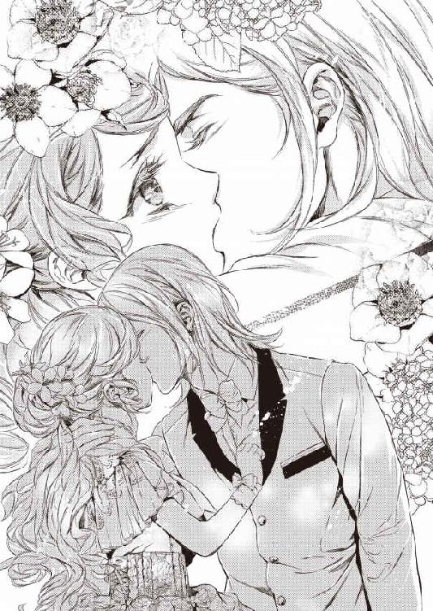
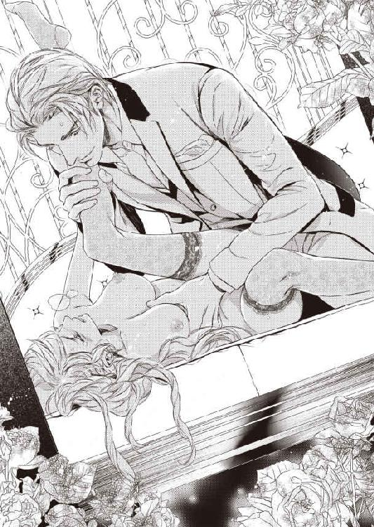
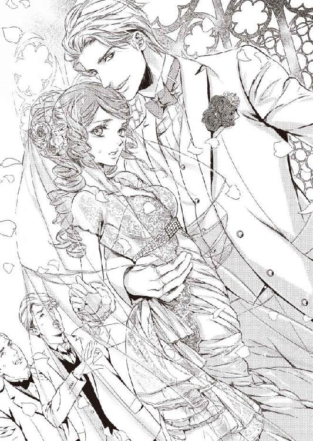

| 石油王の略奪 愛執の檻 (蜜猫文庫) | |
| みかづき紅月 | |
| 竹書房 (2014) | |
この作品は縦書きでレイアウトされています。
また、ご覧になる機種により、表示の差異が認められることがあります。
一部の漢字が簡略字で表示されていることがあります。
イラスト／Ｃｉｅｌ
プロローグ
「──ごきげんよう。僕だけのプリンセス」
夜も更けた時分、タリアス国の第七皇女、ティナの部屋へとつながるバルコニーから侵入してきたのは、まるで絵画から抜け出してきたかのような見目麗しい少年だった。
長めに伸ばした淡い色の金髪は、ランプの光を受けて輝き、銀髪にも見える。
その光が、コバルトブルーの瞳に映りこんで高価な宝石のように煌き、窓辺のソファに腰掛けて読書をしていたティナは、しばしの間、ぼうっと見とれてしまう。
背がすらりと高い青年は、優雅な所作でティナの手をとると、手の甲に唇を重ねた。
「っ!?」
手袋越しのキスなのに、ティナは細い肩を跳ね上げ、頬を染めて俯いてしまう。
そんな彼女の恥じらいの仕草に、少年の目が不敵に細められる。
まだ十六の少年であるにもかかわらず、その双眸は、獲物を狙う野獣のような鋭さを帯びていた。
「そんなに緊張して。まだ慣れないのかい？ もうこうして二人きりで会うようになって一年が経つというのに」
少年はティナの肩にかかった赤い髪を一房手にとって、恭しく口づける。
「っ!? し、仕方ないでしょう？ だって......今まで男の子と話したことすら......なかったんだもの......けして許されないことだって言われていたし」
ティナは赤茶の瞳をさまよわせると、薔薇の花びらを思わせる唇を噛みしめた。
「箱入りプリンセスとはよく言ったものだな。でも、これじゃまるで囚われの姫君だ」
「......お父様たちは、『私のためを思って』と仰っているわ」
「そんな言葉を素直に信じるなんて。君は本当に純粋だな。僕とは大違いだ」
「貴方は......悪い人なの？」
「さあ、君はどう思う？」
少年はティナにいたずらっぽく笑みかけると肩を竦めてみせる。
ティナが頬を膨らませると、ムキになった。
「ずるいわ。質問に答えて」
「質問の答えは──善は簡単に悪になりうるし、逆もまたしかり。君にとっての善悪は君が決めるしかない、だ」
「............」
まるで謎かけのような彼の言葉に、ティナは眉をひそめる。
（私のほうが七歳も年下だから、彼の言うことが分からないのかしら......）
そう思うが、どうもそれだけではない気がする。
彼と同い年くらいの女友達たちとの会話で、こんな風に困ることはない。
ティナの知る子供たちの誰よりも、彼は大人びて見える。
ある日、突然ティナの部屋にふらりやってきて、それ以来、ひと月に一、二度顔を見せるようになった謎めいた少年。
彼は、いまだに自分の素性どころか名前すらティナに明かしていない。
教えてくれたのは年齢だけ。
身に着けているものは、どれも上質そうなものばかりだし、城に出入りを許されているからには、身元はしっかりとしているはずだが──
それでいて、皇女の部屋に忍び込んでくるような大胆不敵な一面も持つなんて。
一体、どんな環境が彼をこんな風に育てたのだろう？
不思議に思いながら、ティナは呟いた。
「貴方はいつも難しいことを言うのね......私にはよく分からないわ」
「難しく考える必要はない。君は、僕をどう思っているんだい？」
「どう......って......」
唇が今にも触れてしまいそうなほど、近い距離まで彼の整った顔が迫ってきて、ティナの胸が甘く震えた。
彫りの深い顔立ちに、すっと通った鼻筋、長いまつげに息を呑む。
「......悪い人では......ないと思うわ......本をたくさんプレゼントしてくれるし......私が知らない外の世界のことも......いろいろと教えてくれるし。親切......な人だと思うわ」
本や絵本の類は読んではならないと禁じられてはいるけれど──という言葉をティナは呑み込んだ。
（お父様たちがいけないって仰るものをわざわざプレゼントしてくる人は......悪い人なのかもしれないわ。だけど、私は、本や絵本が悪いものだとは思わない......それなのに、どうしてお父様は、本や絵本を読んでは駄目だと仰るのかしら......）
今まで両親の言うことに素直に従ってきたティナの胸に、疑惑の念が芽生える。
真っ白な布地に零れた一滴のインクが、瞬く間に拡がって滲んでいくように。
「親切な人──か。それだけ？」
少年がティナの唇を親指でそっとなぞると、不敵に微笑みかけてきた。
彼の吐息を感じて、ティナは無意識のうちに熱いため息をついてしまう。
コバルトブルーの瞳に吸い込まれそうになり、目を逸らすことができない。
「......よく......分からないわ......」
「それじゃ、教えてあげよう」
歌うように言うと、少年がティナの唇に自分の唇を重ねてきた。
「あ......」
彼がプレゼントしてくれた絵本の中に描かれていたプリンスがプリンセスにキスをするロマンチックなシーンがティナの脳裏によぎる。
「ン......」
唇を撫でる優しい感触に、夢見心地になる。
頭の芯が蕩けるような甘い感覚が、唇を通して全身へと拡がっていく。
胸が早鐘を打ち、今にも弾けてしまいそう。
「は......ぁ......」
ティナは目を閉じたまま、悩ましい吐息を放つ。
と、その直後、いきなり顎を掴まれたかと思うと、唇の隙間から滑らかなものが強引に侵入してきた。
「ンンッ!?」
くぐもった声を漏らすと、ティナは愕然と目を見開く。
少年の舌が、ティナの舌に執拗なまでに絡んできた。
つい先ほどまでの甘いキスとはまるで異なる荒々しいキスに、ティナは息すら思うようにできない。

「っ......はぁはぁ......ン......く、苦し......ンン......」
少年の腕に強くかき抱かれたティナは、あまりにも激しいキスが怖くなり、必死に彼から逃れようとする。
しかし、力でかなうはずもなく、少年にされるがままだった。
「ン......ンンっ......は、あ、あぁ......」
自分でもびっくりするような甘ったるい声が唇から洩れ出てしまう。
得体の知れない快感が身体の奥でみるみるうちに肥大していく。
怖いはずなのに──いつしかティナは、たどたどしい舌使いではあるが、彼の舌に応じてしまっていた。
舌が触れあい、絡み合うたびに、身体が熱く火照っていく。
いつ終わるともしれない熱烈なキスによって、ティナの唇は痺れてしまった。
だが、それでも少年はティナの唇を貪ることをやめない。
「っふ......はぁはぁ......あ、ン......」
息ができず、ティナの意識が一瞬遠のいた。
ふわりと身体が浮くような不思議な感覚の後、ティナは少年の腕の中でぐったりとその場に崩れ落ちそうになる。
ティナの華奢な身体を逞しい腕で支えると、少年はようやく彼女の唇を解放した。
「............」
目を薄く開いたティナは、自分と彼の唇をつなぐ銀糸のアーチが闇にあえなく消えていく様に心をひどく掻き乱される。
少年は、いとおしげにティナを見つめてから、彼女の耳に囁いた。
「──これで分かっただろう？ 君は僕だけのものだということが」
彼のキスを受け入れてしまったティナは、そっと目を伏せて、返事を躊躇う。
（......私は......彼だけのもの......）
心の中で彼の言葉を繰り返すと、胸が熱く震えた。
「どうして......そんなに......私を欲しがるの？」
「美しい赤い髪、ルビーのように燃える瞳。穢れないまっすぐな心──君みたいな人はそうはいない。僕は、美しい君を美しいまま護り抜きたいんだ。この世界には、美しいものを穢そうとする醜い人種が存在するからね」
少年の透き通ったコバルトブルーの瞳の奥に仄暗い憎しみの炎を認め、ティナの背筋に冷たいものが走る。
しかし、それはあくまでも一瞬のことだった。
すぐさま、柔らかな笑顔が憎しみの色を覆い隠してしまう。
彼が見ている世界と自分が見ている世界には、大きな隔たりがある。
ティナは、彼の見ている世界が気になって仕方がない。
だが、拒絶の意を彼から感じ、それ以上、深く追及することを諦めると、赤毛を指に絡めながら呟いた。
「......赤く見える髪も目も、ただ目立つだけで......お姉さまたちの髪は、みんなきれいなブロンドなのに......私一人だけが......違っていて......こんな髪も目も......嫌いだわ」
「他と違うということは、それだけ稀少価値が高いということだ」
「きしょう......かち？」
「ああ、そうだ。例えば、珍しい宝石であればあるほど、数は少なく、求める人は多い。値段は天井知らずにあがっていくだろう？ たとえばそうだな──アレキサンドライトのように」
「そんな宝石、聞いたことないわ」
「当たる光によって色を変える珍しい宝石だよ」
「へえ......そうなの。色が変わる宝石なんてあるのね。一度でいいから見てみたいわ」
ティナが夢見る目つきでアレキサンドライトという宝石に想像を巡らしながら呟くと、クライヴはしっかりと頷いてみせる。
「僕がいつか見せてあげるよ。ティナ。君は僕にとってのアレキサンドライトだ。その他大勢の姫たちとは違う。君だけが欲しい」
少年がティナの身体を横抱きにすると、天蓋つきのベッドへと降ろしてきた。
「──まだ寝ないわ。眠くないもの。いつものようにお話の続きを一緒に考えて」
ティナが身体を起こそうとするが、少年が身体を重ねてきて、彼女の動きを封じる。
「......ど、どうしたの？」
「さっきのキスのせいか、どうしようもなく君が欲しくなってしまった」
少年がもどかしげに前髪を掻き上げると、ティナの首筋にキスをしてきた。
「え？ やっ......く、くすぐった......ン......や、だ......やめ......て。あは......」
ティナがくすぐったそうに首を竦めながら、彼の唇から逃れようとする。
だが、彼はティナの細い首筋にキスの雨を降らしてくる。
「ン......あ......や......ぁ......」
くすぐったいだけのはずなのに、キスをされたときと同じような声を洩らしてしまい、ティナはものすごく恥ずかしくなる。
さきほどの息もできないほど激しいキスを思い出し、頬が熱を帯びる。
やがて、彼の唇が細い鎖骨へと辿りつき、濡れた舌が鎖骨のくぼみをつぅっとなぞり出した。
「あっ......何......それ......どうして、そんなこと......だ、駄目......あぁ」
その行為の意味は分からなかったが、何かとてもいけないことをしているような気がして、ティナは青ざめる。
「これからしばらく会えなくなる。だから、その前に──君を名実ともに僕のものにしておきたいんだ」
「そ、そんな......」
もう彼と会えなくなってしまう!?
いきなり告げられた衝撃の事実に、一瞬、ティナの頭の中は真っ白になった。
「どうしてそんな意地悪を言うの？ 会えなくなるなんて......イヤ......」
ティナの赤い目が潤み、大粒の涙が零れ落ちていく。
少年は彼女の胸に顔を埋めると、深いため息をついた。
「僕だって君と会えなくなるのはイヤだよ。ずっと傍にいたい。だけど、今のままの僕では駄目なんだ」
「駄目？」
「ああ、穢れた大人たちに全てを奪われてしまったからね──だけど、必ず取り戻してみせる。必ず──」
鬼気迫る少年の迫力に、ティナは何も言えなくなってしまう。
少年は顔を起こすと、情熱に燃え上がる青い瞳でティナの目を射抜いた。
「──僕は欲しいものは、必ず手に入れてみせる。たとえ、どんな手段を使っても」
「............」
自信と誇りに満ち満ちた彼の表情がティナの胸を打つ。
気がつけば、ティナは彼の背中に腕を回し、抱きしめていた。
「貴方なら、絶対にできるわ。だって、他のどんな男の子ができなかったことだって、こうしてできたのだもの」
「............」
ティナの言葉に、少年の険しい顔がフッと和らぐ。
少年は、ティナに微笑みかけると一言一言を噛み締めるように言った。
「必ず君を奪いにくる。君をこの牢獄のような城から解き放ってみせる。そのときまで、君は僕を待ってくれるか？」
「ええ、待つわ」
ティナが迷わずそう答えると、少年の顔に微笑みが戻る。
凄みを帯びた怖い表情が彼の顔から消え去り、ティナはホッと胸を撫で下ろした。
「──ちょっと僕がどうかしていたね。将来、絶対に君を奪いにくるために戻ると決めていたはずなのに......他の誰かに奪われる前に僕だけのものにしておこうだなんて。矛盾しているな」
「むじゅん？」
「おかしなことって意味だ。もう少しで──欲望に流され、まだ何も知らない君を傷つけてしまうところだった」
「変なことを言うのね。貴方は私を傷つけたりはしないわ。いつだって楽しいことばかり教えてくれているもの」
純粋無垢なティナの微笑みに少年は苦笑すると、身体を起こした。
「やっぱり、今はまだそのときじゃない。君の信頼を裏切るような真似はしたくないから、君が大人になるまで待つことにするよ」
そう言うと、少年は重厚な表紙を持つノートが開かれたまま置かれているライティングデスクへと向かう。
ティナもベッドから飛び起きると、彼の傍へと駆けつけた。
「それじゃ、この間の話の続きを考えようか？」
「ええっ！ 王子様が旅行先でお姫様にプロポーズする場面ね！」
「うん、まずは二人がどんな場所に旅行に行ったかを決めないと」
「ううーん、どこか遠くの異国の地がいいわ！ そうね......貴方の目みたいな真っ青な海があるようなところ！ 前にお友達に写真を見せてもらったの。普通にお城でプロポーズだなんて退屈だもの。お城には飽き飽きしているから」
「そうか。じゃあ、そうしよう」
ティナの言葉に耳を傾けながら、少年はノートに物語の続きを綴っていく。
彼の横でノートを覗き込むと、ティナは胸を躍らせながら想像の世界に浸る。
ずっとこのひとときが永遠に続けばいいのに。
何度そう願ったことだろう。
でも、楽しくて幸せなひとときこそ、あっという間に過ぎてしまう。お茶会やお稽古ごとみたいな退屈な時間は気が遠くなるほど時間が進まないというのに。
（しばらくの間、会えなくなるって......どれくらいなのかしら？ あまり長くないといいのだけれど......）
ティナが胸のうちで呟いたそのときだった。
城の教会の鐘が、厳かな音色を奏で始め、十二時の時を知らせる。
少年がノートから顔をあげると、椅子から立ち上がった。
胸元から、赤い小箱を取り出して、ティナへと握らせる。
「ティナ、十歳の誕生日、おめでとう。一番最初に君の誕生日を祝いたくてね」
「ありがとう。真夜中にお誕生日をお祝いされるのは始めてだわ。プレゼント、開けてみてもいい？」
「もちろん──」
ティナが目を輝かせて赤色のシフォンのリボンを解くと、小箱を開いた。
果たして、小箱の中には小さなルビーのピアスが入っていた。
「わあ、可愛いピアス！ ありがとう！ 大切にするわ！」
声を弾ませるティナの耳に、少年がピアスをつけてくれる。
ティナは、手鏡を覗き込んで笑み崩れる。
少年がティナを抱きしめると、彼女へと囁いた。
「君の誕生日には──必ずプレゼントを贈るよ。僕のことを忘れないように──」
「プレゼントなんてなくても、貴方のこと、忘れるはずなんてないわ。誓って、一日だって忘れたりしないわ」
ティナは唇にそっと指を押し当てると、噛みしめるように言った。
月にたった一度か二度の彼との秘密の逢瀬だって、ティナにとっては忘れがたい大切な思い出となっていた。
それに加えて、あんなに情熱的な初めてのキス。
忘れようとしても、忘れられるはずがない。
それなのに、もう、本当に彼と会えなくなってしまうのだろうか？
鼻の奥がツンと痛くなり、ティナは目をしばたたかせながら呟いた。
「......あの......私も貴方に何かお返しをしたいの。いつもいただいてばかりで悪いもの。離れていても......手紙や贈り物くらい、してもいいわよね？ 居場所くらいは......教えてくれるわよね？」
声が震えてしまう。
すがるような目でティナは少年を見つめた。
だが、少年は悲しそうに静かに首を左右に振った。
「残念だけど、それはできないんだ」
「どう......して......」
「──僕は君以外に何もいらない。だから、僕を信じて、僕が君を迎えに来る日を待っていてほしい」
少年は熱のこもった声でそう言うと、ティナの大きな目にたまった涙を唇で拭う。
互いに見つめあうと、どちらからともなく再び唇を重ね合っていく。
（まるでおとぎ話に出てくるお姫様になったみたい......今は悲しいけれど......きっと彼は私を迎えにきてくれるはず。おとぎ話は、ハッピーエンドで終わるものが多いもの......）
覚えたばかりの甘美なキスは、瞬く間にティナを夢うつつの世界へと誘っていった。
しかし、夢はいつか必ず醒めるもの。
そのことを子供時代のティナは、知る由もなかった。
第一章
「......めでたしめでたし」
猫足のアンティークのソファに腰掛けたティナは、浮かない面持ちで、何度も読みこんでボロボロになってしまった絵本の表紙を丁重な手つきで閉じた。
誰でも一度は読んだことはあるだろう眠り姫の物語。
魔女の呪いによって、百年の眠りについたプリンセスを勇猛果敢な王子が茨に覆われた城から見事救い出し、その後、幸せな生活を送ったというもの。
ティナは、静かに目を閉じて、深いため息をつく。
「現実はおとぎ話のようにはいかないわ。王子様と結婚したお姫様は、必ずしも幸せになるとは限らない......」
もう何も知らない夢見る少女ではない。
二十の誕生日を明日に控えたティナは、そう何度も自分に言い聞かせてきた。
十年前の甘い思い出と約束を懸命に忘れようとして──
だが、そう簡単に忘れられるはずもない。
彼は、自分に初めて外の世界というものを教えてくれた。
想像の世界に遊ぶという楽しみも教えてくれた。
初めての恋、初めてのキス。そして、「いつか必ず奪いにくる」という約束。
片時だって忘れることはなかった。
いつだって彼のことを想い、再会を楽しみに待ち焦がれていた。
「ずっと待つって約束したのに......約束は守らなくてはならないものなのに」
罪悪感に、胸がぎゅっと締め付けられる。
「私の王子様は、彼じゃなかっただなんて」
ティナのルビーの瞳が潤み、涙が頬を伝わり落ちていく。
彼女の左手の薬指には、大粒のブルーダイヤモンドをあしらった指輪が輝いていた。
ティナは一週間前に婚約した。
否、したというよりは、させられたといったほうが正しい。
相手は隣国カナルディアの国王。年は六十七。ティナは、彼の第五王妃として嫁ぐこととなったのだ。
カナルディア国は、強大な軍事国家。
一方、小国ながらも豊富な鉱山資源を誇るタリアス国は、常に周囲の国々に狙われている。
カナルディア国の後ろ盾がなければ、亡国の危機に晒されてしまう。
国と国との結びつきを強固なものにすべく、ティナの姉たちも、全員カナルディア国の王族へと嫁いでいった。
そして、ついにティナの番がやってきてしまったのだ。
今なら、両親が自分たちに本を読んではならないと禁じていた理由がわかる。
「絶対に叶わない夢を見させないため──」
だけど、ティナは夢を見てしまった。夢を見てはならない身なのに。
「こんなことになるなら、あの夜、彼に奪ってもらえばよかった......」
ティナは、彼と一緒に過ごした最後の夜のことを思い出していた。
もう子供ではないのだから、あの夜、彼が自分にしようとしたことがどういう類のものだったかということは想像がつく。
ティナのサロンに集まる貴族の子女たちはかなりませていて、当然そういった類の話でも盛り上がる。
彼女たちは、親の目を盗んで自由奔放な恋愛を楽しんでいるようだった。
本を禁止するよりも、サロンでこういった類の会話を禁止したほうがよほどいいのではと眉をひそめるほど、過激な話すらあった。
しかし、そういった彼女たちの話が、ティナの想像を掻き立て、あの夜の続きを思い起こさせる。
あの美しい少年とのキスの続きを──
「あぁ......そんなこと、考えてはいけないのに......」
国王の花嫁となる姫は清らかな身でなくてはならないのに。
なんて恐ろしいことを考えているのだと、ティナは自分が怖くなる。
実際に、カナルディア国王と婚約する前にもティナが清らかな身であるかどうか、宮廷医師の手によって確かめられたのだ。
多くの人々が見守る中、誰にも触れられたことのない場所に医師の手が潜り込んでいったときの恥辱とショックは生涯忘れられないだろう。
「国のために結婚することが、国王の娘として生まれた皇女の義務なのに......」
熱い吐息をつくと、ティナは片時も離さず、身に着けているピアスに触れた。
それはあの夜、彼がプレゼントしてくれたルビーのピアスだった。
あの夜以来、彼は本当に姿を消してしまった。
ティナは、毎晩のように彼を待ち続けていたが、彼が姿を見せることは一度もなかった。
だが、約束どおり、誕生日の夜には、真紅の箱に包まれた差出人不明のプレゼントが届くようになった。
誰が届けてくれるのかすら、ティナには分からない。
何度も確かめようとはしたが、決まってどういうわけか異様な眠気に襲われ、目が醒めるとライティングデスクの上に彼からのプレゼントが置かれているのだ。
彼の協力者が城内にいるのは確かなのだろうが、その正体をつきとめるためにうかつなこともそうそうできない。
あくまでも、ティナは世間から隔絶された存在であり、それを脅かす存在がいるということが周囲に知られてしまえば、大問題に発展しかねない。
自分の不用意な行動によって、彼を危険な目に遭わせてしまうことだけは避けねばならなかった。
彼と会いたい。彼のことを知りたいという思いと、彼を危険な目に遭わせてはならないという相反する葛藤がティナを苛んでいた。
今までに彼から贈られてきたプレゼントの数々を振り返る。
ピアスの次の年は、小粒のルビーをあしらったブレスレット。その次の年には、やはりルビーをあしらった髪飾りだった。
年を追うごとに、プレゼントは豪華なものになり、去年は耳たぶがちぎれてしまうのではないかというほど大粒の涙型のルビーをあしらったピアスが届いた。
どのプレゼントも、彼が送ってくれた本と一緒に、クローゼットの奥にしまっている宝箱の底に隠してある。
最初にプレゼントしてもらったピアス以外は──
彼の気持ちはとてもうれしいが、一目で高価なものだとわかる贈り物を身に着ければ、変に噂になってしまいかねない。
彼との秘密は、彼のためにも絶対に守り通さねばならないものだった。
ティナは、ソファから立ち上がると、ライティングデスクへと移動した。
彼と一緒に創っていた物語の続きを書こうと何度も試みてはみたものの、彼なしでは続きは書けそうにもない。
それでも、結婚してしまうまでにはなんとしてでも書き終えたい。
愛もない結婚に絶望してしまう前に、せめて、物語の中の二人にはハッピーエンドを迎えてもらいたい......。
そんな思いも新たに、ティナは複雑な面持ちでインク壷に羽ペンを浸す。
物語のタイトルはまだない。
囚われのプリンセスが王子の手によって助けられ、小さなものから大きなものまで、いろんな夢を一緒に次々とかなえていくという胸躍るストーリーで、ティナのありとあらゆる夢がギュッと詰まっている。
数々のロマンスと冒険の末、旅先の異国の地で、王子はついにプリンセスへとプロポーズをする──そこで話は止まったままだった。
「愛している人からのプロポーズってどんな気持ちがするものなのかしら？」
ティナがそう呟いて、想像を廻らせようとしたそのときだった。
教会の鐘の音がしめやかに響き、日付が変わったことを知らせる。
いつもこのタイミングで異様な眠気に襲われてしまう。
だが、今日こそは眠ってなるものかと、濃いショコラを夕食の後にたくさん飲んでおいたからか、珍しく眠くならない。
（今日こそ、彼の協力者の正体を知ることができるかも......彼のことを知る手掛かりを掴むことができるかも......）
ティナの胸が興奮に震え、期待に高鳴る。
どんなことでもいい。彼のことを知りたい。彼と連絡をとりたい。
十年来の切なる願いが、ついに叶うときがやってきたのかもしれない。
やがて、鐘が十二回鳴り終え、辺りがしんと静まり返る。
ティナは緊張の面持ちで入り口から誰かが侵入してくるのではと身構えた。
しかし、扉はいつまで経っても開かないし、異様な眠気もやってこない。
いつもの誕生日とは何かが違う違和感に、ティナの心臓がぎしりと軋む。
嫌な予感が暗雲となり、ティナの胸を黒々と覆いつくしていく。
ライティングデスクの置時計の秒針がやけに大きく耳障りに聞こえる。
「............」
息が詰まるほどの緊張に、胸が張り裂けそうだった。
もしかしたら、もう彼からの贈り物は届かないかもしれない。
贈り物そのものはどうでもいい。
ただ、彼と自分をつなぐ唯一の細い縁が切れてしまうことが怖くてならない。
ティナは自分の腕を抱きしめて、祈るような思いで扉を見つめつつづける。
だが、一時間経っても、二時間経っても──扉は開くことはなかった。
時間が遅々として進まない。
やがて、空が白み、鳥のさえずりが聞こえてきて、ティナはついに悟った。
夢は醒めるもの。そして、彼との夢は、今、終わりを告げたことを。
「......ごめんなさい。ごめんなさい」
ティナは顔を両手で覆ってうなだれてしまう。
彼は、きっとティナの婚約を知ってしまったのだろう。
約束を違えたのは自分であり、自業自得なのだと分かってはいても、やるせない気持ちに嗚咽と涙が止まらない。
事情を説明しようにも、彼の名前も居場所も知らず、どうすることもできなかった。
だが、それでも彼を裏切ってしまった事実は変わらない。
（彼は、ずっと約束を守ってくれていたのに。私は彼との約束を守れなかった......彼を傷つけてしまったに違いない。彼は私に失望したに違いない......）
本当は、心のどこかで、こうなってしまうのではないかと恐れていた。
だけど、それを正視するのが怖くて、必死に目を背けていた。
婚約の儀の際にも、彼に国王との婚約を知られることが怖くて怖くて、そのことだけしか、考えられなかった。
どうか、気付かれていませんようにと願ってはいたが、国王と皇女の婚約は、大々的に新聞にもとりあげられていて、その望みは薄いと分かっていた。
それでも、そう願わずにはいられなかった。
だが、今夜、彼からの贈り物が届かなかったということは、約束の反故を意味していた。
間違いない。彼は自分の婚約のことを知っている。
一縷の希望も儚く散り、彼と自分を結ぶたった一つのつながりさえも、ついに断たれてしまった。
あの美しい少年が、どこの誰か知りえる機会は永遠に失われてしまったのだ。
ずっとずっと恋焦がれていたあの人に、再会すらできずに失恋してしまうなんて。
「......あぁ」
ティナは声を押し殺して泣いた。
感情が凍てつき、今にも砕け散ってしまいそうな胸の痛みに耐えながら。
ゆっくりと心が死んでいくのを感じながら。
「ティナ皇女、お誕生日とご婚約、めでたいことつづきですな！」
「ありがとうございます。ヴォーグ卿」
「いやぁ、これでますますタリアス国とカナルディア国の関係が強まりますなあ」
「国のために役立てることを光栄に思います」
プリンセスの婚約と誕生日──二つの祝い事が重なり、国全体がお祝いムードに包まれている中、盛大なパーティーが王城にて催されていた。
しかし、上質のオーガンジーに繊細なレースをふんだんに使用した淡いエメラルドグリーンのドレスに身を包み、髪をアップに結い上げた主役の表情は浮かない。
精一杯笑顔を浮かべて、賓客に挨拶をしてはいるものの、いつもの彼女を知る側近の目には彼女の憔悴ぶりは明らかだった。
それでも、懸命に自分の役目を果たそうとしている姿は健気でいじらしい。
「プリンセス。少しお疲れのようですが......ソフィアを呼んで参りましょうか？ 少し夜風にでも当たって休まれたほうがよいのでは？」
スマートな黒のタキシードを着こなした美丈夫の青年が、ティナに声をかけてきた。
年の頃合いはティナよりも少し上といったところだろうか。
輝く黒髪を後ろで一つに束ねた、目元が涼やかな青年だ。
クールな微笑みは穏やかではあるが、その目は鋭く、どことなく油断できない雰囲気を醸し出している。
研ぎ澄まされたナイフの刃のような雰囲気を身にまとった青年だった。
自分と年が近い異性とは、城内でも、ほとんど顔を合わせる機会がないため、ティナは彼のことを知らない。
パーティーですら、国王との婚約が正式に決まるまでは参加を厳しく制限され、たとえ参加できたとしても、取り巻きの少女たちに周囲を固められ、異性とのふれあいは固く禁じられていたのだから、それも無理はない。
だが、ティナは、自分の身の回りの世話をするソフィア──コーンウォル公爵夫人のことを知っているような彼の口ぶりが気になって彼の問いかけに応じた。
「いえ──私は大丈夫です。主役が会場にいなくてはお父様たちの顔を潰すことになってしまいかねませんし。貴方はコーンウォル公爵夫人のお知り合いですか？」
「はい、ソフィアの遠縁にあたるアーロン・ベイルと申します。ティナ皇女、以後、どうぞお見知りおきを──」
右手を左胸にあてると、アーロンと名乗った青年はティナに一礼してみせた。
その優雅な所作が、ほんの少しあの少年に似ている気がして──ティナは息を呑む。
（髪の色も雰囲気もまったく違うのに......私ったら、どうかしてるわ......何を見ても、誰に会っても、彼のことを考えてしまわずにはいられないなんて......人目を忍んで会いに来てきてくれていた彼がこんな場所にいるはずなんてないのに......）
ティナは首を小さく左右に振ると、腰を落としてアーロンに礼をして踵を返す。
と、そのときだった。
不意に鋭く刺すような視線を感じて、ティナは足を止めた。
ハッと顔をあげる。
果たして、視線を感じた方向には、人だかりができていた。
華やかなドレスを着た美しい女性たちが、長身の青年を取り囲んでいる。
「......っ!?」
その青年を目にした瞬間、ティナの手から扇子が落ちてしまう。
黒のタキシードに身を包み、銀髪にも見える淡い金髪を無造作に後ろに流した青年の双眸は、コバルトブルーの輝きを放っていた。
これほど美しく輝く瞳を持つ人物を、ティナはたった一人しか知らない。
ずっと恋焦がれてきたあの少年だけしか......。
（うそ......まさか......彼......なの？）
信じられない思いで、ティナは目を見開き、呆然とその場に立ちつくす。
胸が締めつけられ、息すら思うようにできない。
ずっと待ち焦がれていた彼が、まさかこんな形で堂々と自分の前に姿を現わすなんて思いもよらなかった。
しかし、本当に彼なのだろうか？ 他人の空似では？
さっきのアーロンに少年の面影を見たように、自分が見たいと願うものを見ようとしているだけでは？
疑ってはみるものの、彼に間違いないと、直感と本能が訴えかけてくる。
心臓が、壊れてしまうのではというほど、早い鼓動を刻む。
夢かうつつかすら分からなくなったティナが激しく混乱していると、青年がティナのほうへと流し目をくれ、口元に不敵な笑みを浮かべてみせた。
それは、ひどく意味深な微笑みで──ティナは、反射的に彼の視線から逃れるように、目を逸らしてしまう。
彼の強いまなざしに囚われてしまったが最後、二度と目を逸らすことができない不安に駆られて。
だが、目を逸らしたはいいが、やはり彼のことが気になって仕方がない。
別な方向を眺めるフリをして、視界の端に彼の姿をとらえて彼の様子を窺う。
青年は、上背があるせいもあるが、一見、周囲に人を寄せ付けない冷ややかな雰囲気を身にまとっている。
にもかかわらず、その自信と威厳に満ちた振る舞いが、周囲の人を不思議と惹き付けているようで、彼を取り巻く女性たちは、誰もがうっとりと彼に見惚れている。
美しい女性たちの羨望のまなざしの先にいる彼を見ていると、なんともいえない複雑な思いに駆られ、ティナは視線を彷徨わせる。
「ティナ様、どうかされましたか？ 扇子を落とされましたよ？」
「コーンウォル公爵夫人......」
ティナはコーンウォル公爵夫人、ソフィアに礼を言って、扇子を受け取った。
「あの......あちらにいらっしゃる方はどなたかご存知ですか？」
ティナが、扇で口元を隠すと、ソフィアへと尋ねた。
「ええ、ええ！ それはもう！ ティナ様、もちろんですわ！ 彼は有名人ですもの！ 巷では、彼の話でもちきりですのよ！」
「そうなのですか？」
有名人と言われても、外界と隔絶され、情報を遮断された世界で過ごしているティナに分かるはずもない。
サロンでのおしゃべりと少年から贈られた本、家庭教師たちの授業のみがティナの情報源なのだから。
しかも、ここ二週間ほどは、婚約や結婚の準備で忙しく、サロンを開く時間もなかったこともあって、彼のことは初耳だった。
「あの方はクライヴ様とおっしゃって、石油王と名高い大富豪ですわ。二日ほど前に、タリアス国にいらっしゃったばかりですの。なんでも新しい油田を発掘されたとかで、しばらく、こちらに腰を据えて事業を拡大するおつもりなんですって！ 国王様も王妃様も喜んでおいでですわ！」
「......石油王？」
「ええ、まだ二十六歳とお若いにもかかわらず、世界中にご自分の会社を持っていらっしゃる実業家ですのよ」
「............」
ティナは驚きのあまり、再び扇子を取り落としてしまいそうになる。
頭の中が真っ白になって、何も考えていられなくなる。
「ティナ様？ どうかされましたか？ お顔が真っ青ですけれど──」
「い、いえ──ちょっと......外の空気を吸ってきます......」
パーティーの主役が席を外すのはよくないことだと承知はしているが、とても平静ではいられない。
こんな状態では、かえってゲストに粗相を働いてしまいかねない。
まずはいったん頭を冷やして、気持ちを切り替えなければ......。
考えを改めると、ティナは人目を避けるようにパーティー会場を後にし、足早に廊下を進むと、人気のないバルコニーへと向かう。
バルコニーへと続く硝子扉を開くと、冷たい空気がティナの頬を撫であげた。
熱病のように熱く火照った頬や頭が冷やされ、ティナは胸の中を渦巻く熱風を逃すかのように深いため息をつく。
だが、そのときだった。
「──なぜ、逃げる？」
「っ!?」
予想だにしなかった低い声がバルコニーに響き、ティナは身を竦ませた。
熱く燃えさかる心臓を氷の手で握り締められたかのような感覚。
ティナが恐るおそる後ろを振り返ると、そこには銀色の月明かりを浴びた先ほどの紳士の姿があった。
石油王、クライヴ。
タキシードが月光を反射してしっとりとした光沢を放ち、彼が携えている杖の先端に埋め込まれた大粒の宝石が妖しく煌めく。
コバルトブルーの双眸が、ティナを見据えていた。
そのまなざしは、厳しく鋭くはあるが、やはりかつての少年の面影を残している。
十年前に時が遡ったような錯覚に、ティナはまばたきも忘れて彼を見つめる。
「むしろ再会を喜ぶべき感動の場面ではないか？」
「やっぱり......貴方は......」
クライヴは皮肉めいた笑いを浮かべて頷いてみせると、ティナのほうへと悠々とした足取りで歩いてくる。
彼の射るようなまなざしから、ティナは逃れることができない。
しかし、本能が彼は危険だと警鐘を鳴らしていた。
ティナは、慌てて踵を返すと、バルコニーから立ち去ろうとする。
だが、クライヴに背後から腕を掴まれ、力任せに引っ張られた。
「──っ!?」
高いハイヒールをはいていることもあり、ティナは大きくバランスを崩してしまう。
気がつけば、ティナはクライヴの胸に抱きしめられていた。
彼自身の香りとオリエンタルな香りのする香水とに全身を包みこまれ、眩暈と共に全身の力が抜けきってしまう。
「ずっとこの日が来るのを待ち焦がれていた。もう逃がさない──」
息もできないほど彼に強く抱きしめられ、ティナは熱い吐息をついた。
自分もずっと会いたかった。この日をどれだけ待ち望んだことか。
そう言おうとしたティナだったが、左手の薬指に光る婚約指輪が視界に入り、自分にそんなことを言う資格はないと言葉を呑みこむ。
「......だけど、もう......私は......婚約者のいる身で......」
ティナが震える声でようやくそれだけを口にすると、クライヴが彼女の耳元で、熱い吐息を吹き込みながら囁いてきた。
「だから、どうした？」
「──え!?」
想像だにしなかった返答がかえってきて、ティナは自分の耳を疑う。
クライヴはティナの左手をとると、その場に片膝をついて恭しく跪いた。
それは男性が女性にプロポーズをするときにとる姿勢。
ティナは、自分の身に何が起こっているのか分からず、ぼんやりと立ちつくす。
通常であれば、ここで「私と結婚してくれますか？」というプロポーズの言葉がかけられるのだが、すでにティナの薬指には婚約指輪が嵌められている。
クライヴの意図が分からず、ティナが困惑していると、彼は彼女の薬指から婚約指輪を抜きとってしまった。
「っ!? な、何をっ......」
「邪魔だから外したまでだ」
「......じゃ、邪魔って!?」
クライヴの言葉にティナは自分の耳を疑う。
まさか、一国の国王から預かった国宝級の宝を邪魔呼ばわりする人間がいるなんて。
クライヴの奔放かつ大胆不敵な言動に、ティナの混乱に拍車がかかる。
「今年の贈り物だけは、俺の手で直接君に渡したくてね。いつもとやり方を変更した。昨晩はあまり眠れなかったようだな。目が赤い。俺を想って泣いたのか？」
「......っ!?」
図星を突かれ、ティナは慌てて目を伏せる。
だが、無理やり顎を掴まれ、彼のほうを向かされてしまう。
「君を傷つけたくはなかったが──せめて、これくらいの仕返しくらいはさせてもらわねばな？ いわば、意趣返しのようなものだ」
「............」
クライヴの意味深な言葉に、ティナは唇を噛み締めた。
ティナが約束を破ったことを暗に言及しているのだと分かるだけに、何も言えない。
嫌な動悸が胸を突き上げてくる。
約束を破りたくて破ったのではない。
そう言いたかったが、唇が震えて、思うように言葉を紡ぎ出すことができない。
「──君の薬指に相応しいのは、俺が贈る指輪以外にありえない」
クライヴがそう言うと、ポケットの中からワインレッドの小箱を取り出して、箱の蓋を開いてみせた。
小箱には、彼の杖にあしらわれているのと同じ大粒の宝石があしらわれた指輪があった。
月明かりを浴びて深い緑色に輝いている。
「この宝石が、アレキサンドライトだ。かつて君に見せると約束した」
「これが......アレキサンドライト......」
当てる光によって色を変える宝石。
かつて、あの少年が、自分を例えてくれたもの。
懐かしい思いに駆られながら、ティナは宝石に見とれてしまう。
だが、彼に恭しく左手を捧げ持たれた瞬間、ハッと我に返った。
「い、いけません！ そんなっ!?」
クライヴの恐るべき意図に気付き、彼の手から自分の手を奪い返そうとしたティナだが、彼は彼女の手を強く握りしめ、無理やり薬指に婚約指輪を嵌めてしまう。
「駄目......です......こんな......こと。一体......何を考えて......」
「これで未来永劫、君は俺だけのプリンセスだ」
眉を潜め、彼を物問いたげに見つめるティナの身体をバルコニーの柱へと押し付けると、クライヴは彼女の唇を荒々しく奪ってきた。
「ンっ!? ンン......っふ......ン......」
砕けるのではというほど、強い力で両方の手首を掴まれ、ティナは彼から逃れようにも逃れることができない。
婚約者がいる身でありながら、他の男性とこんなことをするなんて。
けしてあってはならないこと──ティナは、彼の唇から逃れようと、顔を背け、必死に身を捩るも、クライヴはやすやすと彼女の唇を割り開き、口中を蹂躙してくる。
十年前の初めてのキスの記憶が鮮烈に蘇り、ティナの心身を昂ぶらせる。
「駄目......です......こん......な......ン......あぁ......」
甘い声を洩らしながらも、ティナはクライヴに抗おうとする。
しかし、柔らかな舌に歯列をくすぐられ、口の奥を雄々しく責められると、全身に甘やかな愉悦が走りぬけていく。
口腔をくすぐられるたびに、甘い声が洩れてしまい、それがティナの羞恥を煽る。
自分はこんな恥知らずな女ではないという思いとは裏腹に、彼に深く唇を塞がれ、興奮が胸を焦がす。
初めてのキス以来、十年振りの官能的なキスに溺れてしまう。
（こんなこと......許されないのに......ありえ......ない......のに......）
息苦しいほどの荒々しいキスに翻弄され、ティナの意識は朦朧とする。
「はぁはぁ......ン......うぅ......」
クライヴの舌は狩人のようにティナの舌を追い求め、唾液もろとも吸い立ててくる。
やがて、ティナは肢体をわななかせ、彼の腕の中で身体を弛緩させた。
バルコニーの石柱に背中を預けてぐったりとしたティナの目をクライヴのコバルトブルーの瞳が、獰猛なまなざしで見据えてくる。
「もう待たない。今夜こそ、君を奪う。十年もこの時を待ち焦がれてきたのだからな」
有無を言わせない王者のような強い口調。
それは、ティナの意向を尋ねるものではなく、一方的な告知だった。
その恐ろしい言葉に、ティナの血の気が引く。
「そ、そんな......駄目です！ 私はもう婚約した身だとお伝えしたはず......」
血相を変えたティナが悲鳴じみた声をあげると、クライヴの逞しい大きな手が彼女の口を塞いだ。
「同じことを二度言わせるな。そんなことは関係ない──」
まるで野獣のような危険な光を放つ双眸が、怒りと嫉妬に燃えあがっていた。
クライヴはティナの細い手首を交差させて頭の上で掴むと、もう片方の空いている手で彼女のドレスの胸元を力任せに引き下げる。
柔らかな乳房が弾みながら露出し、月明かりを浴びて乳白色の輝きを放つ。
「いや！」
誰にも見せたことがない恥ずかしい姿を異性の前に晒すなんて。
堪えがたい羞恥にティナは総身を震わせる。
本気で彼は、十年前の続きをしようとしているのだ。
ティナが婚約の身であっても構わず、自分だけのものにしようとしているのだ。
恐るべきことなのに、頬が炎にあぶられたかのように熱を帯びている。
胸がドクンッと高鳴り、混乱が濁流となって押し寄せてくる。
「──美しい」
熱いため息を洩らすと、クライヴはティナの胸を恭しく持ちあげ、すでに固くなっている突起へと唇を寄せた。
「ンっ!? あぁあっ！」
甘い疼きが先端に走り、ティナは甲高い嬌声をあげてしまう。
「いい声だ──もっともっと可愛い声を聞かせてもらおう」
興奮を色濃く滲ませた声で陶然と呟くと、クライヴは彼女の乳房を鷲掴みにし、頂へといきなり歯を立ててきた。
「あっ！ いっ!? い、痛い......」
敏感な箇所に走る痛みに涙を滲ませるティナの表情を確かめるように、クライヴは彼女の胸を執拗に責め始めた。
クライヴの舌先が小刻みに振動し、いたいけな蕾をくすぐってくる。
むず痒い愉悦にティナが身を捩っていると、彼は不意打ちのように、蕾をつねってきて、苦悶に歪むティナの表情に見入る。
クライヴの巧みな愛撫は、痛みと快感を絶妙のバランスで、ティナの初心な身体へと植えつけていく。
「あぁ......だ、誰か......っン......ンンン......」
ティナは、周囲に救いを求めようと、懸命に声を張り上げようとするが、そのたびに彼に深い口づけをされ、言葉を封じられてしまう。
不思議なことに、パーティー会場からそれほど離れてもいないのに、人の気配は皆無で、ティナは追い詰められていく。
酔い醒ましに誰か来てもおかしくない場所なのに、どうして......。
気が遠くなるほど長い間、クライヴはティナの胸を貪っていた。
真っ白な乳房には手の痕と唇の痕が残り、乳首には疼痛がはしる。
息も絶え絶えになったティナが、その場に崩れ落ちそうになったところで、ようやくクライヴは彼女の胸から顔をあげた。
ティナは乱れきった顔を見られたくなくて、たまらず彼から顔を背けてしまう。
が、クライヴは彼女の顎を掴むと、無理やり自分のほうを向かせた。
「......いい表情だ。もうそんな女の顔ができるようになったのだな。十年の間に、君はすっかり大人になった」
「──っ!?」
何も言い返すことができず、ティナはぎゅっと目を瞑る他ない。
「さて、もうそろそろ──いいだろう」
「............」
何が「もうそろそろいい」というのだろう？
彼の言葉の意味は分からないが、その言葉はティナの胸を深々と穿つ。
とても危険極まりない言葉でありながら、どことなく甘美な言葉にも思えて、胸が狂おしいほど掻き乱される。
「君を奪うこの日をどれだけ待ち焦がれてきたことか」
熱いため息をつくと、クライヴが彼女のドレスの裾をたくし上げ、ガーターとストッキングに包まれたほっそりとした片足を抱え込んだ。
「や......やめ......て......」
得体のしれない不安にティナが強張った声を洩らす。
しかし、彼を止めることはできない。
クライヴは支配者の微笑みを浮かべたまま、ティナの腰へと自分の腰を押し付けた。
下着も脱がされ、雄々しく固いものが足の付け根に押し付けられた瞬間、ティナに戦慄がはしる。
「あ......いや......や、や......あ、あ、あぁあああああぁああっ！」
ティナの悲鳴が、夜の静けさを引き裂いた。
恐ろしいほど熱い固さが、ティナの柔らかな媚肉を掻き分けて、さらなる奥へと進入してこようとする。
ティナは、必死に肉棒から逃れようと腰を引くも、石柱に動きを阻まれてしまう。
まさかこんなところで、こんな形で奪われてしまうことになるなんて──結婚を控えた一国の皇女には、けして許されることではない。
国を裏切った罪悪感に打ちひしがれながら、ティナは唇をわななかせる。
「く......う......あ、あぁ......あぁ......嘘......こ、んな......裏切り......あ、あぁ。許されないこと......なのに」
「裏切り？ 俺を裏切ったのは君だろう？」
クライヴの憎しみのこもった冷ややかな言葉に、ティナは身を硬くした。
やはり──彼はティナが自分を裏切ったのだと思っていたのだ。
「ち、違うの......裏切り......では......」
「言い訳など聞きたくはない。目には目を、歯には歯を。裏切りには裏切りを──だ。異論はあるまい？」
ティナの言葉を冷酷に遮ると、クライヴは狭隘な穴を自らの滾りで押し拡げていく。
身体の中央から裂かれるような痛みに、ティナの瞼の裏が真っ赤に染まる。
「や......あ、あぁ......」
「君は俺だけのものだ。誰にも渡しはしない。君のこの美しい髪も、可愛らしい声を紡ぐ唇も、全部俺だけのものだ」
クライヴがティナの髪にキスをし、唇にキスをしてから、情動に任せて、力任せに腰を突きあげてきた。
狭い蜜穴が軋むと同時に、下腹部に太い衝撃が走り、ティナは息を詰まらせる。
「っ!? は......あ......あ......あぁ......」
灼熱の棒で身体を貫かれ、生きた心地がしない。
少しでも動いてしまえば、壊れてしまうのでは、と慄く。
「どうやら俺が初めてのようだな。身体は裏切っていないようでなによりだ」
初々しいティナの反応にクライヴが満足そうに呟くと、今度はゆっくりと注意深く腰を浅く動かし始めた。
「あっ!? や、やめてっ！ う、動かないでっ！ お願いっ！」
ティナが必死に訴えかけるも、クライヴは動きを止めはしない。
彼女の頬を宥めるように撫でながら、腰を上下にゆるゆると動かしていく。
「大丈夫だ。すぐに慣れる──怖がらなくてもいい」
逃げ場を失ったティナは、余裕を滲ませた彼の言葉にすがりたい衝動に駆られる。
しかし、自分を凌辱してくる相手にすがるなんてことは、一国の皇女としてのプライドが許さない。
葛藤に苛まれるティナの表情をうっとりと眺めながら、クライヴは徐々に腰の動きを激しくしていく。
だんだんと蜜壁が肉棒によって解されていき、奥のほうから恥ずかしい蜜がトロトロと溢れて出してきた。
「う......あぁ......やめ......て......あぁあ......」
痛みが和らぐと同時に、得体のしれないひそやかな快感が身体の奥のほうに膨れ上がって、ティナの声にも愉悦の色が混じる。
そんな彼女に変化にクライヴは、当然のように気付いていた。
「だいぶよくなってきたようだな。そんなに可愛い声で『やめてほしい』と言われても、やめられるはずがない」
「か、可愛く......なんて......あり......ません......」
「──そうか？」
クライヴは腰を引いて、雁首が抜けるぎりぎりのところまで肉棒を抜いたかと思うと、腰を一気に奥深くまで沈めてきた。
ティナの子宮口に鋭い衝撃が走り、喉の奥から甘い悲鳴が突き上げてくる。
「きゃっ!? あぁあああああああっ！」
鋭い声をあげ、大きく目を見開き、身体を痙攣させるティナの鋭敏な反応にクライヴが目を細めた。
「こんなに可愛い悲鳴をあげておいて白々しい」
「あ、あぁ......そ......んな......あ、あ、あぁ......」
最奥を亀頭でグリグリと抉りながら、クライヴは意地悪な言葉を投げかけてくる。
「さあ、もっともっと狂わせてあげよう。十年分の想いを込めて──」
そう言うと、クライヴが激しい抽送を開始した。
欲望に張りつめきった牡が、ずっずっと鈍く淫猥な音をたてながら、姫穴を出たり入ったりを繰り返す。
狂おしいほどの律動に、ティナは我を忘れて半狂乱になってしまう。
「っ!? あぁっ！ や、やっ!? あぁああっ！ ゆ、許して......あぁ......」
執拗なまでに身体の奥に鮮烈な快感を断続的に刻み込まれ、ティナは恥ずかしい声をあげずにはいられない。
「いやぁあっ！ あぁっ......お、お願いだから......も、もう......」
ティナが大きくかぶりを振ると、一つにまとめていた髪が解けて、ティアラが音を立てて床に落ちていった。
それを目にして、ティナは婚約指輪も貞操も何もかも一瞬にして奪われ、自分にはもう皇女としての資格すらないのだとうちひしがれる。
しかし、その一方で、何ものにも縛られず、ただ一人の女として求められているのだという喜悦が胸を満たしていく。
（どうして？ こんなにひどいことをされているのに......）
ティナはクライヴの逞しい背中に手を回して、彼にしがみついてしまう。
クライヴは、雁首でティナの腹部側にあるざらついた膣壁を抉るように、緩急をつけて腰を突きあげ始めた。
敏感な箇所を何度も力強く抉られ、ティナは不明瞭な言葉を洩らしながら取り乱す。
「ふっ!? あぁああっ！ や、やぁ......そこ......変......や......あぁ」
「ここがいいのか？ 初めてなのに、きちんとどこがいいか知っているのだな。誰に教えてもらった？」
「ち、違い......ます。こんなこと......誰にも教えてもらってなんか......」
ティナの制止の言葉は、クライヴには挑発と変換されているのだろうか？
クライヴは、わざと同じ箇所を強弱をつけて責め立ててくる。
下肢の疼痛と下腹部の愉悦とが入り混じり、何度も意識が絶頂の高浪にさらわれそうになり、ティナは息も絶え絶えになる。
「誰にも教わっていないにもかかわらず、初めてでこんなに淫らに狂うなんて。ますます教え甲斐があるというものだ」
クライヴが腰を回しながら、指で秘裂の先端にある肉真珠を摘まんできた。
「──っ!?」
感度の塊を摘ままれ、ティナは全身をわななかせる。
「い、痛っ......あ......あぁ......」
クライヴの指が肉芽をこね回しつつ、肉棒の抽送の速度を増していく。
「あぁっ！ もう！ もうっ！ だ、駄目っ......お、おかしく......あぁああ！ いやぁああぁああっ！」
ティナが汗ばんだ喉を仰け反らせながら、感極まった悲鳴をあげる。
鋭すぎる快感を同時に身体に刻み込まれて、昂ぶりきった身体が際限なく達しつづけてしまうようになる。
「ひっ!? あぁっ！ 駄目ッ！ いやっ！ こ、壊れて......あぁああ」
「壊してあげよう。君のために。何もかも──」
絶頂と興奮にわななくティナの唇を塞ぐと、クライヴは彼女の両足を抱え込み、全体重をかけて一心不乱に己の欲望を穿ちつづける。
「ンッ！ ンンンンッ！ ンンーッ！」
ティナが鼻から甲高い声を放つと同時に、クライヴの背中に爪をたてる。
細い肢体がビクビクっと痙攣したかと思うと、ティナの膣内でクライヴの半身がドクンッと脈動した。
「う......あ、あぁ......だ、駄目っ......そ、それだけは......あ、あぁ......駄目ぇえ」
ティナの懇願もむなしく、身体の奥が熱いもので満たされていく。
ぶるりと身震いすると、ティナはクライヴの肩に頭をもたせかけ、吐息をついた。
自分の中で、熱い塊がドクドクッと脈打つ感覚に身を委ねたまま、ティナの朦朧とした意識は、ゆるやかにフェイドアウトしていった。
◆ ◆ ◆
自らの腕の中で気を失ったティナの髪を撫でながら、クライヴは彼女の耳元に囁いた。
「──君が婚約したと聞いたときには、気が狂うかと思った。間に合わなかったのだと自分を責め、君を恨みもした」
十年越しの願いをようやく叶えることができたという満ち足りた思いが胸を満たしていたが、十年にもわたる渇望は、そう簡単に癒せそうもない。
「いや──もうとっくに狂っているのかもしれないな」
このまま何度も何度もティナを貪りつづけたい。
大広間に戻って、他のゲストに見せつけてやるのも一興だ。
名実共に、ティナを自分だけのものだと知らしめてやりたい。
そんな獰猛な欲望に駆られる。
その証に、ティナの中に埋め込んだままの半身は、すでに漲りを取り戻していた。
ティナが気を失っていたとしても、構わず貪りたい。
自分なしではいられない淫らな身体にしてやりたい。
劣情が黒々と胸を塗りつぶしていき、クライヴの顔に恐ろしい微笑みが浮かぶ。
しかし、ティナのまだあどけなさを残した寝顔を見ると、そんな恐ろしい考えが少しずつ静まっていく。
ティナを壊してしまいそうで怖いという気持ちと、壊してやりたいという気持ちとが混ざり合い、クライヴを苛む。
深いため息をつくと、クライヴは熱い声を震わせた。
「──ティナ、君の身も心も全て俺だけのものにする。これはまだその序章だ」
クライヴは、彼女のドレスを整えて横抱きにすると、何事もなかったようにバルコニーを後にする。
すると、バルコニー傍の廊下の壁に背をもたせかけていた青年が顔をあげた。
大広間でティナに声をかけてきたアーロンだった。
「アーロン、見張りご苦労」
クライヴがアーロンをねぎらうと、彼は呆れたように肩を竦めてみせる。
「クライヴ、十年越しの悲願とはいえ、少しやりすぎではないか？ 声がここまで聴こえてきて、気が気じゃなかったぞ......。まあ、なんとでもごまかしてはみせるが」
「頼りにしている」
「それで、とりあえず、気は済んだか？」
「本音を言えば、まだまだ足りないがな」
クライヴが腕に抱いたティナをいとおしげに見つめると、アーロンは彼の肩を軽く叩いて言った。
「まあ、焦ることはない。俺たちの復讐はまだ始まったばかりだ」
「ああ、そうだな」
冴えわたる青白い月光の下、不敵に笑い合う二人の目の奥には、得体の知れない仄暗い光がちらついていた。
第二章
光がちらつき、ティナは重い瞼をゆっくりと開いた。
「............」
ティナの目に、見慣れたコブラン織の天蓋が飛び込んでくる。
彼女は自室のベッドで、シルクの夜着に着替えさせられ、寝かされていた。
まぶたの裏をちらついていた光は、閉じられたカーテンの隙間から洩れ入ってくる日光だった。日の強さからして、もう昼近くのようだ。
いつもだったら、七時には起き、支度を済ませて、王城の敷地内にある教会へと朝の礼拝に出向いてから朝食といったスケジュールのはずなのに。
ティナが枕元に置いた懐中時計で時間を確認すると、すでに十一時を過ぎていた。
このままでは昼の会食に間に合わなくなってしまうと思って焦るが、風邪をひいたときのように、妙に身体が重くてけだるくて、思うように動けない。
だが、それだけではない。
下腹部の辺りがピリッと痛み、足の付け根には疼痛がはしる。
そんな身体の違和感に眠気も覚め、ティナは昨晩の記憶を全て思い出していた。
「あの人が......あの少年だなんて......」
青白い月明かりに照らし出された長身の美しい青年。
鮮烈な輝きを放つコバルトブルーの瞳。初めて経験しためくるめく官能の世界......。
ずっと恋焦がれてきた少年との再会は、ティナが夢見ていた甘いロマンスとはかけ離れた厳しいものだった。
それなのに、クライヴのコバルトブルーの瞳、低い声を思い出すだけで、全身の血が沸騰してしまう。
彼は危険な人物だ。
身を持ってそう思い知らされたにもかかわらず──どうしてこんなにも胸が甘く高鳴ってしまうのだろう。
ティナは、強い罪悪感にいたたまれなくなる。
「わ、私......とんでもないことを......されて......」
胸が締めつけられ、顔が熱くなり、ティナは顔を両手で覆ってうなだれる。
結婚を控えた皇女の身でありながら、婚約者以外の男性に奪われてしまった。
誰にもけして打ち明けることのできない秘密をつくってしまった。
こんなこと、王室において前代未聞の出来事といっても過言ではない。
まさか誕生パーティーで、あれほどまでに大胆不敵な行為に及ぶ者がいたなんて。
外界から閉ざされた世界で暮らしてきたティナには、考えすら及ばなかった。ゆえに、警戒しようもなかった。
今まで、彼女の周囲に、彼のような種の人間は一人として存在しなかったのだから......。
おとぎ話では、確かに悪い登場人物もいたけれど、正直、周囲にそういった類の人たちがいなかったため、現実にも存在するという実感はなかった。
そう、何もかもが現実離れしている。
きっと何もかも悪い夢に違いない──ティナはそう思いこもうとする。
だが、彼女の左手の薬指に光るアレキサンドライトの指輪が、一連の出来事が全て現実におこったことだと伝えてくる。
指輪は、ティナが国王から与えられた婚約指輪とよく似たデザインをしていた。
今、こうして日の光の下だと、あしらわれた大粒の宝石も濃い青色に見えるため、ブルーダイヤモンドのように見える。
だが、忘れもしない。
月明かりの下で、この指輪は深い緑色の光を放っていた。
アレキサンドライトは、受ける光によって色を変えるもの──誰かに婚約指輪がすり替えられたことに気付かれでもしたら......。
ティナは生きた心地がしない。
（婚約指輪だけは、せめてなんとしてでも彼から取り戻さなくては）
はやる思いでベッドから身体を起こすと、ティナは窓辺へと移動してカーテンを開いた。
すると、眼前に信じられない光景が飛び込んでくる。
城の前には、湖と広大な森が広がっているはずだった。
森の奥には、今は誰も住んでいない古城が朽ちるときを待っている──はずだった。
が、古城の代わりに、日の光を燦然と浴びて輝く白亜の城が聳えたっていたのだ。
「............」
ティナは唖然として、言葉を失う。
（あのお城は──まさか......）
ティナはその城に見覚えがあった。
少年と一緒に創っていた物語に出てくる城、ティタニア城。
少年が描いてくれた城が、まさか現実に忽然と姿を現わすなんて。
「......これは......一体......」
昨晩に続き、あまりにも現実離れした出来事に考えが追いつかない。
不思議な世界に迷い込んでしまったような、魔法にかけられたような気持ちになる。
と、そのとき、ドアがノックされた。
ティナが目の前の光景に心を奪われたまま返事をすると、ソフィアが血相を変えて足早に部屋に入ってきた。
「ティナ様、お身体はもう大丈夫ですか!?」
「コーンウォル公爵夫人」
ソフィアに心配をかけまいと、ティナは気丈に笑顔をつくって頷いてみせた。
「ええ──大丈夫......です」
「昨晩のパーティーで、貧血で倒れられたとアーロンから聞いたときには生きた心地がしませんでした......最近、いろいろとお忙しかったですし、疲れが溜まっていたのだろうとお医者様は仰っていましたが......本当の本当に、ティナ様、大丈夫ですか？」
ソフィアに目の奥をじっとのぞきこまれ、ティナは息を呑む。
彼女の返事を待つよりも早く、ソフィアは言った。
「私の目には、とても大丈夫そうには見えません。心配で心配でたまらなくて......昨晩、どうして少しでもティナ様の傍を離れてしまったのか......何度も何度も自分を責めました......」
「コーンウォル公爵夫人は何も悪くありません」
悪いのは、他人を疑うことすら知らなかった自分。
王城は安全な場所だと信じきっていた自分。
ティナは、ソフィアの優しさに胸がいっぱいになって涙ぐんでしまう。
「アーロンが何かティナ様に失礼なことをしていなければよいのですが。昔から彼は何を考えているか分からないようなところがありましたし......いつどこで何をしているか、親兄弟ですら知らない面が多々ありまして......昨日の晩だって......まるでティナ様が倒れることを想定していたかのように、医師を呼んできて......考えすぎかもしれませんが......」
ソフィアは不安そうな面持ちで顔を曇らせる。
だが、なぜ、この場でクライヴの名ではなく、アーロンの名が出てくるのか、ティナには分からない。
「安心してください。アーロンさんとは、ほんの少し話をしただけです」
ティナの言葉に、ソフィアは安堵の表情を浮かべた。
「そうですか......それなら良いのですが。身内のことを悪くは言いたくはありませんが、くれぐれもアーロンにだけは気をつけてください。昔から、ティナ様のことをやたら気にかけていたようなので......私のほうでも重々気をつけてはいたのですが、なにぶん彼のほうが私よりも何枚も上手なもので......」
「......ええ......気をつけます。ありがとう」
ティナを悩ませているのは、アーロンではなくクライヴなのに。
ソフィアの頭には、アーロンのことしかないようだ。
だが、ここでクライヴのことを尋ねるのはかえって余計な心配をソフィアに与えかねないと思い、ティナは沈黙を貫くことにした。
「ところで、コーンウォル公爵夫人。あのお城は──」
「ああ......あれはクライヴ氏のお城だそうです。たった一晩のうちに城を建て替えたと、国中が、あのお城の噂でもちきりですわ。一体、どうやったんでしょう？ なんでも会社のＰＲ事業の一環らしいのですが......私の目には、魔法でも使ったとしか見えなくて......」
クライヴの名を耳にした途端、ティナの心臓が跳ね、身体が硬直する。
下腹部の奥が疼き、悩ましい吐息が唇から洩れてしまう。
顔が熱く火照り、胸が掻き乱される。
一体、彼は何を考えているのだろう？
十年越しに、いきなりパーティーに姿を見せ、国王をも恐れない大胆不敵極まりない行為を平然とおこなったかと思いきや、架空の城をたった一晩で築いてしまうなんて......。
立て続けに意表を突かれ、ティナはキツネにつままれた気になる。
だが、婚約指輪の件にしろ、城の件にしろ、ティナの領域をじわじわと侵食してくるような脅威を感じずにはいられない。
もしかしたら、それこそがクライヴの狙いなのかもしれない。
約束を違えてしまった自分に対する復讐。
そう思い至ると同時に、ティナの胸がズキリと痛む。
ティナは、彼に無理やりすり変えられた婚約指輪に目を落とし、唇を噛みしめた。
「とりあえず、最低三日間はお部屋でゆっくりご静養されるようにとお医者様がおっしゃっていましたので、全ての予定をキャンセルいたしました。ですから、何も気にせず、ゆっくり休んでください。何か軽くお食事でもお持ちしましょうか？」
「ありがとう。でも、今は食欲がなくて──」
「そうですか......では、何かありましたら、すぐにお呼びください。疲れには睡眠が一番効くとのことですし。どうか、ごゆっくりお休みください」
ソフィアは心配そうな表情で一礼すると、何度も後ろを振り返りながら部屋から退出していった。
ドアが閉まると同時に、ティナは深いため息をつく。
「......どうやら疲れのせいで倒れたということになっているみたいだけど」
安堵はするものの、いつどこから真実が漏れてしまうかもしれない。
そうなった場合、どうなるか、ティナには想像もつかない。
クライヴが恐ろしい。なのに、どうしようもなく彼のことが気になってしまう。
相反する気持ちに板挟みになり、ティナが胸を押さえたそのときだった。
普段は、鍵がついた引き出しの中に入れているノートが、ライティングデスクの上に置かれたままになっているのが目に留まる。
パーティーが始まる前に、きちんとしまっておいたはずなのに。
不思議に思いながら、ティナがノートに手を伸ばすと、ノートに白い封筒が挟まっていることに気がついた。
「──っ!?」
ノートを開いたティナは、身をこわばらせる。
それも無理はない。身に覚えのない封筒が挟まっていたのは、かつて少年が描いてくれたティタニア城の挿絵のページだったのだから。
Ｃのアルファベットと王冠を重ねたモノグラムの封蠟が気になる。
ティナは恐るおそる、ペーパーナイフで封筒を開いてみる。
果たして、封筒の中からは、Ｔのアルファベットのモノグラムとツタのモチーフを絡めた優美なデザインの白い鍵とカードが出てきた。
鍵は、細いチェーンに通されて、ネックレスになっている。
なんの鍵だろうといぶかしみながら、ティナはカードに目を落とす。
カードには、流麗な文字で、「牢獄を破る鍵と道は、在りし日の遠き物語にあり」とだけ書かれていた。
「これが......牢獄を破る鍵だというの!? まさか、あの人は......この物語を現実にしようとするつもり!?」
物語は、あくまでも架空の世界のものであって、現実には叶いそうもないことを想像の世界に遊ぶもの。
いくら世間に疎いティナでも、それくらい分かる。
だが──クライヴは普通では考えられないようなことを次から次へと現実のものにした。
まるで魔法使いのように。
石油王としての莫大な財力と人脈とが、常人には一見不可能と思えることを可能にするとでもいうのだろうか？
まさか、そんなことありえないと思いながらも、彼ならばやりかねないという気持ちを拭いさることができない。
ティナは物語を記したノートを手にとると、皇女が城から抜け出す場面を思い出す。
もう何度も何度も読み直しているため、内容は全て頭に入っている。
「『皇女の部屋のチェストの奥には小さな秘密のボタンがあり、そのボタンを発見した皇女がボタンを押すと、なんと隠し扉が現れたではありませんか』」
馬鹿げているとは思うが、諳んじている文章を口にしながら、チェストの引き出しを開いて奥へと手を伸ばしてみる。
一段目の引き出しの奥には何もなかったし、二段目の奥にも何もなかった。
やはり、物語を現実のものとするなんてことは不可能だし、自分の思い過ごしだったのだと胸を撫で下ろしながら、ティナが三番目の引き出しの奥へと手を伸ばすと、何か小さな突起が指先に触れた。
「......っ!?」
心臓を氷の手で握り締められたかのような気がして、ティナはその場に固まる。
「嘘......でしょう!? いつの間にこんなもの......一体......誰が......」
ボタンを押したものかどうか、激しく迷う。
だが、見つけてしまった以上、どうしても好奇心には勝てなかった。
ティナが、半信半疑の思いでボタンを押すと、チェストが音もなく真横にスライドし、後ろから隠し扉が現れた。
隠し扉はチェストの形よりも一回り小さく作られており、完全にチェストの後ろに隠されていた。
「............」
どこの城にも、さまざまな理由で、隠し扉、隠し通路の類があるものだと知ってはいたものの、まさか自分の部屋にまでこんなものがあったなんて。
ティナは驚きのあまり、口を開いたまま、自分の目と頭を疑う。
まだ寝ぼけているのかもしれないと、自分の頬をつねってみるが、きちんと痛い。
しばしの間、茫然自失となり、途方に暮れてしまう。
「......本気......なの？」
物語の通りならば、この隠し扉は城の外へと通じており、出口はティタニア城の門前に通じているはず──カードの謎めいたメッセージを思い出し、ティナの胸が躍る。
まだ子供だった頃、毎日のように夢見ていた世界がすぐそこに開けているかもしれないのだから、それも無理はない。
だが、ティナはもう子供ではない。
クライヴの意図をあれこれと考えてしまい、これ以上深追いしては駄目だと、自分に言い聞かせようとする。
（これはきっと何かの罠......だまされては駄目......）
もう一度チェストのスイッチを押して、隠し扉をなかったものとして無視しようとするが、どうしてもスイッチを押すことができない。
（だけど、婚約指輪は一刻も早く取り戻さないといけない......あの城にあの人がいるならば、話をつけにいくにはちょうどいい機会かも......）
気がつけば、ティナは隠し扉を開く理由ばかりを捜していた。
罠だと分かってはいても、無視することができない。
しばらく迷った後、ティナはついに意を決すると、夜着を脱ぎ、普段着のワンピースへと着替えた。
そして、期待と不安の入り混じった面持ちで、隠し扉をそっと押してみる。
すると、隠し扉がスライドし、その先に下へと通じる細い螺旋階段が現れた。
ランタンに火を点すと、ティナは鍵のついた鎖を首からかけ、物語を記したノートを手に、隠し扉の中へと身体を滑り込ませていった。
背後で扉が閉まり、チェストが元の位置に戻った音が妙に響いて聞こえ、背筋を寒いものがはしる。
この螺旋階段の先には何もなく、ただ単に、閉じ込められたのだとしたらどうしようという不安に駆られるも、時すでに遅し。
もうここまできたら、先に進むしかない。
ティナは意を決すると、ランタンの灯りを頼りに、注意深く石造りの階段を一歩ずつ降りていった。
果たして──螺旋階段を下りた先には、細くて狭い通路が続いていた。
城や屋敷には、使用人専用の通路や階段、小部屋があるものだが、この通路にそんなものは皆無だった。
通路が迷路のように入り組んでいたらどうしようと不安を覚えていたティナだが、一本道だったため迷うこともなく、ほどなくして無事出口へと辿りついた。
果たして、通路を抜けた先には、物語のとおり、白亜の城の城門と跳ね橋とがあった。
「すごい......まさか本当に、このお城の入り口まで通じているなんて......」
壮大な仕掛けに、ティナは驚嘆を通り越して、感動すら覚える。
どのようにして、こんなことが可能となるのか、不思議でならない。
クライヴは、何年もかけて、この仕掛けを少しずつ用意していたのだろうか？
ティナは、物語の世界に迷い込んだような心地に駆られながら、まるで自分を歓迎しているかのように下ろされたままの跳ね橋を歩いていく。
だが、跳ね橋の先の扉は、固く閉ざされていた。
大きな扉には、人が一人分通れるくらいの小さな長方形の扉がついている。
「この鍵を使うのかしら......」
半信半疑で、ティナは鍵を取り出すと、小さな扉の鍵穴に差し入れてみた。
サイズはぴったりで、恐るおそる回してみると、扉の奥でカチリと音がして、ティナの胸がさざめく。
ティナは、はやる思いで、身体を屈めて扉を潜り抜けた。
目の前には、白亜の城が聳え立ち、改めてその壮麗さにため息をつく。
遠目からでも美しい城だったが、近くで見ると、花を浮き彫りにした精緻な彫刻などが柱や壁のいたるところに施されているのが見てとれ、さらに美しく見える。
ティナの住む王城は、質実剛健といったイメージの堅牢な城で、おとぎ話に出てくるような城とはかけ離れている。
周辺諸国の攻撃に備え、砦も兼ねた城であるからそれも無理はない。
一方、この城は優美さのみを追及して作られたかのようにどこまでも美しく、名工によってつくられた陶磁器のよう。
子供の頃に夢見た以上に、美しく可愛らしい城に、ティナの胸がときめく。
しかし、この城の持ち主が、あのクライヴとは......。
かつての線の細い、女性とも見まがうほどのあの少年ならば文句なしに似合う。
だが、大人になったクライヴは、一八〇を超す長身、かつ肩幅もある上に、周囲を威圧するような威厳めいた雰囲気すら身にまとっている。
こんなにも可愛らしい城の持ち主と言われても、いまいちピンとこない。
ティナがしきりに首を傾げていると、馬の蹄が石畳を軽やかに叩く音が聞こえてきた。
顔をあげると、白い見事な毛並みを持つ大きな馬の背に跨ったクライヴの姿が目に飛び込んでくる。
乗馬用の衣装に身を包んだクライヴの姿は、昨日のタキシード姿とはまた違った凛々しさを醸し出していて。
まさに白馬の王子と言っても過言ではない。
「............」
確かに──それは物語通りの演出だった。
しかし、ここまで彼が忠実に物語を再現するなどと思ってもみなかったティナは、彼の登場に口を半開きにしたまま唖然としてしまう。
「ようこそ。ティタニア城へ」
クライヴがティナの前まで馬を寄せてくると、恭しい口調で声をかけてきた。
「は、白馬って......」
思わずティナが心の声を言葉に漏らしてしまうと、クライヴは眉間に皺を寄せて目を細めてみせる。
「俺は、単に君の望みを叶えたまでなのだが？」
「......でも、まさかここまでするなんて」
ティナの言葉に、クライヴはますます渋い顔になる。
そんな彼の様子に、ティナは吹きだしてしまいそうになり、慌てて咳払いをして必死に笑いを散らした。
この人が、昨日、自分にあんなにひどいことをしてきた人とはとても思えない。
これは罠だと覚悟した上で、ここまで足を運んだのに。
物語のイメージと現実とのギャップに虚を突かれてしまい、彼にどう対峙したものかティナが考えあぐねていると、クライヴがティナへと手を差し伸べてきた。
「何ごともやるからには完璧にしなければ気が済まない性質でね」
「......完璧すぎるわ」
ティナの率直な感想に、クライヴの渋い表情が和らいだ。
代わりに、一瞬、どこか得意げな少年のような微笑みが垣間見え、ティナはありし日の少年を思い出す。
（やっぱりこの人は......彼なんだわ......間違いない......）
しみじみとした感慨が押し寄せてきて、ティナは小さなため息をつく。
彼であってほしいという気持ちと、彼であってほしくないという気持ちとが、自分の中で半々だったため、喜んでいいものか、嘆いていいものかすら分からない。
ただ、今までに味わったことのないほどの胸の高鳴りに戸惑うしかなかった。
「まずは、城を案内しよう。とはいえ、まだ、完成したところまでだが」
ということは、まだこの城は完成していないということなのだろうか？
そういえば、どこからか工事をしているような音が聞こえてくる。
ティナがキツネにつままれたような顔をしていると、クライヴは不敵な笑みを浮かべて彼女にこう告げた。
「俺は魔法使いではない。手品にはタネも仕掛けもあるのと同じこと。全ては見せ方の問題に過ぎない」
「では......貴方は手品師なの？」
「──そう考えてもらっても構わない。ただし、君専属の手品師だがな」
クライヴはティナの手を握ると、彼女の身体を馬上へと軽々と引き上げた。
鞍の前にティナを乗せると、馬を中庭にむけて歩かせる。
「............」
婚約指輪の件を言い出しそびれてしまったティナは、すっかり彼のペースに乗せられている気がして、ひどく複雑だった。
そもそも、普段、怒りの感情とは無縁の生活を送っているということもあり、怒りを持続させるのがいかに難しいか、改めて思い知らされる。
きっと、相手が悪すぎるのだろう。
なにせ、十年もの間、ずっと思い焦がれてきた相手な上に、世界を舞台に活躍する石油王なのだから......。
ティナが、背中に彼を意識していると、不意に彼がため息混じりに呟いた。
「しかし、正直、君がこんなに早く城を訪ねてくれるとは思わなかった」
「......え？」
クライヴの口調に罪悪感が滲んでいるような気がして、ティナは驚きを隠せない。
「どうやら、君は俺が思っているよりも、ずっと勇敢なプリンセスのようだ」
「............」
ティナがどう返事をしたものか分からずに戸惑っていると、背後からクライヴに強く抱きしめられた。
ティナの胸が震え、唇から熱い吐息が洩れてしまう。
彼のオリエンタルな香りに全身を包み込まれた瞬間、昨日の夜、彼に激しく貪られたことを鮮明に思い出してしまい、身体の芯に火が灯る。
「──こうして傍にいるだけで、際限なく君が欲しくなる。君の存在そのものが、俺にとっては媚薬のようだ。十年我慢したせいなのだろうが、まさかこれほどとはな......」
「私が......貴方の媚薬？」
「ああ、おかげで昨晩は、一睡もできなかった。君の部屋を眺めて、君のことだけを想っていた。今日は仕事も手につかなかった。営業妨害にも程がある。まったく、つくづく君は罪な女性だ」
耳元で熱っぽく囁かれ、ティナはビクッと肩を竦めてしまう。
そんな些細な反応が、まさか彼の欲望を煽ることになるとは思いもよらない。
「君の全てが俺を狂わせる」
クライヴがティナの耳朶を甘噛みすると、奥の穴へと舌を侵入させていく。
「ッ!? だ、駄目......危ない......わ」
馬上でバランスを失えば落馬しかねない。
彼の舌から逃れるように顔を背けるが、クライヴは彼女の頭を抱え込むようにして耳に舌を這わせていく。
「あ......ン......や......ぁ......音......やめ......て......」
ぐちゅぐちゅという湿ったいやらしい音が耳の中で反響すると、自分が自分でなくなるような動揺が胸を渦巻く。
甘く危険な誘惑に、本能が剥き出しにされてしまいそうで焦ってしまう。
「音がどうした？ なぜ、やめてほしい？」
「だ、だって......」
クライヴの意地悪な言葉が鼓膜を震わせ、ティナの頬が熱く火照る。
男の色香を帯びたクライヴの低い声は、ティナの鼓膜にじわりと沁みていく。
滑らかな舌は、ティナの耳の形を丹念になぞるような動きをみせたかと思うと、不意に穴の奥深くへと侵入してくる。
「──狂ってしまいそうになるからか？ 昨日のように？」
「っ!? あ......あぁっ！ そんな......こと、言わない......で！」
痴態を晒してしまった自分を思い出して恥じ、たまらず鋭く叫ぶと、ティナは馬上で背中を丸めてしまう。
震えるティナの背中を優しく撫でながら、クライヴがわざと彼女の羞恥を煽るような意地悪な言葉を続ける。
「とても初めてとは思えない反応だった。まだ男を知らない身でありながら、あれほど乱れるとは──末恐ろしいな。開発し甲斐もあるというものだ」
「ち、違うわ......だ、だって......あれは......」
ずっと、ずっと恋焦がれてきた貴方だったから、という言葉をティナは飲み込んだ。
あんなにひどいことをされても、なお彼に惹かれていることを認めてしまうわけにはいかなかった。
だが、クライヴはティナの胸の内を見抜いているようだった。
「ごまかしても無駄だ。君も昨日の夜が忘れられなくて、俺に会いに来たのだろう？」
「う、っく......ち、違うわ！ 勘違いしないで。私は、ただ......婚約指輪を取り戻しにきただけ......お願いだから......指輪を返して......」
ティナの懸命の懇願に耳を貸しているのか、貸していないのか、クライヴは彼女のワンピースの背中のホックを外し、ファスナーを下げていった。
ティナのほっそりとした白い背中が、太陽の下、顕わになる。
やはり、これは罠だったのだと後悔するティナだが、もう遅い。
クライヴの湿った舌が、彼女の背筋を上から下へとなぞっていった。
「っ!? や、あぁ......こんなやり方......ずるいわ......やっぱり罠......だったのね」
全身の肌が粟立ち、ティナは白い喉元を反らして喘ぐ。
クライヴは、ティナの肩甲骨のくぼみにねっとりと舌を這わせながら、ティナの胸を背後からやわやわと揉みしだき始めた。
「罠と知っておきながら、わざわざ罠にかかりにきたのは君だろう？」
「それ......は......だって......指輪のこと......が」
「そんなにもあの指輪に未練があるとでも言うのか？」
クライヴの声にゾッとするような嫉妬の色が滲み、ティナの血が凍る。
凄みを帯びた厳しい声に気圧され、言葉を失う。
すると、その沈黙を肯定と受け取ったクライヴの目の奥に仄暗い炎が燃え盛った。
「そうか。君は、俺が贈った指輪よりも、あの指輪のほうがいいというのか──」
クライヴがティナの胸を鷲づかみにすると、忌々しそうに呟いた。
「つ......ぅ......い、いいとか......悪いとか......そういう問題ではないわ。私の結婚は、私一人だけの結婚じゃないの......分かる......でしょう？」
「だが、俺は牢獄から君を解き放つと、約束したはずだ」
「......信じて......いたわ。だけど......」
間に合わなかった。だから、身を切られる思いで諦めるしかなかった。
おとぎ話のようなハッピーエンドなんて現実には存在しないのだと、自分に言い聞かせるほかなかった。
ずっと我慢していた想いがついに胸の中で弾け、ティナの赤い目から、大粒の涙が零れ落ちていく。
細い肩を震わせながら、懸命に涙をこらえようとするティナの姿に、クライヴの険しい表情が和らいだ。
「君は、ただ俺を信じて身を委ねるだけでいい。悪いようにはしない。君との約束は、必ず叶えてみせる。この十年、君との約束を忘れたことなど一度もない」
ティナの肩口にキスの雨を降らしながら、クライヴがティナへと囁く。
彼の情熱的な告白に、ティナの胸が熱く揺すぶられる。
国王との婚約を、いまさらなかったことにするなんて、天地がひっくり返っても不可能としか思えない。
しかし、不可能としか思えないことを次々と現実にしてみせたクライヴの手腕を考えると、もしかしたら──という淡い期待を抱いてしまう。
（信じたい......だけど、信じるのが怖い......）
ティナが返答を迷っていると、クライヴが馬を止めた。
「──さあ、着いた。薔薇の女王の庭園だ」
クライヴの声にティナが顔をあげると、色とりどりの薔薇の大輪が咲き誇る庭園が目の前に広がっていた。
物語の中のティタニア城には、世界中の薔薇を集めた美しい庭が存在する。
その設定を再現したのだと、ティナにはすぐに分かる。
「すご......い......この庭園まで......本当につくってしまったのね......」
薔薇の香りを胸いっぱい吸い込むと、ティナはため息混じりに呟いた。
庭の中央には、ティナにそっくりな女神像を中央に飾った噴水が、日の光を反射して、小さな虹をつくっている。
その噴水を囲むように作られた円形のソファには、薔薇の刺繍が施された赤いクッションと本がたくさん置かれていた。
ソファの傍には、宝石のように美しいショコラや果物が飾られた五段重ねの銀のトレイと、ティーセットが置かれたワゴンが置かれている。
薔薇の女王の庭園は、皇女にとって、一番のお気に入りの場所。
皇女にとって、薔薇の香りに包まれながら、おいしいお菓子と紅茶をお供に、気が済むまで読書にふけるひと時が何よりもの幸せだった。
誰に気兼ねすることなく、大好きなものに囲まれながら、思う存分、本を読むことができればどんなにかいいだろうという、幼い頃の夢にティナは目を細める。
クライヴが馬から下りると、ティナに向かって両手を差し出して言った。
「この庭もこの城も、君に全て捧げよう。君の夢は俺が全て叶えてみせる──だから、君は俺を信じさえすればいい」
「............」
思わず頷いてしまいたい衝動に駆られるが、ティナはかろうじて踏みとどまった。
何も知らない子供の頃ならいざ知らず、一国の皇女として軽はずみな行為をとるわけにはいかない。
まだ、クライヴとは再会したばかりで、お互いに知らないことのほうが多い。
しかも、ただでさえ、クライヴには何を考えているか分からない怖さがある。
信じろと言われて、そんなに簡単に信じられるはずがない。
（昔は、人を疑うことなんて知らなかったし......今よりも、ずっといろんな物事が単純だった気がするけれど......）
いきなり部屋に忍びこんできた少年に疑問を抱くこともなく、仲良くしていた子供時代をうらやましく思う。
しかし、その一方で、「彼を信じない」と口にすることまではできなかった。
彼がティナの夢を叶えるために、地下通路や城、庭まで作り上げたことは事実。
そのために彼がどれだけの財力と労力と時間とをつぎ込んできたことか。
どれも生半可な想いでは、そうそう実現できるようなものではない。
返事を迷ったティナは、沈黙を貫いたまま、馬上から彼の胸に飛び込んだ。
クライヴは、ティナの身体をしっかりと受け止めて、強く抱きしめる。
「......おとぎ話には、何かを得れば何かを失うという法則があるでしょう？ 人魚姫のようになるのは嫌。私の夢を叶える代償は──何？」
ティナの質問に、クライヴはニヤリと口端を歪めた。
「君も子供のままではないということだな。面白い」
「話を......はぐらかさないで......そうよ。いつまでも、子供のままではいられないわ。いつまでも、昔のままというワケには......いかないもの......」
クライヴがティナの目をコバルトブルーの双眸でまっすぐ見つめると、一言ずつ噛み締めるように言った。
「代償は──君だ」
「私!?」
「ああ、そうだ。君の全てを俺だけのものにする」
そう言うと、クライヴは丁重な手つきでティナのベルトを外し、肩のところでひっかかっているだけのワンピースに手をかけた。
ワンピースは肩から滑り落ち、石床へと落ちてしまう。
「っ!?」
下着姿というあられもない姿になったティナが、慌てて胸元を両手で隠して、その場にしゃがみこむ。
しかし、クライヴが彼女を横抱きにすると、ソファの上へと下ろした。
不安に慄くティナに微笑みかけると、彼女の頬を撫でながら、優しく唇を奪う。
「ン......う......」
昨晩とは違って、まるで恋人同士のようなキスにティナは身を委ねてしまう。
ついばむようなキスをしながら、クライヴはティナの下着をも巧みに脱がしていく。
「や......あ......駄目......ン......ンン......」
抵抗しようと身を捩るティナだが、蕩けるような甘いキスに阻まれ、瞬く間に一糸まとわぬ姿にされてしまう。
「ああ、美しい。月光の下で乱れる君も美しいが、日の下で恥じらう君も美しい。じっくり堪能させてもらうとしよう」
「い、やっ！ み、見ないで......」
日の下で、しかも誰に見られるとも限らない状況下で、裸にされてしまうなんて。
ティナは必死に両手をクロスして胸元を隠すが、力任せに腕を解かれてしまう。
両手首をソファに押し付けられたティナが、目を吊り上げてクライヴに訴えた。
「離して......物語では......こんな場面はなかったはずよ！」
「物語とは、得てして推敲の上、省かれた場面も多く存在するものだ。あれは子供向けの話だからな。こういった大人の話は教育上省かれていたのだろう」
まるで他人事のように言うと、クライヴはティナの胸に顔を埋めて、キメ細かい肌と柔らかさとを味わった後、桃色の頂に吸い付いた。
「ず、ずるいわ。こんな......の。あっ!? ンッ......あぁ......」
ティナが背筋をのけぞらせて声をあげると、クライヴはさらに興奮に勃った乳首を強く吸いたて、甘噛みしてくる。
彼の舌先が生み出す細やかな振動に、ティナの先端が疼く。
「あぁっ......ま、待って......わ、私は......まだ、貴方と取引するって......答えてもいないのに......こんなこと......するなんて」
「悪い取引じゃない。そして、これは、君に取引に応じてもらうためのいわばプレゼンテーションみたいなものだ」
クライヴは馬用の鞭でティナの両手を縛めると、硬く閉じられた太腿を撫で上げる。
ティナは彼の手の侵入を阻止すべく、必死に太腿に力をこめるが、不意に乳首に歯を立てられ、力が緩んでしまう。
その隙をつき、クライヴがティナの太腿をこじ開け、彼女の足をＭ字に開脚させた。
「きゃ!? いやぁぁあああっ！」
誰にも見られたことのなかった秘密の場所が、日の下に晒されてしまう。
「やはり、もう濡れていたか──」
「い、や......そんなとこ......駄目......見な......いで......」
「そんな風に言われると、もっと見たくなる。男はそういうものだ」
「ひど......いわ。私の願いを......叶えてくれるはずじゃなかった......の？ やめてって言ってるのに......」
ティナが目尻に涙を浮かべて、切羽詰まった声でクライヴに懇願する。
「まだ俺との取引条件を呑んだ訳ではないと言ったのは、君のはずだが？」
「あ、あぁ......そ、んな......」
「それに、本当の願いは、案外自分が知らないところにあるものだ。君の本当の願いを俺が教えてやろう」
意味深な言葉を紡ぐと、クライヴは荒い息を弾ませながら、ティナの秘裂へとゆっくりと唇を寄せていく。
敏感な粘膜を吐息でくすぐられ、ティナは生きた心地がしない。
クライヴがティナのワレメの両側に親指を添えると、二枚貝を割り開いた。
真っ赤な粘膜が露出し、いやらしい蜜をしたたらせる。
「あああぁ......い、やぁ......中......まで......見る......なんて......」
羞恥に打ちひしがれるティナにクライヴの言葉が追い討ちをかける。
「あぁ、君の中まで全部見ている。ものほしそうに蠢いていて。まるで俺を挑発してきているようだ」
「挑発なんて......そんな......はしたないこと......」
「口ではなんとでも言えるが、身体は嘘をつけない」
歌うように言うと、クライヴがティナの秘所の奥のほうへと、長い人差し指と中指を突きたててきた。
「ひっ!? あぁああっ！」
ティナは嬌声をあげると、身体をのけぞらせ、総身を痙攣させた。
「いい声だ。俺の言ったとおりだろう？」
クライヴがティナの蜜壷の中で、二本指を円を描くようにゆるゆると動かして、わざとぐちゅぐちゅと音をたててみせる。
「っ!? いやぁ......音......やめて......」
ティナは、耳を塞いでしまいたかったが、手首を縛られているためそれも叶わない。
「ほら、聞こえるだろう？ 君のここはこんなにもいやらしい涎を流して、俺を欲しがっているようだ」
「ち、違う......わ。そんなこと......ない......」
「気丈だな。だが、そのほうが面白い。狂わせ甲斐があるというものだ」
ティナの抵抗がクライヴに火をつけた。
クライヴは、二本の指を鉤状に曲げ、全力でティナの姫穴を穿ち始めたのだ。
「っ!? や......あ！ やめ......ンンッ！ あぁ、や、や、やぁああっ！」
狂おしい悲鳴をあげながら、ティナは頭を左右に振りたてて、クライヴの激しい指責めに身悶える。
ぐじゅぐじゅ、ずっずっという淫猥なハーモニーに腰がガクガクと揺れてしまう。
「あ......も、もうっ！ い、やぁっ！ いやぁあああああっ！」
ティナが一際高い嬌声をあげると、腹部を痙攣させながら絶頂を迎えた。
姫壷がクライヴの指を渾身の力で締め上げたかと思うと、奥のほうからたっぷりの蜜潮が吹き出てしまう。
甘酸っぱいいやらしい香りが、ティナの鼻腔にも届く。
「......はぁはぁ......あ、あぁ......い、やぁ......」
粗相をしてしまったと勘違いしたティナが身体をわななかせながらうなだれる。
クライヴがティナの膣内から指を引き抜くと同時に、さらに大量のいやらしい体液が溢れ出てきた。
クライヴが、濡れた指をティナに見せ付けるように舐めてみせると、興奮に震えるヴァギナへと顔を近づけていく。
「ま、まさか......」
一度鋭く昇り詰め、朦朧としていたティナだったが、クライヴがしようとしていることに気づき、慌てて腰を彼から遠ざけようとした。
だが、気づくのがあまりにも遅すぎた。
クライヴが、じゅるりとはしたない音を立てて、ティナの秘裂を啜りたてる。
「いやぁあっ！ や......お、おかしいわっ！ そんなとこ......汚い......のに。やめて！ お願いだからもうやめてっ！」
ティナは半狂乱になって鞭の縛めを解くことに成功すると、クライヴの頭を押さえて、股間から遠ざけようとする。
だが、クライヴの舌が突起に触れた途端、力が抜けてしまう。
「あぁぁああっ！」
鋭い声が喉の奥から放たれ、一瞬、眩暈がする。
息をつく間もなく、クライヴがティナの肉芽にキスをして、舌先で弄り始めた。
「うっ......あぁ......はぁはぁ......あ、あぁあ......」
四肢を痙攣させながら、ティナが空を仰ぎ、乱れた息と嬌声を解き放つ。
鋭すぎる愉悦が、敏感な突起から下腹部へと何度も何度も走りぬけていき、そのたびにティナの媚肉が蜜を吐き出す。
恥蜜がクライヴの顔と前髪を濡らすが、彼は構わず、卑猥な音をたててティナの熱く蠢く秘裂を思いのままに貪る。
花弁もろとも淫核を舐めしゃぶってきたかと思うと、不意に舌を襞の狭間に差し込んでくねらせてくる。
「きゃ、あぁあ、や......あぁ、ま、また......いやいやいやあぁあー！」
戸外であることも忘れ、ティナは狂おしい喘ぎ声で数え切れないほど達してしまう。
それでも、クライヴは彼女を解放しようとはしない。
それどころか、ひくつく姫穴に再度指を突きたてて、ティナが達するたびに、吸い付いてくる膣壁の動きを堪能する。
「よほどいいようだ。こんなに物欲しげにうねっている」
「あ、あ......あぁ......い、言わない......で......いやぁ......」
執拗なまでのクンニリングスに、ついにティナの声が嗄れてしまう。
際限なく絶頂を強要され、ティナの目はすでに焦点を結んでいない。
目元を上気させ、蕩けきったティナの表情をいとおしそうに見つめると、クライヴが自らの滾りを濡れそぼつ媚肉へと押し付けてきた。
ティナには、もはや抵抗する力すら残されていない。
それどころか、子宮の奥が熱を帯びて、渇望にも似た衝動に駆られてしまう。
（どうして......こんなに......なって......）
自身の反応にティナは戸惑ってしまう。
心臓が太い鼓動を刻み始め、息も乱れてしまう。
昨晩、彼に初めて身体を割り開かれた時の強烈な痛みと、その後に押し寄せてきためくるめく官能の高浪を思い出す。
だが、いつまで経っても、クライヴはティナの中に侵入してこない。
蜜をたたえた浅いところを亀頭でくすぐり、粘着質な音をたてるだけで、ティナを焦らしにかかる。
「あ......う、っく......」
ティナが小さく呻くと、知らず知らずのうちに腰が落ち着きなく揺れてしまう。
充血した花弁が、さっきよりもひくつきながらクライヴを包み込む。
「これで自分の本当に願いが分かっただろう？ 君が求めているのは、俺だ──」
「ち、違......う。そんな......はず......」
「こんなにも奥へと誘ってくるのに、まだそんなことを言うのか？」
腰を前後に浅く突き動かしながら、クライヴは苦悶と喜悦とが交互に入り乱れるティナの表情を熱っぽく見つめる。
「こんなことされたら......だ、誰だって......」
「そうか、君は誰にでもこんなにいやらしい反応を見せる淫らな女ということか」
「違います！ 誰にでもだなんて......そんなことは......けして......」
「発言が矛盾しているようだが？」
ティナとの口論を楽しむような口ぶりでクライヴが指摘してくる。
かと思うと、いきなり彼の表情が凄みを帯び、ティナの顎を掴んできた。
コバルトブルーの瞳は研ぎ澄まされたナイフのような輝きを放ち、ティナの目を縫いつけて離さない。
「──俺を誰だと思っている？ 俺に見抜けぬ嘘などない。そして、君は器用に嘘をつけるタイプではない。君がいくら自分の本当の気持ちを偽ろうと無駄なことだ」
「............」
クライヴの鬼気迫る迫力に、ティナは息を呑んだ。
彼の発言は、もっともなものだった。
クライヴは世界を股にかけて活躍する石油王と呼ばれるほどの男。
莫大な資金が動く世界は、陰謀渦巻く過酷な世界──そんな世界で戦ってきただろう彼にとっては、まさしく彼が言うように、自分の嘘などとるに足らないものだろう。
「さあ、君の本当の望みを聞かせてもらおうか？」
まるで商談の場で、取引相手に返事を迫るような口ぶりで、クライヴは言った。
固く滾った肉棒をティナの膣内に半分挿入れたままの状態で。
「っく......うぅ......あ、あぁ......こ、こんなやりかた......ずる......いわ」
「君が取引に慣れていないだけだろう？ 君が、本当に欲しくないというならば、すぐにでも解放してあげよう。ただ、ノーと言えばいいだけの話だ」
「あ、あ、あぁ......」
自分の勝利を確信したクライヴの態度に、ティナは歯噛みする。
クライヴの舌で、あれほどまでに乱されて昂ぶりきったまま、中断されてしまえば、自分がどうなってしまうか分からない。
子宮の奥に渦巻く熱を解き放つためには、昨晩の行為をする他ないのだろうか？
しかし、その行為を自ら望むなんて、そんな恥ずべきこと、できるはずもない。
ティナは切羽詰まった目でクライヴを見上げる。
対するクライヴは、まるで仕事の最中と言わんばかりの涼しい表情で、彼女の返事を静かに待っていた。
「たった一言、言えばいいだけだ。俺が欲しいと──そうすれば、君は今まで君を縛ってきた全てのものから解き放たれる。自由が欲しくはないか？ あの物語の皇女のように」
「っ!?」
クライヴがティナに持ちかけてきた取引は、あまりにも甘美な誘惑だった。
とうの昔に諦めていた夢が全て叶うなんて......。
だが、この取引に応じるということは、国や両親を裏切ることになる。
誘惑と皇女としての義務の狭間で、ティナの心は頼りなく揺れる。
すると、クライヴが、ティナの肉芽を指先で弄びながら、彼女の中で半身を力ませた。
下腹部の奥に伝わってくる雄々しい脈動を感じながら、ティナはなおも激しく迷う。
と、そのときだった。
クライヴの指が肉の真珠を摘まみ、すりつぶすようにこね回した。
「っ!? あぁあ！」
信じられないほどの快感が弾け、一瞬、理性が飛び、本能が剥き出しになったティナの唇から、ついに淫らな要求が零れ出てしまう。
「ほ、欲し......い。おね......がい......」
とんでもない言葉を口走ってしまったと口を塞ぐが、時すでに遅し。
「いいだろう──これで取引成立だな。存分に味わうがいい」
勝ち誇った笑みを浮かべたクライヴが、ティナの片足を肩に担ぐと、全体重をかけてティナの身体を深々と貫いてきた。
「っ!? あ、あぁああああああああぁっ！」
焦らしに焦らされた挙句の太い衝撃に、ティナの華奢な身体が仰け反る。
猛りきった怒張が、うねる媚肉を貪るように穿たれる。
「あ、っはぁ......あぁ......あ、あぁっ!? あぁあああ！」
昨晩のような痛みはなかった。
その代わりに、身体の端々に愉悦のさざ波が拡がり、ティナは淫らに喘いでしまう。
息もつけないほど激しい律動から逃れようともがくが、クライヴはティナの身体をソファへと押し付け、灼熱の楔を穿ち続ける。
ジュッジュッという淫猥な音を立てながら、濡れた肉棒がティナの蜜口が裂けてしまうのではないかというほど拡げては緩め、拡げては緩めを繰り返す。
肉棒を根元まで穿たれるたびに、ティナの身体がソファの上で狂おしげに跳ねる。
熱棒と蜜壺が一つに融け合ってしまうのではという程、二人は激しく交じり合っていた。
クライヴに荒々しく貪られ、ティナの理性はついに完全に瓦解してしまう。
皇女であることも、何もかも忘れて、狂おしい声をあげ、よがり狂う他ない。
「あ、ンッ!? あぁあっ!? や、あぁっ......奥......あ、ひ、響いて......くる」

「......これほどまで俺に絡みついて、いやらしく奥のほうに誘ってくるとは。昨日、男を知ったばかりとは到底思えないな」
「いやっ......だ、だって......貴方のせい......よ。あ、あぁ、そん、なに......す、すご......あぁ......何か......来て......る」
「イク時はきちんと言うんだ。いいね？」
ティナの汗に濡れた額を撫でながら、まるで何も知らない子供に諭すような口調でクライヴが語りかけてきた。
こんなに淫らなおこないをしておきながら、ありし日の彼を思いおこさせる口ぶりに、ティナの胸は千々に乱れる。
クライヴが熱を帯びたコバルトブルーの目でティナの痴態を見つめ、さらに腰の抽送を加速させていく。
脳の血管が破れてしまうのではないかというほど、ティナは力み、クライヴに言われた通りの言葉を口にしてしまった。
「あ、あ、あぁっ！ あ、あぁあっ！ も、もう......イク......あぁああっ！」
「あぁ、ティナ......愛している。俺の全てを君に捧げよう──」
クライヴがティナの身体を掻き抱くと、逞しい身体を震わせた。
「っ!? あ......あ......あ、あぁ......」
ティナの膣内に熱い精が注ぎ込まれ、ティナは喉を仰け反らせてきつく目を瞑る。
今、彼の全てを受け入れている。
身体の中で雄々しく跳ね、最後の一滴まで注ぎ込もうとするクライヴの半身を感じながら、ティナは己の罪深さに打ちひしがれる。
一度ならず、二度も。
しかも、今度は自ら望んで彼を受け入れてしまうなんて。
一国の皇女であり、なおかつ婚約者がいる身でありながら。
クライヴの罠は、遅効性の毒のようにティナの心身を淫らに蝕んでいく。
自分が自分でなくなるような怖さに、ティナは慄いてしまう。
抗わなければならないはずなのに、いくら抗っても、クライヴの魔手からは逃れられそうもない。
かつて、これほどまでに誰かに渇望されたことがあっただろうか？
国のため、代々続いてきたしきたりによる婚約、結婚とは無縁の未知の世界が、ティナの眼前に広がっていた。
非情な現実を知るまで夢見ていた、身を焼き付くほど愛し、愛される恋愛がここにある。
しかし、それは禁断の果実。自分が味わうことは、けして許されないもの。
自分が一国の皇女でなければ、婚約者のいる身でなければ、彼の熱烈な愛に何の躊躇いもなく応じていただろうと思うと、涙が滲んでくる。
ティナは涙の露をまとった睫毛をしばたたかせながら、クライヴを見つめた。
そのまなざしを受け止めたクライヴが、かつての優しい微笑みを浮かべると、唇でティナの睫毛から涙の粒を拭い去る。
「こんなこと......許されないわ......恐ろしいこと......とんでもない裏切り......だわ」
「ああ、そうだな。だが、恐れることはない。君には俺がついている」
「......貴方は国を敵に回そうとでもいうの？」
「君のためなら、国をも滅ぼしてみせるさ」
クライヴが真顔でそう言うと、切れ長の目を細め、口端を歪めてみせる。
その恐ろしい表情に、ティナは震えあがる。
彼は本気だ。
何をしでかすか分からない危険な側面と、かつての優しい少年の面影とが混在したクライヴにティナは困惑する。
「どちらにせよ、契約は成立した。たった今から、君の全てを俺のものにする」
クライヴがソファのクッションの下から何かを取り出すと、ティナの眼前へ突きつけた。
無骨な革のベルトに、繊細な透かしの装飾を施された金属の板がつけられている。
ティナには、それが何に使うものなのか想像もつかないが、どことなく淫靡な雰囲気を感じて身震いする。
「これは......一体......」
「貞操帯という。君の貞操を守るためのものだ。これを下着代わりにつければ、俺以外の男は何人たりとて君を抱くことはできなくなる。君の身体に快感を刻み込めるのは、ただ一人、俺だけとなる」
「っ!?」
ティナは、クライヴが今から自分にしようとしていることに気づき、身を竦ませる。
「ま、待って......何も......そんないやらしい下着をつけなくたって......」
抗うティナに構わず、クライヴは彼女の中から自身を引き抜くと、白濁を滴らせるワレメへと貞操帯の金属板をあてがった。
熱く火照った秘部に触れるひんやりとした感覚に、ティナは青ざめる。
カチャリという音がした瞬間、ティナはビクッと肩を跳ね上げた。
クライヴが、貞操帯のベルトと金属板のつなぎ目についた錠前から小さな鍵を引き抜く。
「あ......あぁ......」
身体をわななかせながら、ティナは貞操帯を悩ましげに見つめる。
たった今、彼だけのものになったのだという実感が、胸を熱く焦がす。
クライヴの鎖に心身を縛られたように感じられ、息が乱れてしまう。
「いい表情だ。これで君は、常に俺を感じずにはいられなくなる。いついかなるときも俺が君の心身を支配する」
満足そうな口調で言い放つと、クライヴはティナの震える唇に優しくキスをした。
と、そのときだった。
不意に人の気配がして、クライヴが顔をあげると、苛立ちを顕わにした声を荒げる。
「誰だ？ 邪魔をするな」
「クライヴ様、お取り込み中、失礼いたします。カナルディアオイル社の件で、至急確認していただきたいことがございまして。十分ほど、お時間いただけますでしょうか」
第三者の登場に、ティナは青ざめる。
いつからそこにいたのだろう？ 恥ずかしい声を聞かれてしまったかもしれない。痴態を見られてしまったかもしれない。
両手で顔を覆って焦るティナとは裏腹に、クライヴは微塵も動揺を見せない。
うんざりとした様子で苛々と前髪を掻きあげると、深いため息をつく。
「──待たせておけないか？ まだ取り込み中だ」
「待たせておける案件ならば、そもそも邪魔などいたしません」
「確かに。君はそんな無能な人間ではなかったな。分かった。今、行く。メイドにティナの支度をさせろ。俺の指示通りにな──」
「はっ、かしこまりました」
クライヴに覆いかぶさられてるため、ティナにはクライヴと話をしている人物が誰なのか分からない。
だが、聞き覚えのある声であることは間違いなくて、血の気が引く。
「ティナ、すぐに戻る──俺がいない間、いい子にしておくように」
クライヴがティナの耳元に甘く囁くと、彼女の額へと口づけて、身体を起こした。
自身の衣服の乱れを優雅な所作で整えると、まるで何事もなかったかのように、薔薇の女王の庭園から立ち去っていく。
「あ......」
我にかえったティナが、ソファの上でクッションを胸に抱きしめて小さくなる。
石畳に落ちたままのワンピースを拾いにいきたいが、クライヴの部下らしき男性が、すぐそこにいるため、彼の目が気になって動けない。
裸であるのに加えて、クライヴに無理やり穿かされた淫らな下着を見られてしまったら......と気が気ではない。
すると、青年が石畳に落ちたワンピースを拾い上げて、ティナへと差し出してきた。
「ありがとう......ございます......」
ティナが目を伏せたまま、彼からワンピースを受け取ると、今にも消え入りそうな声で礼を言った。
しかし、礼は相手の目を見て言うもの。
厳しくマナーをしつけられたティナが、恐るおそる顔をあげる。
と、そこには、細身の黒のスーツを着たアーロンの姿があった。
「あ、貴方は......コーンウォル公爵夫人の......」
「覚えていただけていたようで光栄です。ティナ皇女」
「なぜ......ここに貴方が!?」
「なぜと申されても、私はクライヴ様の古くからの友人であり、同志であり、秘書でもありますから──ちなみに、今は、秘書として勤務中です。公私の別はつけるようにしています」
「............」
アーロンの言葉に、ティナは言葉を失う。
通常ではけしてありえないクライヴの数々の謎めいた行動の裏には、アーロンの助力があったのだとたった今、思い知る。だからこそ、ソフィアはアーロンのことばかりを気にしていたのだろう。
もしかしたら、ソフィアもクライヴの仲間だったのだろうか？
思わず、そんなことを考えてしまい、ぞくりと背筋を寒いものが走る。
だが、ティナは、ソフィアの忠告を思い出し、おそらく彼女はアーロンにいいように利用されているだけに違いないと自身に強く言い聞かせる。
ソフィアの忠誠心を疑いたくはなかった。
「貴方が......彼に協力していたのね。城に内通者がいなければ......けしてできないようなことも貴方の協力があればこそ......一体、何を企んでいるの!?」
「──企み？ 力になりたいと願うのは、彼の友人として、主の秘書として当然のことだと思いませんか？」
笑いを含んだ声で答えるアーロンの目には、油断ならない光が宿っている。
彼の真意を掴みかねて、ティナが押し黙っていると、アーロンは彼女に告げた。
「下手な詮索はしないことです。貴女は、クライヴ様のことだけを考えていればいい。あの方に愛されたいと願う女性は星の数ほどいるというのに、クライヴ様の目には貴女しか映っていないのですから。名誉なことでしょう？」
皇女相手に挑発的な口をきくところは、クライヴそっくりだ。
横柄な態度に慣れていないティナは、眉を顰める。
「せいぜいクライヴ様を満足させる術を身につけ、飽きられないことです」
「な......」
「まあ、クライヴ様ほど、自分の理想に忠実な方はいませんから、その心配はまずなさそうですが、だからこそ、私は貴女の存在を懸念しているのです」
「どういう......意味ですか？」
「愛と憎しみは紙一重。クライヴ様の貴女への愛が憎しみに変わることだって、今後ありえるでしょうから」
「............」
アーロンの言葉に、頭の頂点から冷水を浴びせられたかのような気になる。
確かに、自分に対するクライヴの執着は、尋常なものではない。
それが憎しみに一転したとしたら？
考えてみただけで、背筋が凍る。
「──何事にもリスクはあるもの。いたずらに恐れずとも、貴女が、未来永劫クライヴ様の愛を裏切らなければよいだけのことです」
慇懃無礼な口調だが、言っている内容は、ティナに対する脅しに他ならない。
アーロンからは、やはりただ者ならない雰囲気を感じる。
息を呑むティナに、アーロンがこう告げた。
「もしも、貴女がクライヴ様を裏切るような真似をしたら──私が許しません。それだけは覚えておいてください」
一瞬、凍てついた殺気がアーロンから放たれる。
しかし、彼はすぐにその殺気を穏やかな仮面で覆い隠してしまう。
アーロンは、何事もなかったかのように穏やかな笑みを浮かべると、ティナに恭しく一礼してみせた。
「では──メイドを呼んでまいりますので。しばし、そのままお待ちください」
「............」
ティナは身を竦ませたまま、身じろぎ一つできなかった。
自分に対するクライヴの執着も恐ろしいが、クライヴに対するアーロンの執着もまた恐ろしい......。
どうやら、自分は、今まで過ごしてきた世界とは何もかも違う別世界に足を踏み入れてしまったようだと、ティナは今さらのように思い知ったのだった。
◆ ◆ ◆
書斎にて、クライヴが革張りの椅子に腰掛け、葉巻の紫煙をくゆらせていると、ドアがノックされた。
クライヴが返事をすると、ドアが開き、アーロンが姿を現した。
それを見越していたかのように、クライヴはアーロンを一瞥し、目を伏せる。
「どうでしたか？ 先方はなんと？」
「聞くまでもないだろう？ 交渉するつもりなど最初からない」
冷笑を浮かべるクライヴに、アーロンも渋面を浮かべた。
「ちなみに、ティナ皇女との交渉のほうは？」
「──五分五分といったところだな。とりあえず、俺だけのものになるという契約を交わしはしたが、今後どうなるかまでは、まだ見えない」
「珍しいな。君らしくもない」
秘書の仮面を脱ぎ捨てたアーロンの口調と雰囲気が一変するが、クライヴは動じない。
このやりとりこそが、本来あるべき形であるとでもいうかのように。
「俺にとって、ティナはこの世でたった一つの宝と言っても過言ではない。慎重にもなる。俺が思っていた以上に、彼女はありとあらゆるしがらみに束縛されているようだ」
「親の期待したとおりに、まっすぐ育ちすぎるのも考えものだな」
「まあな」
アーロンが、胸元から葉巻を取り出して鋏をいれると、クライヴの葉巻へと近づけ、火をもらいうけた。
「クライヴ、君の力添えがなければ、今の私はここにはいない。そんな君のたった一つの願いくらい、なんとしてでも叶えたい」
「何を言う。君はもう十分すぎるほど協力してくれた。分かっている。後は俺次第だ」
「そうか」
クライヴが、片方の眉をあげると、アーロンを揶揄するように尋ねた。
「君には君の成すべき悲願があるだろう？ 俺のことを心配している暇など、ないはずだが？」
「確かに──」
否定もせずにあっさりと肯定してみせるアーロンに、クライヴは口角をあげる。
「だが、私の悲願は本来は君のものだ。クライヴ」
「適材適所という言葉があるだろう？ 君が気に病むことはない。第一、俺みたいな奔放な人間には君のような立場は務まらない」
「なるほど、それは一理あるな」
「どちらにせよ、ようやくここまできたんだ。これより先は、迷わず思うがままに突き進むほかない。復讐を成し遂げる瞬間は、もうすぐそこにまで迫っている」
「ああ──」
互いに頷きあう二人の葉巻の煙が混ざり合って一つに溶け合う。
クライヴとアーロンは、それ以上は何も語らず、各々何事かに思いを馳せて、葉巻を味わっていた。
第三章
ティナ皇女失踪のニュースが国内を騒がせたのは、ティナがティタニア城へとやってきてから三日後のことだった。
ティナが自室から姿を消して、すぐに情報が公になることはなかった。
おそらく、国民に情報が洩れる前に、内々で問題を解決しようとしたのだろう。
しかし、どこからか情報が洩れたらしく──王室としても、情報を開示し、大々的に情報を募るほか手のうちようがなくなったらしい。
（どうしよう......まさかこんなにおおごとになるなんて......）
磨き上げられた漆黒のクラシックカーのバックシートに身を沈めたティナは、チュールをふんだんにあしらったツバの広いボンネットを目深にかぶり、窓から外の様子を恐るおそる窺っていた。
街中いたるところに自分の顔写真が印刷されたポスターが貼られ、誘拐犯に関する情報が募られている。
その情報には高額な懸賞金がかけられていることもあり、どこへ行ってもティナの噂で持ちきりだった。
まったく知らない人たちが、自分のことをあれこれ話しているのを耳にするのは、あまり心地がよいものではない。むしろ脅威にすら思う。
もしも、自分がこの場で車から降りて正体を明かせば、どうなってしまうのだろう？
高額な懸賞金がかけられていることもあり、人々の間で争いがおこるだろうことは想像にかたくない。
だからこそ、こうしてティナは、息を潜めてまんじりと外を窺うことしかできない。
公務以外、プライベートで街の中心部を訪れたのは初めてのことで、見たいものもやりたいこともたくさんあったが、とてもそんな気分にはなれない。
自分がしでかしたおこないで、国中の多くの人々に迷惑をかけている事実を目の前につきつけられ、いたたまれなくなる。
それにしても、こんな騒ぎの最中、目にも鮮やかな緋色のドレスをティナに着させて、堂々と街中に繰り出すなんて──クライヴは一体何を考えているのだろう？
ティナは、隣に腰掛けたクライヴの横顔をちらりと盗み見る。
ダブルの細身のスーツを着たクライヴは、革の書類ケースを開き、仕事の書類に目を通しては、手馴れた手つきで万年筆でサインをしていく。
クライヴが万年筆のペンを紙面にはしらせるたびに、杖同様、アレクサンドライトをあしらった重厚な腕時計が光を反射して煌く。
細縁の眼鏡をかけているせいか、普段よりいっそう研ぎ澄まされた彼の横顔に、石油王としての一面が垣間見られる。
車の中でも仕事をしなければならないほど忙しいのだろうか？
それとも、時間を少しでも無駄にするのが惜しいのだろうか？
そんなことに想いを馳せながらも、ティナはそわそわと落ち着かない。
「どうした？ もう我慢できなくなったのか？」
眼鏡のブリッジを押し上げると、クライヴがティナに流し目をくれ、からかうような口調で尋ねてきた。
ティナの顔に血が昇り、白い頬に朱が散らばる。
「ち、違います......」
彼から目を逸らすと、再び車の窓の外に視線を逸らす。
だが、心中は穏やかではなかった。
クライヴのコバルトブルーの瞳は、ティナの何もかも見透かしてしまう。
幾度となくそれを思い知らされるたびに悔しく思う。
世界を舞台に、ビジネスの最前線で華々しい活躍を見せるクライヴに、狭い世界に閉じ込められた自分がかなうはずもないと分かっていても、悔しいものは悔しい。
ティナが唇を尖らせていると、クライヴがくすりと笑った。
（強引なやり方で迫られて、彼のものになるって言ってしまったけれど......なんとかして契約を撤回して、婚約指輪を取り戻して、一刻も早くお城に戻らなくては。そのためには一体どうすれば......）
いくら考えを廻らせても、なかなかこれといった答えはでてこない。
わざと彼に嫌われるような態度をとって、契約の価値そのものをなくすこと。
せいぜいそんな考えくらいしか思いつかない。
だが、クライヴの自分に対する執着ぶりを考えると、それも難しそうだ。
しかも、下手に動けば、アーロンにクライヴに対する裏切りとみなされ、彼を敵に回してしまうことにもなりかねない。
難問を目の前にして、ティナは打つ手なしとばかり途方に暮れていた。
「そんなに難しい顔をして、何を考えている？」
クライヴがティナの頬を指でくすぐると、目を細めて尋ねる。
ティナは明後日の方向を睨むと、仏頂面のまま素直に胸の内を明かした。
「どうすれば貴方に嫌われることができるか、考えていたんです」
「ははは、そんな無駄なことを考えていたのか」
「無駄なんかじゃないです！ 誘拐事件だとか......こんなにおおごとになってしまって......たくさんの人たちに迷惑をかけて......」
「だが、それが君が全てを諦める理由にはなりえない。違うか？」
「......っ!? それは......」
クライヴの指摘に、ティナは動揺を隠せない。
今まで、皇女として国のために尽くすようにとだけ教えられてきたのに......。
彼はそんな教えとは真逆のことばかり口にする。
しかも、それは抗いがたい魅力的なことばかりで──
「......本当に貴方って......悪魔のような人ね......悪いことばかりそそのかしてくる......」
「では、君は悪魔に魅入られた姫君か。悪くない」
クライヴがティナの肩を抱き寄せると、自分の肩へと頭を預けさせた。
ティナの胸がとくんっと跳ねる。
いっそ彼のことを嫌いになることができればいいのに......。
何をどうしても彼に惹かれてしまう自分がうらめしい。
やがて、アーロンが運転するクラシックカーが、閉ざされた鉄門の前に止められた。
「......ここは？」
「ギャラリーヴィヴィアスだ。君のためだけに貸し切った」
「っ!?」
クライヴの返答にティナは目を丸くする。
ギャラリーヴィヴィアスは、サロンの間で何度も話題にのぼるほど、貴族令嬢の間で人気の場所だった。
優美なガラス張りの天井を持つ美しいアーケードで、その歩行者専用通路は色とりどりのモザイクを使われ、磨きあげられている。
アーケードの下の通路沿いには、歴史ある高級店ばかりが軒を連ねており、最新の流行の服やアクセサリー、ジュエリー、及び、貴重な古書等が手に入る。
老舗のカフェテリアでは、インテリ層が集い、サロンを開いている。
いつかは訪れてみたいと思っていた憧れの場所だけに、ティナの頬が紅潮する。
その表情に、クライヴも満足そうに目を細め、メガネを外した。
アーロンが車から降り、後部座席、クライヴ側のドアを開けた。
クライヴが外に出ると、ティナ側のドアを開き、恭しく手を差し出す。
ティナはクライヴの手をとると、両足をそろえて、車の外へと降り立った。
ティタニア城にやってきてからというもの、いつも欲望の赴くまま荒々しく自分を抱いてくるクライヴにこんな風に丁重に扱われるのは、なんだかくすぐったい。
「どうした？ 何をそんなに戸惑っている？」
「......いえ、その......いつもの貴方らしくないから......驚いて......」
「よそではこれが普通だ。こう見えて、俺はフェミニストなものでね」
「......うぅ、そんなの......なんだかずるいわ......」
「君の前では野獣になってしまうのは、君が男を狂わせる恐ろしい女性だからだ」
「そんな......人のせいにしないで......」
小声で囁き合いながら、ティナはクライヴにエスコートされ、ギャラリーヴィヴィアスの中へと足を踏み入れた。
「わ......ぁ......素敵......」
一歩、中へと足を踏み入れるや否や、ティナは感嘆の声を洩らす。
ちょうど夕暮れ時、橙色の柔らかな光が、ガラス張りの天井から差し込んでいる。
ティナは夢見心地でガラスのショーウインドーを眺めては、何度もため息をつく。
色とりどりのお菓子をきれいにディスプレイしたショーウインドーもあれば、華やかなドレスを飾っているショーウインドーもある。
どのショーウインドーも、宝箱の中を覗き込むかのような錯覚をティナに抱かせる。
ショーウインドーの数々にうっとりと見惚れるティナに、クライヴが囁いた。
「どれでも好きなものを好きなだけ選んでいい」
「そんな。見ているだけで十分よ」
「だが──君は俺の贈り物はあまり気にいっていないようだからな。君の好みに合うものを改めて贈りたい」
クライヴのやや皮肉めいた言葉に、ティナは苦笑する。
恐らく、彼は、自分が一年前に贈った耳たぶがちぎれるような豪華なイヤリングをティナがつけていないことを言っているのだろう。
自分が最初に贈ったピアスをティナがいまだに大切につけてることには気づいていないのだろうか？
ティナは、笑いを噛み殺すと、彼に弁解した。
「気にいらないという訳ではないわ。ただ......最近、貴方からいただいたプレゼントは私には分不相応なだけで......誰から贈られたものかとか、いろいろと噂になるのも困るし」
「俺から贈られたものだと堂々と明かせばいいだろう？ 噂など、言いたい人間に言わせておけばいいものを」
珍しく憮然とした表情を見せるクライヴに、ティナは笑みを誘われる。
時折、彼が見せるこんな子供っぽい一面と、いつもの自信に満ち満ちた傲岸不遜な態度のギャップがおかしくてならない。
囚われの身であるはずなのに、彼のことを知れば知るほど憎めなくなる。
否、どうしようなく惹かれてしまう。
けして惹かれてはならない相手だと分かってはいても。
いくら取り繕ってみたところで、巧みな愛撫で本音を暴かれてしまうのだから、今のところティナには手の打ちようがない。
複雑な思いに胸を掻き乱されながら、ティナの目がジェラート屋に留まる。
美しくカットされたデザートやナッツ類で飾られている色とりどりのジェラートを、ついガラスケースごしに、じっと見つめてしまう。
すると、それに気づいたクライヴがティナに囁いてきた。
「ここのジェラートは人気があるらしい。どれがいい？」
「え......で、でも......」
「遠慮しなくてもいい」
ティナが躊躇っていると、クライヴはジェラート屋の主人に「チョコレートとバナナ」と注文してしまう。
それは、ちょうどティナが食べたいと思っていたものだった。
クライヴには、他人の心を見通す力があるのだろうかと、ティナが驚いていると、クライヴが彼女にジェラートを差し出してくる。
「ありがとう......だけど、どうして、これだって分かったの？」
「君のことはなんでも知っている──といいたいところだが、どんなマジックにもタネも仕掛けもある。俺はただ君の視線を追ったまでだ」
「......なるほど。貴方ってスパイにだってなれそうね」
「──今のところビジネスは順調なものでね。その必要はなさそうだ」
ティナがクライヴの洞察力に感心すると、クライヴはニヒルに肩を竦めてみせる。
それにしても、これはどうやって食べるのだろう？ と、ティナがジェラートを手に迷っていると、クライヴは腰をかがめて、彼女のジェラートを口に含んだ。
そのまま、ティナの顎を自分のほうへと向けて、キスをしてくる。
「っ!?」
驚くティナの唇の中に、柔らかな舌とつめたくて甘いチョコレートの味が広がった。
口移しでジェラートを食べさせられたのだと気づいた途端、ティナの頬が赤らむ。
「味はどうだ？」
クライヴがニヤリと笑うと、自分の唇を舐めた。
彼の獣じみた仕草に、ティナの胸はざわつく。
「......お、おいしい......けれど」
この食べ方はなんだか違う気がする──と、ティナは眉を顰める。
ジェラート屋の店主にウインクされ、慌てふためいて顔を伏せてしまう。
（お店の人に見られてしまったかも......）
頬が燃えるように熱く火照り、ティナは生きた心地がしない。
「そうか。ならば、もっと食べさせてあげよう──」
「結構です！ 自分で食べられますから！」
ティナがムキになってクライヴからジェラートを遠ざけると、はしたない食べ方とは思いつつも、彼がしたのと同じようにジェラートに直接口をつける。
バナナの甘酸っぱい味と、チョコレートの濃厚な味が口の中で溶け合い、ティナは幸せそうに目を細めた。
「不思議......お城で食べるジェラートよりもずっとおいしいわ」
「それは何よりだ。城にないもので街にしかないものもたくさんある。今まで知らなかった世界を、これからは存分に楽しむがいい。君は自由だ」
クライヴの言葉は、ティナの胸に深く沁みていく。
外の世界を知りたい。一度は諦めた夢が、自分の手が届く距離にある。
愛している人との幸せな結婚。自由に外の世界を飛び回ること。
どちらの夢も、ティナにとっては、かけがえのないものだった。
だが、自分ただ一人の夢と国の平和を天秤にかけるわけにはいかない......。
皇女としての使命感にティナは苛まれる。
そんな彼女の胸の内を見透かしたようにクライヴが言った。
「──君を蝕んでいる毒は、相当根が深いようだな」
「毒？」
「ああ、これまでに君の自由を奪いつづけてきた庇護という名の呪われた鎖だ」
「............」
クライヴの指摘にティナの胸が軋む。
違うと反論したかったが、言葉が出てこない。
クライヴの言葉は、ティナが漠然と考えていた不安を浮き彫りにしていた。
「......仕方ないわ......人は生まれを選べないのだもの......」
「だが、生まれた後の道はいかようにも選べる。鋼の意志と勇気を持ちさえすれば」
「他人を犠牲にまでして掴んだ幸せは、いつかバチがあたるものよ──」
「それについては同感だ」
まさかそんな返答が彼から返ってくるとは思わず、ティナは自分の耳を疑った。
「だったら......どうして......」
「ビジネスの基本は、ライバルたちを出し抜き、蹴落とすことではない。かかわった人間が皆、幸せになることだ」
「そんなこと、できるのかしら......」
「一見、不可能なことを可能にしてみせた俺の技量を疑うのか？」
「そ、それは......」
信じたい──そんな思いが胸の奥から突き上げてきて、ティナは息を呑む。
「安心していい。俺が必ず君を救い出してみせる。かつて約束した通り──」
ティナのこめかみに口付けると、クライヴは彼女の細い腰を引き寄せ、さらにアーケードの奥へと案内していく。
クライヴにエスコートされ、ジェラートを食べながら、ショーウインドウを眺めて胸躍らせるなんて、まるでデートを楽しむ本物の恋人同士のようで。
（だけど、これもきっと罠なんだわ......勘違いしてしまわないようにしないと......）
そう自分の胸に言い聞かせるティナだが、どうしても気持ちが浮つき、足取りが軽くなってしまう。
ティナの足が、とある店の前で止まった。
そこは、老舗の古書屋だった。
アンティークとおぼしき美しい背表紙を持つ本が陳列されている様は、まるでおとぎ話の中に出てくる魔法書を扱う店のようで。ティナの胸は躍る。
「............」
ティナが前のめりになってショーウインドーを凝視していると、クライヴが肩を竦め、彼女を店内へとエスコートしていく。
「いらっしゃいませ。クライヴ様」
チャーミングな微笑みが目を引く老店主が新聞から顔をあげると、クライヴに右手を差し出してきた。
クライヴは店主と硬く握手を交わすと、店主は「では、ごゆっくりどうぞ。いつものようにお好きな本をお好きなだけお持ちいただいて結構です」と言い残して、ティナにも会釈をすると、店の奥へと姿を消してしまう。
驚くティナを促し、クライヴは二階へと続く螺旋階段を昇っていった。
二階には、一階に並べられていた本よりもさらに豪華な装丁のアンティーク本が陳列されていて、ティナの目が輝く。
本が開いてしまうのを防ぐための金具には、まるでレースのように繊細な透かしが施され、もはや本というよりは芸術品に近い。
「......ああ......こんなに素敵な本がたくさん......」
「昔、君に贈った本は、ここで手に入れたものだ」
「そうだったの......」
感動に涙ぐむティナを見て、クライヴは顎に手をあてて怪訝そうに首を傾げた。
「年頃になれば、本には興味を持たなくなるかと思ったのだが──」
「そんなことないわ！ 貴方から贈ってもらった本は何度も何度も読み返したし、一緒に創った物語の続きだってずっと考えてたもの」
ティナが、思わずムキになって反論すると、クライヴは驚きに目を見開く。
「──そうだったのか」
「っ!?」
しみじみと呟くクライヴに、ティナは我に返ると、急に恥ずかしくなる。
彼から指輪を取り戻して、王城に戻らなくてはならないというのに、彼との思い出をいかに大事にしていたか、滔々と本人を前にして語ってしまうなんて......。
自分で自分の単純さが嫌になる。
（嫌われなくてはならないのに。諦めてもらわなくてはならないのに。私ったら......何をしているの......彼のペースに流されてばかり......）
「それで、あの物語の続きは？ どうなった？」
ティナのくびれた腰を抱き寄せると、クライヴは彼女の赤い髪に口づけた。
「......それが、いくら考えても......続きが書けなくて......」
「それはなぜだ？」
「......なぜ......って、それは......」
一緒に物語をつくっていたクライヴと離ればなれになってしまったから──
今にも唇から零れてしまいそうな言葉をティナはギリギリのところで呑みこんだ。
自分だって、どれだけ彼に会いたいと願っていたか、彼に知られるワケにはいかない。
ただでさえティナを燃やし尽くしてしまうのではないかというクライヴの情熱の炎に油を注ぐことになってしまいかねない。
ティナは彼の熱いまなざしから逃れるように、目を逸らして身体を捩る。
しかし、クライヴが彼女を逃がすはずがない。
むしろ、逃れようとすればするほど、獲物を追い詰める肉食獣のように、ティナへと迫ってくる。
「あ......」
背中が書棚にあたり、ティナは逃げ場を失う。
クライヴが中指で濃いブルーのネクタイを無造作を緩める仕草に胸が高鳴る。
「......一緒に続きを考えよう。これからはずっと一緒だ」
低い声を震わせると、クライヴがティナのこめかみに唇を押しあててきた。
「あの物語に出てくる少年は......こんなことはしないわ......」
ティナがクライヴの胸に手をあてて、彼を遠ざけようとする。
「少年はいつまでも少年のままではない。大人になるものだ」
クライヴが歌うように言いながら、ティナのドレスの裾をからげていく。
「あぁ......こんなところでだなんて......迷惑をかけてしまうのに......」
「いついかなる場所でも、君を抱きたいと思った時は抱く。そう決めている」
「そん......な......」
「それに、君も、もうそろそろ我慢できなくなっている頃だと思うが？」
「っ!?」
クライヴに指摘され、ティナは反射的に太腿をきつく閉じた。
それを見たクライヴが目をすがめると、ガーターベルトを指先でなぞり、ティナの太腿を撫でてくる。
ティナは彼の腕を掴んで抵抗するが、クライヴは構わず、まるで彼女の抵抗を楽しんでいるかのようにティナの下着へと手を伸ばしてきた。
「ほら、もうこんなに濡れている。ドレスに沁みができないといいが──」
「っ!? あ、あぁ......」
恥ずかしいことを指摘され、ティナはきつく目を瞑ってうなだれてしまう。
「──車の振動が、よく効いただろう？」
クライヴがティナの濡れた下着を脱がしていくと、その下から背徳的なにおいを漂わせるデザインをした革製の下着が現れる。
それは、クライヴ以外の男から貞操をまもるためのもの。
だが、クライヴは、ティナをティタニア城に閉じ込め、基本的にいついかなるときも彼女を傍に置いておくのだから、彼以外の男がティナに触れることなどまずありえない。
つまり、この猥具は、ティナの貞操を守るためのものというよりも、心身に羞恥を刻みこむためのもの。
現に、ティナはこの貞操帯をつけられてからというもの、常に彼のことを考えずにはいられなかった。
自分の身でありながら、常に心身共にクライヴの思いのままにされている感覚がつきまとって離れない。
特に、敏感な淫核にあたるようにつけられた真珠飾りが、ほんのわずかな振動でも、ティナに愉悦を与えてくることが悩みの種だった。
クライヴのさきほどの発言は、あきらかにこの真珠がティナにもたらす淫らな煩悶を指すものだった。
ヴァギナに沿って開けられた金属板の隙間をクライヴの指が丹念になぞっていく。
蜜に濡れた蜜口は彼の指に応じて甘くわななく。
ちゅくちゅくという恥ずべき音が聞こえてきて、ティナは自分の耳を両手で塞いだ。
花弁は彼の指に鋭敏に応じて蜜を滴らせ、内腿からくるぶしへと伝わり落ちていく。
「こんなに涎を垂らして、欲しがるようになるとはな」
熱い吐息をつくと、クライヴが胸元から小さな鍵を取り出し、ティナのベルトにつけられた錠前を外した。
股間部分を覆っていた金属板が外れ、レース細工のような痕がついた股間が現れる。
クライヴはティナの股間に指を差し入れると、音を立てて蜜穴を掻き回し始めた。
「あっ......あぁ......ン......あぁ、あぁあ......」
ティナは口元を両手で抑えて必死に声を抑える。
だが、そうすると、耳を塞げないため、淫らな音が全部聴こえてしまう。
秘裂から床へと蜜が滴り落ちていく音も、聴くに堪えず、ティナは眉根を寄せる。
「さあ、何が欲しい？ 君が望むものをここに食べさせてあげよう」
「っ......う......うぅ......」
クライヴは、卑猥な拘束具のみならず、言葉でもティナに辱しめを与えてくる。
口にするのは憚られる単語をいくつも教えられた。
しかし、その言葉を口にするのは、皇女として以前に女性のプライドが許さない。
葛藤に苛まれ、ティナが口をつぐんでいると、クライヴがいつも携えている杖を彼女の唇へと突っ込んできた。
「っふ......あ......ン......むっ......」
ティナはくぐもった声を洩らして、顔をしかめる。
杖の先に埋め込まれた三十カラットはゆうにあるアレキサンドライトが唾液で濡れてしまうのも構わず、クライヴは杖でティナの口中をいやらしくまさぐってくる。
杖の先端で口中を舌ごと掻きまわされて、ティナは涙目になってえづいてしまう。
ティナの口紅のラインが歪み、口端から涎が滴り落ちていく様と苦悶の表情に陶然と見惚れたクライヴは彼女に囁いた。
「もう、そんなに男を誘う顔をするようになったのだな。それなのに、少女の恥じらいを捨て切れない君を見ていると、もっといやらしいことを教えたくなる」
唾液に濡れた杖をティナの鼻先へと突きつけると、彼は欲望を滲ませた声で命じた。
「舌を這わせて、杖を舐めてみなさい」
「......っ？」
彼が意図するところが分からず、ティナは首を傾げながらも、彼に言われたとおり赤い舌を宝石に這わせてみる。
「もっと舌を絡ませて。そうだ──上手だ」
ティナの頭を撫でながら、クライヴは彼女の口中へと杖の先端を出し入れし始めた。
ただそれだけのはずなのに、ティナの意識にはぼんやりと霞みがかり、身体の奥底に妙な熱が籠り始める。
何かとてつもなくいやらしい行為を教え込まれているらしいという直感に顔が火照る。
ヴァギナからはひっきりなしに恥蜜が滴り落ちるようになり、ティナの足下に甘酸っぱい香りを放つ水溜まりができてしまう。
「──もっと焦らしてからと思っていたが、君があんまりにもいやらしい顔をするものだから、我慢できそうもないな」
荒々しいため息をつくと、クライヴはティナをその場へと跪かせた。
そして、杖ではなく、自らの半身を彼女の鼻先へと突きつけた。
初めて間近で目にする猛りきった牡の器官の迫力に、ティナはハッと息を呑む。
それは、ティナの想像以上に太く長く、雄々しくて。
まさかこんなにも太いものが、いつも自分の中に侵入してきていたなんて......、と、驚愕してしまう。
滾りの先端の穴からは、蜜が今にも零れてきそうで。
牡の濃い香りにティナはむせかえる。
「これを舐めるんだ。さっき教えたように」
「......な、舐め......る？」
ティナの心臓に太い杭が穿たれた。
クライヴがティナのヴァギナを執拗なまでに舐めてきたときの記憶が鮮やかに蘇り、下腹部が熱く疼く。
躊躇っているティナの目の前で、剛直が行為を促すように跳ねた。
ティナは恐るおそる肉棒に手を添えると、肉幹にちろりと舌先を這わせてみる。
肉色の粘膜が剥き出しになっている先端をいきなり舐めるのは抵抗があった。
肉幹に浮き出た太い血管を舌でなぞってみると、クライヴが形のよい眉を顰めて、熱いため息をつく。
彼のそんな悩ましい表情を見たのは初めてで、ティナの胸が甘くときめく。
彼を見つめながら、今度は肉棒の裏筋に舌を這わせてみた。
すると、いつもは余裕たっぷりに責めてくる彼の整った顔に艶やかな表情が浮かぶ。
そんな彼に見惚れながら、ティナはいつしか従順に屹立に舌を絡めていた。
「ああ──初めてなのに。うまいな。いい子だ」
クライヴが熱いため息をつくと、ティナの頭をいとおしげに撫でる。
ティナの舌に応じて、時折、肉槍がヒクヒクと上下に揺れ、彼女の頬を叩く。
先走りの液がティナの頬に痕を残し、クライヴのまなざしがいっそう熱を帯びた。
「君を穢していいのは俺だけだ──」
呻くように言うと、クライヴが腰を突きだし、ティナの唇へと肉槍をねじこんだ。
「ンンンンッ！」
いきなり長く太い肉棒で喉を突かれ、ティナは大きく目を見開き、喉を詰まらせる。
えづいて、肉槍を吐き出してしまいそうになるが、我慢してやり過ごした。
口の中にしょっぱい味が広がる。
「......舌先で裏の出っ張りをくすぐるように舐めてみるんだ」
「ン......っふ......ちゅ......」
クライヴに言われたとおり、ティナは舌先で裏筋と亀頭のつなぎ目を弾いてみる。
すると、彼女の口の中で、ペニスがビクンとしなった。
息苦しくて、目尻に涙を浮かべながらも、ティナは健気に舌を動かし続ける。
「はぁ......本当に君は......俺を狂わせてくれるな......」
クライヴがティナの頬を撫でながら、腰を前後に動かし始めた。
ティナの口腔を剛直が突いてきて、頬が歪に歪む。
子供のようにあどけない表情をしているのに、いやらしいものを頬張って、教えられた通りに唇の奉仕を続けるティナの姿が、クライヴをよりいっそう燃えあがらせる。
「昔と変わらず、まっすぐであどけなくて、何も知らないようなのに、こんないやらしいことを覚えて。いけない子だ」
嗜虐を滲ませた声で告げると、クライヴはティナの唇を出入りするグロテスクな肉塊を見つめながら、徐々に腰の動きを早めていく。
「ンンッ......ふ......ンン......んぁ......っんんん」
苦しそうな声を洩らしながらも、ティナは彼を吸い立て、受け入れる。
（あぁ......こんなことをされているのに......どうして、こんなにドキドキするの？）
まるで娼婦のような行いを強制されているはずなのに、嫌だとは思わない。
ひどく苦しいのに、それでも彼の陶然とした表情を見ているだけで、下腹部の奥のほうが切なく疼く。
「ほら、見てみるがいい。君の可愛らしい唇にいやらしいものが出たり入ったりする様を」
クライヴに促されて、ティナが横を見ると、そこには店内を広く見せるためのアンティークの姿見があった。
姿見には、ティナが剛直を頬張っている姿がまざまざと映されている。
「あっ!? や......見、見たく......ない」
ティナは堪らず顔を背けてしまうが、クライヴが彼女の顎を掴むと、力づくで鏡のほうへと向かせた。
「しっかり見て目に焼き付けるといい。君のいやらしい姿を」
「い、いや......あ、ン......ンンッ......」
濡れた光沢を放つクライヴの肉槍が、自分の口を出入りしている。
頬を紅潮させ、蕩けた目をした自分の痴態は、とても正視できたものではないはずなのに、淫靡な気持ちがみるみるうちに肥大していく。
ティナの秘裂から、新たな蜜がたらたらとひっきりなしに内腿を伝わり落ちる。
「そろそろ──いいか」
クライヴの言葉に、ティナの胸がきゅっと締めつけられた。
胸の中に渦巻く熱を逃がすように、そっと吐息をつく。
ティナの唇から半身を引き抜くと、クライヴは彼女をその場に立たせて、書棚に両手を突かせた。
そして、ティナの背後に回ると、再びドレスの裾をからげ、剥き出しになった小さなヒップを自分のほうへと突き出させる。
腰をくの字に折って、クライヴにヒップを捧げるような体勢が恥ずかしくて、ティナは不安そうに背後を振りかえる。
「だ、駄目......し、しないで。こんなところでだなん......きゃ、あぁあっ！」
ティナがクライヴを制止しようとしたが、言葉半ばで、背後から太い肉槍を突き立てられてしまう。
「あ、あ、あぁ......」
ティナはつま先立ちになり、ガクガクと総身をわななかせた。
さっきティナの唇を責めていたあのグロテスクな太い肉棒が背後から突き立てられているのだと思うと、いつも以上に大きなもので貫かれているように感じる。
「ここは城ではないのだから、店主に気付かれないように」
クライヴが、ティナに注意を促すと、彼女のヒップを掴んで腰の抽送を始めた。
「ン......あっ......ンン......はぁ......」
肉棒にゆっくりと身体の奥を掻き回され、両手で口を覆ったティナの唇から、甘い声が洩れ出てしまう。
いつものように狂わされてしまったらどうしよう。声を堪え切る自信がない。
焦るティナとは裏腹に、クライヴは情け容赦なくピストンの速度を上げていく。
「お、ねがい......せ、せめて......ゆ、っくり......」
ティナが肩越しにクライヴを見て、必死の形相で訴えかける。
しかし、それはかえって逆効果だった。
「君の困った顔も美しい。ますます困らせたくなる」
クライヴが凄絶な笑みを浮かべると、渾身の力を込めて、ティナのヒップに腰を打ちつけ始めた。
「っ!? っく......う......っふ、あぁ......ン......や、や......あぁ......」
灼熱の肉槍が、濡れた姫穴を貫くたび、ティナの下腹部に重たい衝撃がはしる。
彼の律動に合わせて、ティナの胸やヒップ、太腿が淫らに波打つ。
「はぁ......や......あ......あぁ......」
声を出せないことがこんなにも苦しいこととは思いもよらず、ティナは思うさま嬌声を解き放つ代わりに、熱のこもった息を弾ませる。
だが、ティナが、声を我慢すればするほど、クライヴは彼女をより激しく、荒々しく抱いてくる。
「ンっ、く......ど......して。こんな......に......あぁ......意地悪......なの？」
ティナが顔をくしゃくしゃにして尋ねると、背後から野獣のようにのしかかってくるクライヴがこう答えた。
「君を愛しているからに決まっているだろう」
「う、そ......愛していたら......相手が嫌がることは......しない......はずよ」
「俺の目には、君が悦んでいるようにしか見えないが？」
「ち、違......う......わ。そんな......こと。きゃあぁあっ！」
言葉半ばで身体の奥深くを穿たれ、ティナは甘い悲鳴をあげてしまう。
店主に気づかれたのではないかと、青ざめる。
「こんなところでこんなことを......するなんて。貴方は恥知らずだわ......」
「こんなところでこんなことをされて、こんなに乱れるなんて。君も恥知らずなプリンセスではないか？」
「あ、あ、あぁ......ひど......い。そんなこと言って......あ、ああっ、あぁあっ！」
クライヴの突き上げがますます激しさを増していき、ティナは全身をわななかせながら何度も何度も深く達してしまう。
「ああ──俺だけの恥知らずな可愛いプリンセス......」
熱っぽい声を震わせると、クライヴは背後からティナの胸を揉みしだきながら、腰を回すように動かした。
肉槍に蜜壷をぐちゅぐちゅと掻き回され、ティナはくぐもった艶声をもらす。
彼の動きの一つひとつに翻弄されてしまう我が身がうらめしい。
「何もかも忘れて、俺だけを感じろ。本能に身を委ねるんだ」
「んっ！ あ、あぁっ！ 駄目......駄目よ......そんなこと......できな......い」
「なぜできない？ 思うさま俺を感じて狂えばいいだけだ」
クライヴがさらに深く肉槍を食い込ませてきたかと思うと、ティナの子宮口を力任せに亀頭でノックし始めた。
「っく！ あぁっ！ いやいやいやぁっ！ だ、駄目ぇええ......そんな深く......強く。乱暴にしちゃ......あぁあっ！」
淫らな声をあげ、ティナは狂おしく喘ぐ。
「そうだ──もっともっと狂え。狂えば狂うほど、君を縛める鎖が断ち切れていく」
姫壷が壊れてしまうのではないかというほど荒々しい抽送に、ティナの理性は完膚なきまでに打ち砕かれてしまう。
「あ、ンぁっ！ ず、ずるい......あ、も、もう......狂って......ああ......いやぁ......」
必死に抵抗していたはずのティナの腰が、クライヴのピストンにあわせて、淫らに前後に揺れ始めた。
それに伴い、濡れた蜜壁がうねり、肉棒から精汁を吸い取ろうときつく絞りたてる。
二人が情熱的に交わる音が、静かな店内に響くが、もはやティナには、その音を気にする余裕は残されていなかった。
「あぁっ！ クライヴ......あぁっ......も、もう......わ、私......」
切羽詰まった表情で、ティナは肩越しに濡れた目でクライヴを見つめる。
オーガズムがすぐそこにまで迫っているティナと同時に達するべく、クライヴは彼女の唇に指を突き立て、舌を指でまさぐりながら、一心不乱に腰を打ちつけ始めた。
「っ!? あぁあぁっ！ クライヴ！」
ついに、ティナがクライヴの名を呼びながら、絶頂を迎える。
愛する彼女に名前を呼ばれ、欲されたことが、クライヴをよりいっそう燃え上がらせる。
「っく、う......ティナ！」
低い声で呻くと、クライヴはティナの中へと自らの白濁を余すことなく注ぎ込んだ。
太い律動の後、あたたかなものが姫壷の中を満たしていく。
ティナは腹部を激しく痙攣させながら、彼の全てを受け入れてしまう。
クライヴはティナを背後から強く抱きしめると、彼女の細くて白い首筋を強く吸い、淫らな刻印をのこした。
ガクガクと膝がわななき、ティナはとても立っていられない。
ティナは彼に背後から抱きしめられたまま、その場に崩れ落ちてしまう。
「はぁはぁ......あ、あぁ......貴方って......いつも、いけない......こと......ばかり」
熱っぽい吐息を弾ませながら、ティナがうらめしそうに呟く。
「──清濁あわせて嗜むのが、一人前の大人というものだ。君もようやく大人の仲間入りを果たしたわけだ」
クライヴは、ティナが悔しそうに顔を歪めるのを楽しげに眺めている。
「公共の......マナーを守るのも大人の務めだと思うわ」
「公共？ 君は俺がここを貸しきっているということを忘れたのか？ れっきとしたプライベートエリアだ」
「............」
何を言ってもクライヴには叶わない。
ティナは口をつぐむと、子供っぽい態度だとは思いながらも、そっぽを向いてクライヴに抵抗の意を示すほかない。
しかし、そんな反応もまたクライヴを喜ばせるだけ。
クライヴはティナを慰めるように頭を撫でると、いとおしげに彼女に囁いた。
「可愛い俺だけのプリンセス、機嫌を直してくれ。君のためなら、ここにある本の全てを買い占めてもいい。いや、君が望むならば、国中の本を買い占めてもいい。世界中の本でも、手に入れてみせよう」
「............」
驚くのを通り越して、ティナは毒気を抜かれて、呆気にとられてしまう。
もしかしたら、自分はとんでもない人物に愛されてしまったのかもしれない。
いまさらのようにそんなことに気づいて、深いため息をつく。
莫大な財力と権力を持つ人間にとって、夢は、いつか叶ったらいいなと願うものではなく、必ず達成する未来に他ならないのだ。
ティナがいかに抗おうとも、彼は力づくで自分の夢を叶えてしまうに違いない。
今までがそうだったように......これからもきっとずっとそうなのだ。
そんな彼から婚約指輪を取り戻すことなんて、果たして本当にできるのだろうか？
誰にも言えない秘密を自分一人だけの力でなんとかしようとしてみたが、あまりにも相手が悪すぎる。
自分は、選択を誤ったのかもしれない。
だが、ここまできて、もはやひくことはできない。
ひたすら前に突き進むしかないのだ。
（石油王って......）
途方に暮れたティナは、がくりとうなだれて、苦笑する他なかった。
◆ ◆ ◆
ティナは、豪奢なゴシック様式の寝室中を埋め尽くすほどの大量の本とお菓子とに囲まれていた。
ロイヤルブルーを基調に整えられた寝室に置かれている書斎机では、クライヴが夜遅くだというのに受話器を肩と首の間に挟み、誰かと仕事の話をしている。
クライヴは、かつて栄華をほこったナポリ皇帝と同じく、寝室に隣接した執務室とは別に寝室にも書斎机を置き、いつでも仕事ができるようにしていた。
今も電話会議中で、ティナには分からないような難しい話をしている。
世界中に自分の会社を持っているということは、昼夜を問わずなにがしかの問題が発生する可能性があるということでもあり、その大半はアーロンを始めとする彼の部下が対応しているようだったが、どうしてもクライヴが動かざるを得ないときもある。
「──ああ、そうだ。先方が提示してきた内容では、総会の説得は難しいとは思う。だが、今回だけはなんとしてでも総会の同意を得たい。無茶は承知の上だ。急を要する案件でね」
何か、難しい案件なのだろうか？
周囲に他人を寄せ付けないような鋭い雰囲気を身にまとい、眉間に皺を寄せたクライヴを気にしながら、ティナは膝の上に置いたアンティークの本から顔をあげた。
ギャラリーヴィヴィアスで大量の本を買いつけてきてからというもの、ティナは三日間、この部屋にこもって、仕事をするクライヴの傍で読書に耽っていた。
こんなことをしている場合ではないと、分かってはいたが、たくさんの本に埋もれて、時間を気にすることなく読書に没頭したいという長年の夢には、どうしても抗えなかった。
否、抗おうとはしたが、クライヴの巧みなやり方に流されてしまって、そのまま読書に耽ってしまったというほうが正しい。
最初は、ティナがクライヴに抱かれている最中に、どうしても対応しなければならない問題が起き、少しの間だけ、本でも読んで待っていてほしいとのことだった。
ほんの少しだけならと、本を開いて読み出したが最後、ティナは本の世界に引き込まれ、時間を忘れて読書に耽ってしまった。
その間に、クライヴは仕事を終わらせ、一息つくたびに本能の赴くまま、再びティナを抱くという流れがいつの間にかできていた。
空腹を覚えれば、改めて食堂で食事をとるなんてことはせずに、アフターヌーンティーを一緒に楽しみ、めくるめく愉悦の高波の合間に肌を重ねてはまどろみ、深い眠りへと落ちる。
仕事が忙しく、難しいものになればなるほど、その反動か、クライヴはティナをよりいっそう獰猛に貪る。
そんな愛欲にまみれた退廃的な世界と、物語が織りなす幻想的な世界、厳しいビジネスの世界とが混在した日々は、王城での規則正しい生活とは真逆の世界だった。
クライヴは、ティナのことを何もかも知り尽くしているかのように、時に激しく、時に甘く翻弄し、自分の世界へと彼女を引きずりこむ。まるで悪魔のように。
逃れようにも、逃れることができない。
それでも、自分に課した目的を果たさねば──と、ティナは、仕事に打ち込むクライヴを横目に、もう何度目となるか分からない決意をする。
（今日こそ、なんとかして指輪を取り戻さないと......）
正攻法ではとても彼にかないそうにないからと、ティナはクライヴの隙をついて、指輪を取り戻す方針へと切りかえていた。
しかし、そもそも彼には隙というものが存在しない。
気を失うほど激しく抱かれてしまうし、ティナが目覚めたときには、すでに彼は着替えを済ませて仕事にとりかかっているのだから。
（どうすれば取り戻せるのかしら......）
ティナが思案していると、クライヴが受話器を置き、ティナを見つめてきた。
反射的に、ティナは彼から目を逸らしてしまう。
「どうした？ もう欲しくなったのか？」
「ち、違います！ 別に......なんでもありません！」
慌てて読みかけの本で顔を隠すティナだが、その本がさかさまになっていることまでには気づかない。
クライヴはフッと目を細めて書斎机から立ち上がると、ティナが腰かけているソファへとまっすぐ歩いてきた。
そして、彼女の隣に腰掛けると、ティナの横顔に熱い視線を注ぐ。
ソワソワと落ち着かないティナを堪能するかのように。
「君に見つめられるのは悪くない。一体、何を考えていた？」
「............」
大きな手で頬を優しく撫でられ、ティナは身を硬くする。
彼の追及をかわすいい答えが思い浮かばない。
下手にごまかしてみたところで、彼のコバルトブルーの瞳はすぐに自分の嘘を見抜いてしまうだろう。いつものように──
だから、ティナは、意を決してありのままを伝えてみようと思い立った。
「どうやったら指輪を返してもらえるか、考えていたんです」
「まだ諦めていなかったのか？」
「私は諦めが悪いんです」
「気が合うな。俺も諦めが悪い」
「............」
そんなこと言われるまでもなく知っているという言葉をティナは呑み込んだ。
どうせ、そんなことを口にしようものなら、「どのように知っているのだ？」と彼が尋ねてきて、そのまま淫らな展開になると想像がつく。
一日のほとんどの時間を共に過ごすようになって、ティナにもクライヴの行動が読めるようになってきていた。
「──君は望んでここにいる。指輪は俺から贈ったものだけで十分だろう？」
「どうしてそうなるの？ 望んでなんかいないわ」
「白々しい嘘だな。いい加減認めるがいい。本当はあの牢獄に戻りたくないと。だから、ここにいるのだと」
「貴方から婚約指輪を返してもらわなくては帰れないというだけよ」
「そうか──ならば、君の望みどおり、返してあげよう」
「え？」
クライヴの意外すぎる返事に、ティナは自分の耳を疑う。
さんざん彼には翻弄されてきたため、素直に彼の言葉を信じられるはずもない。
「......だ、騙そうとしても無駄よ」
クライヴは胸元から指輪を取り出すと、警戒するティナの掌へとのせてきた。
ずっしりとした重みをもつ指輪に輝くのは、正真正銘のブルーダイヤモンド。
指輪の裏には、ティナの名と、カナルディア国王の名が刻み込まれている。
「............」
まさか、こんなにもあっさりと指輪を返してもらえるなどと思っていなかったティナはクライヴをいぶかしむ。
精巧につくられたイミテーションではないか？ 何かを企んでいるのでは？ と。
「そんなにあからさまに疑われると、さすがにいい気はしないな」
余裕の笑みを浮かべたまま、クライヴはティナの赤い髪を一房手にとって口付けた。
「今までの貴方の行いからすれば、疑うなというほうが無理があるわ......」
「そうか？ いつだって俺は君への想いに忠実だったはずだが？」
クライヴの目が鋭い光を帯びて、ティナはその気迫に呑まれてしまいそうになる。
「嘘......よ。そんな......誕生パーティーでだって......私を無理やり......」
「君が本気でやめてほしいと願ったならば解放していた」
「やめてって何度も頼んだわ！ それでも貴方は私を......」
「本心からの拒絶とそうでない拒絶くらい、この俺に見抜けないと思うか？」
侮辱するようなクライヴの物言いに、ティナは声を荒らげてしまう。
「......っ!? わ、私が......あんなことっ！ 自ら望んだとでも言うのっ!?」
「ああ、そうだ。君は望んでいた。望んでもいない男に抱かれて、女が感じるというのは男の幻想に過ぎない。あのときの君は、全身全霊で俺を感じていた。違うか？」
「愚弄......しないで。私は......私は......あんなこと......望んでなんか......」
怒りのあまり、ティナの拳が震える。
ムキになってしまえば、彼の思うつぼだと分かっているのに動揺してしまう。
「本当にそうだと、自分の胸に誓って言えるか？」
クライヴに顎を掴まれ、コバルトブルーの瞳に鋭く貫かれたティナは言葉を失う。
いきなり目の前に突きつけられた事実に、考えが追い付いていかない。
クライヴは、真摯なまなざしでティナを見据えて、言葉を続けた。
「君が心の底から願ったことはどんなことでも叶えてみせる。それが、たとえ、俺の願いに背くものであっても──だ」
「......そ......んな......」
思いもよらなかったクライヴの言葉にティナは愕然とする。
今、この瞬間まで、クライヴはどんなことでも自分の思うままにしてしまうのだとばかり思っていた。それなのに......。
（......彼の言うことを鵜呑みにしては駄目。きっとこれも何かの罠なのだから）
自分に強く言い聞かせるが、それでも胸に渦巻く嵐は、落ち着きそうもない。
なぜ、こんなにも彼の言葉に動揺してしまうのだろう？
答えはすぐそこにあるような気がするのに、直視するのが怖くて、ティナは敢えてその理由から目を背けた。
しかし、動揺するティナにクライヴがとどめの一言を放った。
「もしも、君が本当に、指輪を俺から取り戻して牢獄に戻りたいと願うならば、俺はその願いを甘んじて受け入れよう。その指輪を持って、今すぐここを立ち去り、君が生まれ育った牢獄へ戻るがいい」
「......っ!?」
ティナの手から、本が滑り落ちた。
一瞬、クライヴに何を言われたか分からなかった。
が、すぐに思考が追いついてくる。
あれほどまでに自分を執拗に求め、貪ってきていたクライヴが、たった今、掌を返したように突き放してきたのだ。
あれだけ彼の尋常ならざる執着から逃れたいと願っていたはずなのに──
空虚な思いに胸の中が空っぽになってしまう。
「............」
しばらくの間、ティナは何も言えず茫然自失となり、宙に視線をさまよわせていた。
一方のクライヴは、いつものポーカーフェイスを崩しもせずに、胸元から葉巻を取り出すと、鋏で切ってライターで火をつけた。
葉巻とオリエンタルな香水と彼の香りが混ざり合い、ティナは眩暈を覚える。
「......貴方が一体何を考えているのか......さっぱり......分からないわ」
やがて、クライヴが葉巻を半分ほど吸い終えた頃になって、ようやく掠れた声がティナの唇から洩れ出てきた。
その声は頼りなく震えている。
「そんなに簡単に突き放せるくらいなら......最初からあんなに求めないで。迷惑だわ」
ティナのルビーの目が涙で滲み、涙の粒がポロリと零れ落ちていく。
「なぜ、泣く？」
クライヴが、テーブルに置かれた灰皿に葉巻を置くと、ティナの頬を伝わり落ちる涙をキスで拭った。
しかし、ティナは彼から逃れるように顔を背けてしまう。
「......悔しくて悔しくて......そのせいよ......貴方は勝手すぎるわ」
「俺の目には、君が俺の発言にショックを受けて涙しているようにしか見えないが」
「自意識過剰だわ......そんなこと......あるわけ......っ!?」
ティナの唇にクライヴの唇が覆いかぶさり、彼女の言葉を半ばで奪った。
葉巻の香ばしい香りがティナの唇に広がる。
くぐもった声を漏らして、ティナは彼に抵抗しようとするが、強引に舌を貪られていくうちに、自分のほうから熱をこめて舌を絡めてしまう。
悔しくて悔しくて悔しくて、どうしようもなくて。
行き場を失った気持ちを自らの舌に託して、ティナは官能的なキスに溺れる。
「意地悪な人......貴方なんて......大嫌い......」
「君がいつまで経っても自分の気持ちに素直になろうとしないからだ。なぜ、それほどまでに本当の自分と向き合うことを恐れる？」
クライヴはソファにティナの身体を横たえると、華奢な鎖骨から、真っ白なデコルテ、胸の膨らみへとキスの雨を降らしていく。
ティナはクライヴの重みを感じながら、彼の下で首を左右に倒して身を捩る。
「......そんなこと言われても......分からないわ......自分の本当の気持ちだなんて。勝手に私の本当の気持ちを決め付けないで......」
「この涙の意味を考えれば、おのずと分かるはずだ」
「涙の......意味......」
クライヴのため息混じりの指摘に、ティナはハッと息を呑む。
なぜ涙するほど悔しいと思うのか？ 彼の言葉が胸を突き刺したのか？
うれし涙ならいざ知らず──
「知らないわ......涙の意味なんて」
「いつでも君は俺から逃げ出せた。この鍵はなんのための鍵だと思っている？」
クライヴは、ティナの胸の谷間に食い込んだ鎖を手繰り寄せると、彼女へと白い鍵をつきつける。
「それ......は......」
「もう分かっただろう？ 君さえ本気でそう願えば、いつでも俺から逃げ出すことができた。だが、君は、あれこれ理由をつけて逃げ出そうとはしなかった。それが何を意味するか、分かるだろう？」
「......嘘......よ。だって、そん......な」
「嘘ではない。確かに俺は常に君を傍に置くようにしていたが、監視していたわけではない。その証拠に寝室にも鍵はかかっていない。王城の君の部屋とは違う」
「............」
てっきりクライヴに軟禁されているとばかり思っていたティナは彼から告げられた真実に愕然とする。
「いつになったら君は、本当の自分と向き合えるのだろうな？」
クライヴは切なげに目を細めると、ティナの乳房をコルセットから掬いあげるように露出させ、その頂へと口付けた。
「ンッ!? あ、あぁ......」
「だが、いつになろうとも、俺は君を待ち続ける。君が俺を受け入れる覚悟を決めるまで」
真摯な愛の囁きに、ティナの胸が熱く燃えあがる。
乳輪に沿って円を描くように舌を這わせたクライヴは、早くも隆起しかけたいたいけな蕾を甘く吸い上げてきた。
「はぁはぁ......あ、ン......ん......はぁ......」
ティナは、乳首を弾いてくるクライヴの舌に身悶え、彼の頭を抱きしめてしまう。
クライヴの歯が突起を甘噛みするたび、疼きが脳へと伝わり、身体が熱くなる。
いつも以上に、クライヴを感じてしまう。
ティナの脳裏には、クライヴの「君は望んでいた。望んでもいない男に抱かれて、女が感じるというのは男の幻想にしか過ぎない」という言葉が何度もリフレインする。
悔しいが、彼の言葉に反論の余地はない。
彼の言うとおり、本気で憎んでいる相手に弄ばれて、感じてしまうなんてことはありえないはず。
もしも、それを否定するならば、この世に性犯罪というものは存在しないはずだ。
（......本当に......私は彼に無理やり抱かれたの？ 嫌だった？）
クライヴに胸を揉みしだかれながら、ティナは自分に問いかけてみた。
（嫌じゃ......なかった。だって......ずっとずっと恋焦がれていた人だもの。嫌なはずがない。何度も十年前に彼に奪われていればと願ったくらいだもの。国王との婚約のことさえなければ、私は......）
そう思い至ると同時に、胸に鋭い痛みがはしる。
（そうよ......婚約する前であれば......まだよかった。ううん、そもそも私が皇女でなければ何も問題はなかったはず......）
だが、そんなことをいくら考えたところで、非情な現実を悔やんでしまうだけ。
やりきれない想いに、胸が張り裂けそうになる。
胸の痛みから逃れようとしてか、本当の自分の気持ちに気付いたからか、ティナの身体はいつも以上に熱く疼き出す。
「ン......あ......あぁ......は、あぁ......ああ！」
早くも濡れそぼつ蜜口に、クライヴの指がぬるりと侵入してきた途端、ティナは鋭い艶声をあげて軽く達してしまう。
「もうイったのか？ 今日はやけに早いな？」
満ち足りた笑みを浮かべると、クライヴはティナのドレスの裾をたくし上げ、貞操帯を外してきた。
そして、長い指を狭い膣で気の向くままにあそばせる。
ぐちゅ、ちゅぐっという淫猥な音が、いつも以上にいやらしく聞こえて、堪らずティナは耳を塞いだ。
「あぁ......だ、駄目......そんな音......やめ......て......」
「やはり、俺の耳には、『もっと虐めてほしい』としか聞こえないな。君は嘘をつくのが下手な癖に可愛らしい嘘をつく。暴きたくなるような嘘を、だ」
歌うように言うと、クライヴは、自身のネクタイから小粒のアレキサンドライトをあしらったタイピンを外すと、それでティナの乳首を挟んできた。
「っ!? いっ！ い、た......い......あ、あぁ......」
「少し痛みがあるほうが、快感は倍加するものだ。さながら、料理における隠しスパイスのようなものだ」
クライヴが爪でタイピンを弾いた途端、痛みと同時に信じられないほどの悦楽がティナの身体中に拡がっていった。
思わずいきんでしまい、ティナはクライヴの指をきつく締めつけてしまう。
「いいだろう？ 全部伝わってきている。君の身体は本当に素直すぎるほど素直だから、可愛がり甲斐もあるというものだ。いつも、次はどんな風に君を可愛がろうか、そんなことばかり考えている」
クライヴの嗜虐めいた言葉に、ティナは熱いため息をついた。
仕事の傍ら、クライヴがまさかそんなことを考えていたなんて。
これから何をされるのだろうという不安が、ティナの感覚を研ぎ澄ましていく。
「中がビクビクうねっているぞ？ 思う存分、可愛がってほしいと言わんばかりだ」
「う......っく......ぅ。あ......あぁ」
いつものように「違う」という言葉が口から出かかったが、自分の本当の気持ちに気付いてしまった以上、もはや自分を偽ることができない。自分の不器用さが嫌になる。
ティナが目元を朱色に染め、悔しそうに唇を噛みしめる様子に、クライヴは今までにない確かな手応えを感じているようだ。
「いい子だ。ようやく素直になれたようだな。たっぷりご褒美をあげよう」
彼の指が、奥深くを力任せに穿ってくるに違いないと身構えたティナだが、その予想は裏切られた。
クライヴは彼女の膣内から指を引き抜いてしまう。
「え？」
ティナが不思議そうにクライヴの目を見ると、彼は濡れた指を彼女に見せつけるように舐めてきた。
卵の白身のような粘液が、クライヴの指と唇に一瞬糸を引き、ティナは見てはいけないものを見てしまったかのように、彼から目を逸らす。
「これで一度、君が泣き叫ぶほど、狂わせてみたかった」
クライヴはいつも携えている杖を手にとって、ティナの目の前に突きつけた。
大きなアレキサンドライトが埋め込まれた杖の先端は、見事な金細工の浮き彫りが施されていて、宝石もろともシャンデリアの灯りを反射して剣呑に光る。
（ま、まさか......杖を指の代わりに!? そ、そんな!?）
あんな固い物を挿入れられるなんて、想像もつかない。
動揺するティナに構わず、クライヴは彼女の両膝を抱え込むようにして、足をＭ字に開脚させると、背広のポケットからロープを取り出し、太腿とふくらはぎを縛りあげ、足を開いたまま閉じられないように固定した。
性器を自ら晒すような恥辱めいた体勢を強いられ、ティナは生きた心地がしない。
「あ......あ、あぁ......見ないで......や......あ......」
「なぜだ？ こんなに可愛く震えているのに、見ないでいるのはもったいない」
クライヴの刺すような視線を股間に感じ、ティナは足を閉じようと力を込める。
だが、内腿が痙攣し、花弁が淫らにひくつき、新たな涎を流すだけで、足を閉じることはできない。
思うようにならない不自由さに、ティナの胸が甘く締めつけられる。
クライヴは、ティナにさらなる羞恥を与えるべく、湿った花弁を指で割り開いた。
そして、顔を近づけると、肉芽を覆った包皮を剥いて、真珠を露出させる。
「っ!? うっ!? や......あ......い、やぁ......ああっ!? そこは......」
ティナが彼の頭を両手で遠ざけようとするが、クライヴの唇が赤い真珠に口付けるほうが早かった。
クライヴはわざといやらしい音を立てながら、クリトリスを舌で弄ぶ。
舌先を小刻みに震わせて肉芽に揺すぶりをかけたかと思うと、時に歯を立てる。
ピリッとした痛みと狂おしい快感が、たちまちティナの身体を昂ぶらせていく。
ティナは絶叫に近い嬌声を上げながら、ソファの上で自由にならない総身を狂ったように波打たせた。猫脚のソファがきしむ。
クライヴの舌は、情け容赦なくティナを責めたててくる。
ティナが達するたびに、奥から何度も蜜鉄砲が放たれるが、それでも彼はけして責めを緩めはしない。
達するたびにティナは、顔に全身の血が集まり、頭が朦朧としてくる。
まともにものを考えていられない。
「きゃ!? あぁっ！ あぁああっ！ クライヴッ！ も......っと！」
やがて、とんでもない言葉が口から飛び出してきて、ティナは口を塞いだ。
が、時すでに遅し。
官能の波に翻弄されたティナの淫らな願いをクライヴが聞き逃すはずもない。
「ああ──これだけ濡れていれば、もっと君を狂わせてあげられる」
熱い吐息混じりの声を奮わせると、クライヴは杖を手にとり、精緻な細工が施されたグリップ部分をティナの媚肉へとあてがってきた。
「きゃ......あ......つ、冷たい......」
熱く熟した粘膜に、ひんやりとした固いものが触れてきて、ティナは慄く。
クライヴは顔をあげると、逼迫したティナの顔を間近で眺めながら、秘裂の中へと杖を埋め込んでいく。
「っ!? あ、あ、あぁ......あぁ......」
ティナは白い喉元を反らして、天井を仰ぐ。
異物が奥にじりじりと侵入してくる感触は、未知のものだった。
クライヴが侵入してくるときともまた違った無機質な固さに身をこわばらせる。
追い詰められた表情をクライヴに見られているのだと実感するだけで、不思議と興奮に拍車がかかる。
「ようやく君のほうから求めてくるようになったな──」
支配者の笑みを浮かべると、クライヴがティナの膣内で杖を回転させた。
「っ!? きゃ......う、う、うぅっ!?」
杖の細工の凹凸が敏感な膣壁を抉り、ティナは胸を反らせて身悶える。
「こっちも欲しいなら、いくらでもキスをあげよう」
自分に向かって突き出された乳房を舐め回しながら、クライヴは杖を握り締め、抽送を開始した。
「あっ!? やっ!? っ!? ンンッ!? ああああぁっ！」
杖のピストンに合わせて、ティナは嬌声を洩らし、杖から逃れようと腰を揺らす。
ティナが絶頂にいきむたびに、濡れた杖がぬるっと外に飛び出してくる。
だが、すぐにクライヴが杖を握る手に力を込め、再び奥へと突き入れてしまう。
腹部側の感じやすいところを執拗なまでに杖で抉られ、ティナの意識は朦朧とする。
「っふっ!? あ、あぁっ！ いやっ！ 何か......あぁっ！ 出ちゃ......う！」
ティナが引き攣れた声をあげ、腰をガクガクと揺らしながら、全身を硬直させた。
次の瞬間、膣圧に絞りだされた杖と共に、大量の蜜潮が飛沫をあげて飛び出す。
まるで粗相をしてしまった子供のように、ティナは今にも泣きだしそうな表情でうなだれてしまう。
「よほど俺の杖を気にいってくれたようで。何よりだ」
意地悪な言葉を囁いてくるクライヴに、ティナの胸がざわつく。
熱い息を弾ませながら、ティナはクライヴを物問いたげに見つめた。
杖で絶頂を迎えた身体は、さらなる刺激を欲しがっていた。
杖を吐き出して綻んだ花弁は、白っぽい蜜を滴らせながら、もっと太くて熱いものが欲しいと言わんばかりにひくついている。
「俺に抱かれるまで何も知らなかった君が、そんなに淫らな表情をして、俺をねだってくるようになるとはな」
クライヴはしみじみと感慨に浸りながら、ベルトを外した。
驚くほどの期待に胸が熱く疼き、ティナは戸惑いを隠せない。
「......ち......違う......の。これ......は......」
「何が違うというのだ？ こんなに蕩けた表情をしておきながら」
蜜口に滑らかな熱い塊が触れてきて、ティナは腰をビクッと震わせた。
肉の花弁が歓喜にざわめき、クライヴの半身を中へと受け入れようとする。
「これほどまでに求められては──男冥利に尽きると言うものだな」
低い声で呟くと、クライヴがじりじりと肉棒を膣内へと沈めてきた。
ティナは全身を波打たせながら、杖よりももっと太くて雄々しいものに身体の奥を割り開かれる感覚に身悶える。
「ふ......あ......はぁ......あぁ......」
いつもの情熱に任せた律動とは違って、クライヴはゆるゆると腰を動かす。
まるで焦らすようにゆっくりと腰を動かしてくるクライヴを、ティナは恨めしそうに見上げた。
「あぁ......こんなの......こんなの悔しい......。あ、あぁああ......」
「いい加減、素直になってはどうだ？ 本当の気持ちを隠したところで意味はない。いい加減、気付いているのだろう？」
「何もかも......貴方だけが全部お見通しだなんて。ズルい......わ」
目元を朱に染めながら、ティナは悩ましい声を洩らす。
「人の本心を見抜くのは、もう職業病みたいなものでね。俺の周囲には、手段を選ばずに人を出し抜こうとする油断ならない人間もたくさんいる」
「手段を選ばない......のは、貴方だって一緒じゃ......ない」
「──ああ、そうだな。そのとおりだ」
ティナの指摘に、クライヴは苦笑してみせる。
その表情に傷心の影を認め、ティナは息を呑む。
やがて、クライヴはティナを熱っぽい青い瞳で見つめると、腰の動きを止めた。
蜜洞が、肉棒を抱きしめると、さらなる奥へと導こうと蠕動する。
クライヴの言うとおり、ティナの身体は彼を獰猛なまでに求めていた。
自身の恥ずかしい反応に、ティナも気付いていたが、止めることは叶わない。
まだ足りない。いつものように、何もかも忘れさせてほしい。狂わせて欲しい。
胸の奥から、そんなはしたない願いがこみあげてきて、自己嫌悪に陥る。
自分の身体が自分のものではないようだ。
（これは、クライヴのせいだもの。クライヴが......私をこんなふうにしたんだわ。私の意志じゃない......）
醜い自分から目を背けようとしても、背けきることができない。
「確かに、俺は目標を達成するために手段は選ばない。だが、俺の幸せは君の幸せだ。俺は君を誰よりも深く愛している。だから、君の本当の気持ちを知りたい」
「私の......本当の......気持ち」
「俺は君を愛している。君も俺を愛している。違うか？」
「............」
クライヴのまっすぐな告白に、ティナは黙りこくってしまう。
しかし、姫穴は、なおもクライヴを優しく抱きしめて、受け入れようとする。
コバルトブルーの瞳が、ティナを一心に見つめていた。
ティナは、必死に首を横に振ろうとしたが、どうしてもできなかった。
これほどまでに真摯に情熱をぶつけられては、もはやどうすることもできない。
気がつけば、ティナの目から一滴の涙が零れおちていた。
今まで必死に我慢してきた想いの丈が胸に込み上げ、ついに迸り出てしまう。
「ええ、貴方が好きよ......ずっと貴方だけ好きだったんだもの。そんなこと......当たり前じゃない。だけど......諦めようとしたわ。それなのに......貴方はそんな私の気持ちなんて構わずに自分の想いをぶつけてくるんだもの。ひどいわ......」
ティナは涙を滲ませた目でクライヴを睨みつけながら、ついに胸の内を吐露する。
その瞬間、クライヴの表情が和らぎ、ハッとするような微笑みが広がっていった。
かつて、彼が少年だったときに見せていた笑顔にティナの胸が甘く締めつけられる。
「──俺もだ。君だけを愛し続けてきた。君に相応しい男となり、君を俺だけのものにするためだけに生きてきた」
クライヴがティナの身体を折れんばかりにきつく抱きしめると、思いを込めて情熱の滾りをぶつけ始めた。
太い肉杭が、ティナの子宮口を狂ったように荒々しく穿つ。
最奥を一突きされるたびに下腹部が痺れ、ティナの身体がしどけなく波打つ。
彼を受け入れてはならない。毅然と拒絶しなければならない。
そう自分にきつく言い聞かせていたティナの頑なな氷の心を、クライヴの情熱がゆっくりと溶かしていく。
「あっ！ あぁあっ！ クライヴ......信じて......いいのね。私......貴方を......信じて」
「ああ、信じていい。君を俺だけのものにする術が俺にはある」
クライヴの迷いのない返答が、ティナの心の鎧を打ち砕く。
彼を信じるのが怖かった。
国王と婚約している身でありながら、その婚約を覆すことなんて、天地がひっくりかえっても無理だと思っていた。
だが、クライヴならもしかして──という希望の灯がティナの胸にともる。
彼を信じて全てのしがらみを忘れて、今はただ一人の女としてクライヴと愛し合いたい。
ティナの身も心もそう叫んでいた。魂の叫びには、もうこれ以上逆らえない。
クライヴの名を呼びながら、ティナは数えきれないほど高みへと昇り詰めていく。
ギリギリのところで踏みとどまっていたはずの一線をついに越えてしまった解放感のせいか、いつも以上にクライヴを鮮烈に感じる。
身体の奥で震える熱い脈動に、何もかもが蕩けてしまいそうになる。
自分の心に素直になって、愛する人と一つになることがこんなにも幸せなことだとは思いもよらなかった。
ティナは、クライヴの動きに合わせて自らも腰を振りながら、彼を受け止める。
もっと深く、もっと強く──ティナの蜜壺がうねり、クライヴの全てを自分の中へといざなおうとした。
クライヴはティナの求めに応じて、さらに鋭く深く、がむしゃらに腰を振り立てる。
つなぎ目からは、甘酸っぱい蜜が泡だって滴り落ち、飛沫を散らす。
「ティナ......俺だけのティナ！ 国王がどうした！ 絶対に渡すものか。どんな手を使っても、君を俺だけのものにしてみせる」
クライヴの低い声がティナの鼓膜へと沁みていき、エクスタシーのトリガーを引いた。
「あぁっ！ あ、あぁあっ！ クライヴ！ 愛してる！」
ティナが我を忘れて鋭い声で叫ぶと、クライヴを力いっぱい抱きしめ、その逞しい背中に爪をたてた。
クライヴもティナを抱きしめると、均整のとれた身体を震わせる。
ティナの身体の奥で、クライヴの半身がドクンッと脈打った。
熱い白濁がティナの姫穴に一滴残さず注がれ、蜜壺はそれを奥のほうへと呑みこむような蠕動をみせる。
互いに想いを通じ合わせた営みは、至福に満ち満ちたものだった。
クライヴは、身体を弛緩させたティナの顔に浮かんだ天使のような柔らかな微笑みに、目を細める。
「君との約束は、必ず守ってみせる。たとえ、世界の全てを敵にしても」
ティナの震える唇をついばむようなキスをすると、クライヴは彼女へと囁いた。
「......どう......して......貴方は、私のためにそこまで......して......くれるの？ 相手は国王なのよ......怖く......ないの？ 大変なことになってしまうかもしれないのに」
「君を愛しているからだ。君は俺に初めて愛というものを教えてくれた」
「............」
淡々と語るクライヴは、いつになく真剣な面持ちをしていて、ティナの目には、とても嘘をついているようには見えない。
「初めての......愛？」
「ああ、そうだ。俺の周囲は諍いばかりでね。君のようにまっすぐで素直な人間など、一人もいなかった。偽り、裏切りが当たり前の世界で、君は俺にとって女神のような存在だった。君の涙は見たくない。君を喜ばせることなら、なんだってしてみせる。ありし日の君との約束は、俺にとっては誓いでもあった。そして、君への誓いが俺を強くしてくれた」
「そうだった......の......」
クライヴの出自について、ティナは詳しいことは知らない。
だが、彼はきっと自分が知らないような厳しい世界に生きてきたのだろう。
仕事をしている最中の鬼気迫る表情や、時折、彼が見せるぞっとするような笑みにも、その片鱗が垣間見える。
クライヴの眉間に深く刻まれた皺を指でなぞると、ティナは彼に微笑みかけた。
「私は......ただの世間知らずだわ。城の奥深くに匿われて、嫌なことも、醜いものからも遠ざけられて。目隠しをされていていただけで......だけど、貴方が贈ってくれた本を通じて外の世界を少しだけ知ることができたの」
「君を閉じ込めたままでいたいというご両親の気持ちはよく分かる。だが、世界には醜いものの他に、美しいものもたくさんある。君にそれを見せたくてね。見たがっていただろう？」
「ええ、見たいわ......でも、そんなこと、できるのかしら......」
「できる。君が望みさえすれば。いつだって俺は君の望みを叶えてみせる」
「なんでも、無理やり手に入れるような人だとばかり思ってたのに......全然違っていただなんて。私の目は......つくづく節穴ね......」
ティナは、笑みくずれながら涙ぐむ。
「無理やり力づくで手に入れた愛ほど、むなしいものはない。そうやって手に入れたものは、すぐに壊れてしまう──こう見えて、俺は気が長いほうでね」
「確かに......考えてみれば、十年だもの......長すぎるくらいね」
「だろう？」
互いに笑い合うと、どちらからともなく唇を重ねていく。
ようやく、十年分の想いが通い合ったような気がして、ティナは涙ぐむ。
「本当は......ずっとずっと......こうしたかった......でも、こうするのが怖かった。後戻りできなくなるんじゃないかって」
「後戻りなんてする必要はない。ただ前へと共に突き進むのみだ」
クライヴの言葉に励まされ、ティナは小さく頷いてみせると、彼の胸に顔を埋めて、甘い吐息をついた。
これほどまでに満ち足りた心地は初めてだった。
ティナは、偽りない自分をありのまま愛する人に伝えることができる喜びをしみじみと噛みしめていた。
◆ ◆ ◆
いつの間に寝てしまったのだろう。
心地よいけだるさを感じながらティナが目ざめると、彼女は夜着に着替えさせられ、クライヴの逞しい腕に背後から抱きしめられていた。
床に脱ぎ散らされたままのドレスを見て、ティナは昨晩のことを思い出す。
互いに想いを伝え合った後、何度も何度も互いを貪るように求め合った。
それこそ、クライヴの言うように、十年分引き離されていた分を取り戻そうとでもいうかのように。
いつも以上に乱れて、とんでもないことまでしてしまったような気がする。
めくるめく官能的な場面を思い出すと、頬がカッと火照り、胸の鼓動が早まる。
ティナは、クライヴの腕の中で身体を反転させると、彼のほうを向いてみた。
彼の穏やかな寝顔を見るだけで、いとおしい気持ちで胸がいっぱいになる。
その一方で、なんだか妙に気恥ずかしい心地がして、そわそわしてしまう。
クライヴの首筋に残った唇の痕に気付いた途端、心臓がトクンッと跳ねた。
（って......駄目......何を浮かれているの!? これじゃ、彼の思うつぼじゃない）
なんとか冷静さを取り戻そうとするものの、初めて知った喜びは、そう簡単に鎮まりそうもない。
首から提げた鎖を手繰り寄せると、ティナは白い鍵を見つめた。
昨晩、クライヴに明かされた衝撃の真実を思い出して、少し落ち着きを取り戻す。
（落ち付かなくちゃ。彼のほうが私よりも何倍もうわてなのだもの。彼の言葉をそのまま鵜呑みにしてはいけないわ。せめて、彼の言っていることが本当かどうかくらいは、確かめておかないと......）
ティナは、敢えて自分で自分の胸に冷や水を浴びせかけた。
子供の頃だったら、素直にクライヴのことを無条件で信じることができただろう。
それを思うと複雑な気持ちになるが、今後、クライヴのことを信じるためにも、きちんと彼の発言が正しいかどうかくらいは確認しておくべきだと思う。
（私が望みさえすれば、いつだってお城に戻ることができるって言っていたけど、それは本当なのかしら......）
ティナはクライヴを起こさないように注意して、彼の腕の中からすりぬけると、足を忍ばせて寝室の扉に近づいていった。
ドアノブに手をかけて、そっと押してみる。
すると、ドアは音もなく開いた。
やはり、彼の言うとおり、鍵はかかっていなかった。
ホッと安堵すると共に、しみじみとした喜びが胸の内にそっと押し寄せてくる。
そのまま、ドアを閉めようと思ったティナだったが、せっかくだし一人で城内を少し探検してみたいという好奇心に駆られて、扉の外の廊下を窺ってみる。
刹那、ティナは悲鳴をあげそうになり、慌てて口を塞いだ。
なんと、寝室の扉のすぐ傍にアーロンが立っていたのだ。
まさか、彼がそんなところに控えているなんて思いもよらず、一瞬、ティナの思考回路は停止してしまう。
「おはようございます。ティナ様。今日はやけに早いお目覚めで」
ティナに気付いたクライヴが、柔和な笑顔を浮かべて挨拶をしてきた。
「おはよう......ございます。あ、あの、そんなところで、何を......してるんですか？」
「クライヴ様の命を狙って、不届き者が忍び込んでくるかもしれませんし。私自ら警備に当たっているだけです」
「だけど、警備の人は......他にもいますよね？」
「万が一ということもありえますし。念には念を──です」
「......そ、そうですか......お、お疲れ様です」
至極もっともらしい説明だが、アーロンの目は笑っていない。
凄みを帯びたまなざしに、ティナは、アーロンの忠告を思い出して身震いする。
（確かに部屋に鍵はかかってなかったけれど......まさかこの人が見張っているなんて。やっぱりお城からどころか、寝室からだって出られないじゃない）
ついさっきの喜びがしぼみ、釈然としない想いに首を傾げつつも、ティナは作り笑顔を浮かべたまま、扉を閉めなおして、深いため息をついた。
アーロンには、クライヴ以上に何を考えているか分からない秘密めいたところがあって、どうも苦手だ。
とりあえず、寝室からちょっとだけでも外に出てみようという好奇心は、彼の登場よってあえなく潰えてしまった。
読書に耽るか、それともベッドに戻るか迷って、ティナはベッドへと戻った。
ベッドに横になると、クライヴがティナを抱きしめてきた。
てっきり起こしてしまったのだと思ったが、規則正しい彼の寝息に、クライヴはまだ夢の中だと知る。
ティナは、クライヴの腕の中で、彼の寝顔を飽きることなく眺める。
やがて、クライヴが目を薄く開くと、ティナへキスをしてきた。
「──おはよう。ティナ。久しぶりによく寝た。ここのところ寝不足だったからな」
「それは......自業自得でしょう？」
寝不足の理由を身を持って知るティナが唇を尖らせると、遠回しに指摘する。
「十年分、君を抱くまで気が済まないようでね」
クライヴがティナの頭を撫でると、柔らかに微笑みかけてきた。
その笑顔は、昨日までの彼のものとは別人のように穏やかで──ティナは、まじまじと見入ってしまう。
どこまでも甘い雰囲気に酔いしれてしまいそうになる。
が、言わねばならないことは、きちんと言っておかねばならない。
ティナは意を決すると、話を切り出した。
「ところで、一つだけ言わせてほしいことがあるのだけど......」
「愛の告白ならいつだって歓迎しよう」
「もう......違うわ。貴方は『いつだってここから出ていってもいい』って言ってたけど、それって実際には不可能じゃない？」
クライヴは顔をしかめ、凄みを帯びた笑みを浮かべるとティナの胸の先端をつねる。
「ほう、早速、試してみたのか？ 悪い子だ」
「っ!? 事実確認は大事でしょう？ ただそれだけよ！ 貴方が嘘をついているかもしれないし。鵜呑みにするのは危険だもの」
クライヴの声色の変化に気づいたティナは、身を捩り、慌てて釈明しにかかるが、彼に対する後ろめたさは拭いきれない。
しかし、クライヴはティナを責めはせずに、逆に褒めてきた。
「ようやく君も人を疑うということを覚えたか。確かに無条件の信頼といえば、耳触りのいいものだが、同時にとても危ういものでもある。相手が、まず信頼に足る人間かどうかを見極めることは生きる術でもある。そして、君の信頼を勝ち得ていくためならば、俺はなんでもするつもりだ」
クライヴの言葉に救われたような気がして、ティナは胸を撫で下ろす。
「──鍵は、貴方が言うとおり、かかってなかったわ。でも、表にアーロンさんが見張っていたの」
「アーロンが？」
てっきり、「それがどうした？」という返事がかえってくるとばかり思っていたティナの予想は外れた。
「え？ 貴方の命令ではないの？」
「──ああ、俺は知らない。アーロンの独断だ」
「どうして......独断でそんなことを......」
顎に手を当てて眉を顰めるティナの耳朶を甘噛みしながら、クライヴが囁いてきた。
「さあな。アーロンに直接聞いてみたらどうだ？」
「いやよ。そ、そんなことできないわ......」
「なぜだ？」
「なぜって......だって、あの人......なんとなく......怖いんだもの」
ティナは、アーロンの忠告については、触れずにおく。
安易な発言で、二人の信頼関係を壊すのは、気が咎められるし、陰口を言うようで気が進まなかった。
「ははは、感心した。君もだいぶ人を見る目が養われてきたようだな」
クライヴが珍しく声をたてて笑い、ティナは外にいるアーロンに聞き耳をたてられるのではと気が気ではない。
唇に人差し指をあてて、静かにと注意を促すが、そんなことをいちいち気にするクライヴではない。
むしろ、外にいるアーロンにわざと聞かせようとでも言うかのように、はっきりとした口調で言葉を続けた。
「確かに──ヤツは頭も切れるし、油断がならない男だ。だが、味方にすれば、あれほど心強い味方はいない」
「......でも、彼はあくまでも貴方の味方であって......私の味方ではないもの」
むしろ、敵かもしれない。
もしも、ティナがクライヴを傷つけるようなことがあれば、それこそ情け容赦なく牙を剥いてくるに違いない。
「君が俺の味方であるうちは、アーロンもまた君の味方だ。安心していい」
「............」
涼しい顔でそんなことをさらりと言ってのけるクライヴを、ティナはうらめしい思いで甘く睨みつける。
「それって......脅しのように思えるのは、私の気のせいかしら？」
「さあ、君にやましいところがなければ、そんな風には思わないのではないか？」
「ずるいわ。そんな言い方......やましいことなんてないのに」
クライヴは、唇を尖らせるティナの頭を自分の腕の付け根にのせて腕枕をすると、反対の手で何度も優しく撫で始める。
そうされるのがあまりにも心地よくて、ティナは目をしばたたかせながら呟く。
「駄目......これ......また眠くなって......しまって......」
「たまにはこうして二人でのんびりするのも悪くはないだろう？」
「だけど、お仕事は......」
「君が気にする必要はない。アーロンがいれば、後でどうとでもなる。せっかく君が心を開いてくれたのだから、今だけは何もかも忘れて君だけを味わうつもりだ──」
クライヴの甘い囁きに胸を高鳴らせながら、ティナは目を閉じた。
愛する人の腕の中、安らかな眠りへと落ちていく幸せなひと時をじっくりと噛みしめるように味わいながら。
今は、このひと時だけは、クライヴと同じように、何もかも忘れて彼のことだけを考えていたい......。
ティナの閉じた目から頬へと、幸せな涙が一筋伝わり落ちていった。
◆ ◆ ◆
城にあるゲームルームで、クライヴはアーロンとチェス盤を挟み、向かい合っていた。
椅子に背中を預け、葉巻の煙と共にブランデーを舐めるように味わっている。
「クライヴ、君はついに彼女を手に入れたようだな。それにしても、十年越しの恋を実らせるとは......君は究極のロマンチストだな。俺の心配は杞憂に終わったようで何よりだ」
「だといいが──」
チェスの駒を手で弄びながら、満足そうな笑みを浮かべるアーロンとは対照的に、チェス盤を睨むクライヴの表情は晴れない。
「まだ全てが終わったわけではない。キングをとるまでは油断ならない」
「確かに。君ならそう考えるだろうな」
「ところで、そちらの首尾はどうだ？」
「万事うまくいっている。私たちの悲願がかなう日は近い。もっとも、君に先を越されてしまったが──それはむしろ喜ぶべきことだな」
アーロンが手持ちのナイトの駒をチェス盤に置いて、「チェックメイト」と言った。
クライヴは眉間を指で揉むと、ため息をつく。
「そう来るか。相変わらず、君の手のうちは俺の目を持ってしても読むことができない。昔からいつだってそうだったが。ここまでくれば、ある種の才能といってもいいだろう」
「褒めても何もでないぞ」
「褒めているのではない。単に事実を伝えたまでだ」
淡白なクライヴの物言いに、アーロンは微笑んだ。
「互いにチェックメイトまであと一歩といったところか──これからが正念場だ」
「そうだな。物語を最高のエピローグへと導くべく、今まで同様全力で臨むまでだ」
クライヴがブランデーがはいったグラスを掲げてみせると、アーロンもグラスを掲げ、縁を軽く重ねた。
軽やかな音が響き、グラスの中にはいった琥珀色の液体が揺れる。
二人は互いに頷きあうと、一気に中身を飲み干した。
第四章
「すごいわ......どこもかしこも見渡すかぎり海と空しかないなんて......海の色も空の色も......場所によってこんなに違うなんて......知らなかったわ」
上下、セパレートの水着にパレオを巻いたティナは、ヨットのデッキで、水平線に融けていく真っ赤な夕日を眺めながら、感嘆の声を洩らした。
夕日の動きに合わせて、ピンク色から紫にグラデーションがかった空が、刻々と色を変えていく。
その幻想的な光景に、ティナはいつまでも見入ってしまう。
クライヴがティナのために仕事のスケジュールを調整して長期休暇を取り、プライベートヨットでのクルージングを企画して決行に移してから、早一週間が経とうとしていた。
ティナは毎日のように飽きることなく、日の出と日の入りをデッキで眺めて過ごしている。
夕日が沈み終えたのを確認してから、ティナはジャグジーの横に設置された二人用の寝椅子へと戻った。
寝椅子の傍に置かれたマホガニーのサイドテーブルには、蝶をモチーフにしたガレのランプが、夕暮れ時の幻想的な光景に負けじと美しい光を放っている。
タオルを腰に巻いたクライヴが、いくつも置かれた柔らかな枕に身体を預けて、分厚い書類に目を通している。
ティナは、まるでギリシャ彫刻のように、鍛えあげられた彼の上半身を正視できず、視線をさまよわせながら、寝椅子の端へと腰かけた。
同時に、ヨットのクルーがブランケットを手に現れて、ティナへと恭しく差し出す。
ティナはクルーに礼を言ってブランケットを受け取った。
「──ティナ、おかえり」
「ただいま。お仕事はもうよいの？」
「大丈夫だ。君が俺の仕事のことを気にする必要はない。何よりも君との時間を優先すると決めているのだからな」
クライヴは、眉間を揉みながら眼鏡を外すと、書類と共にサイドテーブルに置いた。
「そんな端に座ってないで、こっちへ来たらどうだ？」
手を差し伸べてきたクライヴに、ティナは淡く頬を染めると、彼の手をとる。
すると、クライヴが力任せにその手を引っ張り、ティナは彼の胸の中に飛び込んでしまう恰好となる。
「あ......だ、駄目......他の人の目もあるのに......こんなこと、はしたないわ」
クライヴの引き締まった腹部に座らされたティナは、クルーの目を気にして、クライヴに小声で抗う。
少し離れたところには、アーロンだっているというのに。
だが、クライヴはティナの髪にキスをしながら、不敵な笑みを浮かべるだけ。
「他人の目など、どこにあるというのだ？ ここには君と俺の二人しかいない。君が誰の目も気にせず、自由に振舞えるように、敢えてプライベートクルーズにしたのだからな」
豪華客船のクルーズでは、他の客も乗り合わせるため、さすがにプライベートを完全に確保することはできない。
だが、クライヴが所有する豪華ヨットでのプライベートクルーズであれば話は別だ。
気の向くままに、キャプテンに行き先を告げ、気に入った場所があれば好きなだけ滞在することができる。
内装や設備も贅の限りが尽くされており、ヨットというよりも、もはや移動する城といっても過言ではない。
公務以外で旅に出ることなどなかったティナにとって、これほどまでに自由かつ贅沢な旅がこの世に存在するなんて、思いもよらなかった。
石油王として世界を舞台に活躍するクライヴは、まるでティナの知らない世界への水先案内人のように、彼女をエスコートしてくれる。
「誰の目も気にしなくていいのは確かかもしれないけれど......クルーの目だって......気になるわ......」
「彼らはサービスのプロだ。しかるべきときには、目を閉じ、耳、口を塞ぎ、退出してくれる。だから、気にすることはない。彼らをもっと信用すべきだ」
クルーが、精緻な銀細工が施されたワゴンをクライヴたちのもとへと運んでくると、よく冷えたシャンパンをグラスへと注ぎ、大きな銀のトレーにかぶせていた蓋をとった。
銀のトレーの上には、まるで芸術作品のように複雑なカッティングが施された色とりどりのフルーツが盛りつけられている。
クライヴがクルーに目配せしてみせると、クルーは、黙ったまま一礼するとデッキから退出していった。
その間、余計なことは一言も口にしない。
いつもならば、シャンパンの説明をした後で、ワインのテイスティングをし、今日のディナーコースの説明をするにもかかわらず。
確かに、クライヴの言ったとおり、プライベートクルーズは、いついかなるときも、二人が望みさえすれば、二人きりでリゾートを堪能できるものなのだと、ティナは驚きを通り越して感動すらしてしまう。
だが、一つだけ気がかりなことがあった。
「でも、それじゃ......どうしてもっと早くに教えてくれなかったの？ クルーの人に気づかれてはならないと思って......結構必死だったのに......」
「そのほうが君は激しく乱れるからな」
「......本当に、貴方って意地悪なんだから」
不満そうに唇を尖らせるティナを宥めるように、クライヴが頬を撫でてくる。
気のおけない恋人同士のようなやりとりに、ティナの頬が赤らむ。
いつの間にか、アーロンもデッキから姿を消していた。
「まあ、そう怒るな。プライベートクルーズの仕組みが分かったからには、思う存分乱れることができるだろう？」
クライヴが身体を起こしてシャンパンに手を伸ばすと、口に含んで、ティナへと口移しで飲ませてきた。
冷たくて甘いシャンパンが泡を弾かせながら、喉を滑り落ちていく。
「ン......ンぅ......」
アルコールのせいか、身体が熱く火照り、ティナは熱い吐息をついた。
「恥じらいながら乱れる君もとても魅力的だが、久しぶりに我を忘れて、淫らに狂う君も見てみたくなった」
クライヴの声色には、早くも欲望の火が灯っていた。
それに気づいたティナの胸の鼓動が、速度を増していく。
クライヴは残りのシャンパンを一息に煽ると、獰猛な獣のような双眸で、ティナを鋭く見据えてきた。
この目に熱っぽく見つめられただけで、ティナは心身を縛められるような感覚を抱くようになっている。
それは、もはや条件反射といってもよく、ありとあらゆる方法でクライヴに抱かれたときの記憶と感覚とが鮮やかに蘇り、ティナの胸を激しく掻き乱す。
「──本当にいい目をするようになったな」
クライヴは、早くも目を蕩かせたティナの腰を掴んで浮かせると、パレオの中へと手を差し入れ、貞操帯を外した。
鍵が外れる無機質な音を耳にした途端、ティナはピクンッと身体を痙攣させた。
これから彼にどんなことをされるのだろうかと、想像しただけで、興奮に全身がわなないてしまう。
ティナの胸の頂は、すでにツンと水着の布地を下から持ち上げていた。
半月前には、まさか自分がこんな風になってしまうなんて──ティナは思いもよらなかった。クライヴの影響力の強さに慄かずにはいられない。
クライヴを知れば知るほど、目には見えない底知れない力を感じる。
きっとこんな風に、仕事でも、相手を自分の思いのままにしてしまうのだろう。
生まれたときからのプリンセス育ちの自分とは違って、自分の力で富を築き上げてきたクライヴの常に攻めを貫く姿勢に惹かれてしまう。
自分も彼のように、自由に強く生きることができたら──と、折に触れて、憧れるようになっていた。
このまま、一生、彼と一緒に過ごすことができればいいのに。
それはどんなに胸踊ることだろう。
彼と一緒に考えた物語のように、二人で自由に世界中を旅することができたなら。
つい、そんなことを願ってしまわずにはいられない。
それが危険な考えであると分かっていても、クライヴの圧倒的な存在感を無視することなど、きっと誰にもできない。
ティナの熱のこもったまなざしを受け止めると、クライヴは再び寝椅子へと横になり、彼女を自らの滾りへと誘導した。
熱い塊が媚肉へと触れてきて、ティナは小さく呻くと顔をしかめる。
「今日は、自分で挿入れてみるんだ」
「......じ、自分で!?」
「ああ、そうだ。自分自身の手で挿入れて動くんだ。乗馬をするときみたいに、腰を上下に揺らして──」
「っ!?」
信じられないクライヴの言葉に、ティナはさすがに躊躇する。
女性から男性を求めて、かつ、自分で動くなんて。そんなはしたないこと、果たして自分にできるのだろうか？
目元に朱を散らして眉を顰めるティナを促すように、クライヴが腰を軽く跳ねた。
亀頭に蜜口を小突かれ、ティナはむずむずと腰を落ち着きなく揺らしてしまう。
「まだ見ぬ世界を知りたいのだろう？ 何事も恐れず、挑戦してみることだ」
クライヴの言葉に背を押され、ティナは熱くそそり立つ肉棒にそっと手を添えると、ゆっくりと腰を沈めていく。
「ン、あ......あ、あぁ......ン......ンー......」
太い雁首に狭い蜜口を割り開かれる感覚に、ぶるりと身震いした。
ものすごくはしたないことをしている。しかも、自分の意志で──
どうしようもなく恥ずかしくて、今にも消えてしまいたいという強烈な羞恥に抗いながらも、ティナは、未踏の地を目指して、じりじりと自らの奥へとクライヴの半身を受け入れていく。
太い血管を浮かべた赤黒い肉杭が、歓喜に打ち震えながら、ヴァギナへとぬるりと呑まれていった。
「っふ......はぁはぁ。あぁ......」
彼の全てを蜜壷に収めきったティナが、息を弾ませながら胸を上下させる。
太い肉槍に身体の中心を串刺しにされ、思うように息ができない。
「ティナ、よくできたな」
クライヴがティナを褒めると、彼女の胸を覆った布地を下から捲り上げた。
皮を剥かれた柔らかな果実が、ふるんっと外へと飛び出してくる。
ティナは胸を覆い隠そうとしたが、クライヴがティナの手を掴み、それを阻んだ。
斜め下からティナの痴態を眺めながら、クライヴはツンととがった二つの乳首をやわやわと指先で捏ね回すようにつねってくる。
「っ!? あぁっ！ や......ン......ぅ......ンン......」
ティナは片目を瞑ると、クライヴの下腹部に跨ったまま、腹部を痙攣させる。
刺激に合わせて、蜜壷がきつく収斂すると、肉槍を締め上げた。
「本当に感じやすくなったな。君を通して、全部伝わってくる」
唐突に、クライヴは腰を軽く跳ね上げてきて、ティナは目を大きく見開く。
「あっ!? や......ひ、響......くから......う、動か......ない......で」
自分自身の全体重がかかっていることもあり、クライヴが少し腰を動かしただけでも、子宮の奥にまで食い込んでしまうのではという錯覚すら覚える。
「ならば、自分で動けるか？」
「......え、ええ」
このまま力任せに突き上げられでもしたら壊れてしまいかねない。
ティナは腰に力を込めて、根元まで埋め込んだ肉槍を引き抜こうとした。
だが、足に力がうまく入らず、しかも、少し腰を浮かしただけで、亀頭に敏感な箇所を抉られ、たまらず腰を落としてしまう。
「あ、あぁ......む、無理......です。こんな......の......ち、力が......入らなくて......」
「感じすぎてしまうのも考え物だな」
クライヴが、ティナの乳房を揉みしだきながら、意地悪な微笑みを浮かべた。
「上下に腰を動かすのが難しいならば、挿入れたまま、前後に動かしてみるといい」
言われたとおりに、ティナは恐るおそる腰を前後に動かしてみる。
つなぎ目の付け根にクリトリスがこすれて、一瞬、動きが止まってしまう。
「ン......あぁ......あああ......」
悩ましい声を洩らしながら、ティナが再びぎこちなく身体を揺らし始めた。
時折、肉芽と膣壁とに甘い疼きがはしり、そのたびに腰の動きを止めてしまう。
結果、絶頂を迎える寸前でお預けをくらう形となる。
「はぁはぁ、あン......あぁ......」
力任せに突かれて狂わされるのともまた違った、焦らしにも似た交わりに、ティナは顔をくしゃくしゃにして煩悶する。
そんな風に淫らに腰を振るうちに、一際気持ちがいいところを見つけてしまった。
ティナは、身体を斜め前に倒すと、腰を徐々に淫らにくねらせていく。
クライヴはティナのパレオをたくし上げると、二人のつなぎ目に熱い視線を注ぐ。
その視線を感じながら、ティナはより一層乱れてしまう。
「あっ！ あぁっ！ 見な......いで......。こんな姿......ン......あぁ......奥、あたって......あ、そ、そこ。あぁ......」
クライヴは、余裕に満ちた態度でティナの痴態を見上げながら、カットされたフルーツをティナの唇にねじ込んでくる。
フルーツを味わっている余裕なんて、ティナにはないというのに。
しかし、クライヴのことだから、それも知った上での行いなのだろう。
マスカットの実を口に咥えさせられたまま、ティナはくぐもった声を漏らす。
丸い実がギャグボールの役目を果たし、口端から涎が伝わり落ちていく。
「ンンッ......ン！ ンンンーッ！」
やがて、ティナがクライヴの上で背筋を反らすと同時に、唇から濡れたマスカットの実が零れ出てきてしまう。
マスカットはデッキの床へと転がっていった。
「自分では食べられないか。ならば、食べさせてあげよう」
細い肩を激しく上下させるティナに言うと、クライヴが身体を起こした。
ラズベリーを口に含むと、わななくティナの唇へと口移しで食べさせた。
ティナの口の中に甘酸っぱい味が広がる。
「あ......ンッ......クライヴ......」
舌を奥まで差しこまれ、口腔内粘膜や歯列をくすぐられると、頭が蕩けそうになる。
ティナは彼の舌に応じながら、腰をゆるゆると動かし続ける。
唇も舌も胸も身体の奥も、クライヴだけを感じて、昂ぶってしまう。
誰の目を気にすることもなく、洋上のプライベートヨットの上で二人きり──解放的な空気が、ティナをいつも以上に熱く乱れさせる。
クライヴは、時折、キスを中断させては、ティナにフルーツを口移しで食べさせ、シャンパンを飲ませていく。
デザートの甘さとアルコールに加えて、限りなく甘い愛撫から生み出される愉悦に、ティナは酔いしれてしまう。
熱い吐息を洩らしながら、自然と腰の動きも大胆になっていく。
「これほどまでに乱れ狂う君を独占できるとはな」
「っ!? 私を狂わせてるのは......貴方......でしょう？」
「否定はしない。だが、こんなにも健気な君を見ていると、もっともっと乱れ狂わせたくなってくる」
クライヴの目に嗜虐の色が滲んだかと思うと、彼はいきなりティナを真下から突き上げてきた。
「きゃっ!? あぁああっ！」
不意の突きあげにティナは悲鳴をあげてしまう。
「あああぁ......だ、駄目......こ、壊れそう......だから、は、恥ずかしいのを我慢して......したのに。結局......そんな......あぁ......」
ガクガクと身体を震わせながら、クライヴを濡れた目で見つめ、制止を乞う。
だが、クライヴはそれを制止の意ではなく、逆の意に捉えた。
「そんなに可愛いことを言われると──本当に壊したくなる」
「あ、あぁ、だ、駄目って......言ってる......のに......」
ティナがクライヴから逃れようと腰を浮かせたが、彼の手が彼女の腰を掴み、腰をグラインドさせ、グリグリと亀頭で子宮口を刺激してくる。
「はぁ......あぁあ......」
身体の最奥を抉られ、ティナは目を見開き、四肢を引き攣らせて身悶える。
そんな彼女の表情をいとおしげに見つめながら、クライヴは全身全霊を込めて、ティナの姫穴を鋭く穿ち始めた。
「きゃっ!? あぁっ！ いやぁっ！ クライヴッ!? だ、駄目っ！ あぁ！」
クライヴの逞しい肩を掴んで、ティナは首を左右に振りたてる。
壊れてしまうかもしれないというのは、けして大げさな表現ではなかった。
クルーズの旅に出てからというもの、ティタニア城に滞在していたときよりもさらにクライヴはティナを貪欲なまでに求めるようになっている。
現に、今日一日だけでも、すでに数えきれないほど、身体を重ねていた。
それもあって、クライヴの肉槍に力任せに穿たれるたびに、ヴァギナが軋む。
「あっ!? す、すぐに......あぁっ、ま、またっ!? ンンッ！ ンンンッ！」
身体を重ねれば重ねるほど、身体は敏感になり、ほんのわずかな刺激でもオーガズムに達してしまうようになる。
ティナはクライヴの腰の上で乱れ狂い、際限なく達してしまう。
深く激しく貫かれるたびに、まぶたの裏が赤く染まり、やがて、目の前が霞んで、舌の呂律が回らなくなる。
「あぁ......ゆ、ゆ......るして。も......う......おね......い。あぁ......あ、あぁっ！ いやいやぁあああっ！ たす、けて......」
どれだけ声の限りに叫んだところで、助けは来ない。
そうは分かっていても、あまりにも強烈なアクメに、とても叫ばずにはいられない。
クライヴは、ティナの尻肉を掴み、力任せに揉みしだきながら身体を起こした。
ティナの両手を握り締めると、彫刻のような身体から汗をしたたらせながら、全体重をかけて、よりいっそう情熱的な抽送を続ける。
「あああ......は、あぁ......やっ！ やぁ......あぁ、クライヴ......ああああぁ！ 奥......あぁ。あたって、あ、あ、あぁ、ひ、響いて......ン、ンンンッ！」
絶叫にも似た嬌声をあげ続けるティナの唇を味わいながら、クライヴは太い肉槍で媚肉の坩堝を掻き回してきた。
くぐもった声を洩らしながら、ティナは顔を歪めて、狂ったように喘ぐ。
蜜壷がきつく収斂し、恥蜜の飛沫をあげながら剛直を絞り上げる。
寝椅子の上で乱れ狂うティナの細い指がシーツを握り締め、複雑な皺がよる。
「そうだ。もっともっと狂っていい。壊れてしまえ──」
熱に浮かされたように呻くと、クライヴは彼女の足を抱え込み、真上から貫き始めた。
「ひっ!? ああああぁっ！」
よりいっそう深くつながった結果、敏感な最奥へと亀頭が食い込んできて、ティナは目を大きく見開き、悲鳴をあげる。
「あ、あ......あぁ......こ、壊れ......て......あ、あああ......い、やぁああ......」
ついには、真上から太い抽送を執拗に叩き込まれるたびに、達してしまうようになる。
あまりにも鋭すぎる絶頂を何度も迎え、全身の震えが止まらなくなってしまう。
「う......あ、や......あぁ......ンンッ！ あぁあああ！ いやいやいやあぁああ！ も、もう壊れて、る。あぁあああ、こ、壊れてる！」
ティナは、汗に濡れた顔を振りたてると、赤い髪を振り乱して全身を激しく痙攣させる。
彼女の痴態を愉しげに眺めながら、クライヴは自らも高みを目指して、ピストンを加速させ始めた。
「や、あぁぁああ！ ンぁああっ！ め......だ、めぇええっ！ ンンンンンッ！」
ティナは彼の両手を握り締めたまま、喉元を反らし、自分でも信じられないような恥ずかしい声をあげてしまう。
クライヴが小さく呻くと同時に、ティナの身体の中に熱いものが注ぎ込まれる。
「っ!?」
愛し合う彼と一つに溶け合うこの瞬間が、何よりも至福なひとときで。
ティナはしどけなく笑み崩れながら、総身を震わせ、全身の力を抜いた。
まぶたの裏が真っ赤に染まり、頭の芯が蕩けて、何も考えていられなくなる。
幸せな浮遊感に身を委ねたティナの意識が遠のいていく。
「──大丈夫か？」
寝椅子の上でぐったりと身体を弛緩させきったティナをクライヴが気遣う。
意識が遠のきかけていたティナだったが、かろうじてクライヴの声に踏みとどまると、薄目を開いた。
「......ったいに......」
「ん？ なんだ？ どうした？」
「絶対に......もう十年分、いや、それ以上......取り返してると思うわ。貴方......」
掠れきった声で恨みがましそうに呟くティナに、クライヴは肩を竦めてみせる。
「確かに──そうかもしれないな。だが、まだまだ足りない。俺は君を渇望している」
飾ることのないまっすぐな彼の言葉に、ティナの眦が下がる。
「貴方って飢えた獣のようね......」
呆れたようにため息をついたティナだったが、ちょうどそのとき、胃袋が情けない悲鳴をあげ、ハッと腹部を押さえると頬を赤く染めた。
「どうやら、飢えているのは、君だったか？」
「うぅ......そ、それは......」
「まだフルーツが食べたりないようなら、食べさせてあげよう」
「そ、それは......足りてるわ......お、お構いなく......」
ティナは慌てて、クライヴの意味深な誘いを断った。
またあんなにも淫らなキスをされてしまえば、先ほどの二の舞となってしまうのは、目に見えている。
そうなれば、今度の今度こそ、自分がどうなってしまうか分からない。
「そうか。ならば、食事にするとしよう」
「ま、待って！ 今すぐは......駄目！」
サイドテーブルに置かれた呼び鈴に手を伸ばすクライヴをティナが止めた。
そして、捲りあげられたパレオと水着を手早く整える。
だが、身なりを整えたところで、まだ、辺りには濃厚な香りが漂っている。
ついさっきまで、二人がどんなことをしていたか、クルーたちに気づかれでもしたらどうしようと焦ってしまう。
「君は本当に他人の目を気にする性格なのだな。クルー相手に何を遠慮する必要があるというのだ？ もっと自由に振る舞えばいいものを」
「あ、貴方が気にしなさすぎなだけだと思うわ。は、恥ずかしいものは恥ずかしいのだから、仕方ないでしょう!?」
一国の皇女として恥ずかしくないような振る舞いを心がけるようにと、常に他人の目を気にするように育てられてきたティナにとって、クライヴの提案は無茶に等しい。
「──プリンセスの仰せのままに」
クライヴはティナの身体を軽々と横抱きにすると、ジャグジーへと入っていく。
ジャグジーの水面には、赤い薔薇の花びらと、白い蘭の花弁が浮かべられている。
泡が弾け始めると、それら花々が踊り、ティナたちの目を楽しませる。
「これでいいのだろう？ 食事は身体を清めた後にしよう」
「ええ、分かってくれてうれしいわ」
背後から包み込むように抱きしめてきたクライヴに、ティナは頷いてみせた。
辺りがしんと静まり返り、ジャグジーの音しかしない。
ティナは夜空を埋め尽くす無数の星々を眺めながら、ため息混じりに呟いた。
「綺麗......星が降ってきそう。今まで私が城から見上げてきた星空と同じものとはとても思えないわ」
流れ星が一つ、二つと流れていくのを目にして、ティナは胸の前で両手を組むと、目を閉じた。
「何を願った？」
「秘密」
「星に願うよりも、俺に願ったほうが早いと思うが」
「......もう」
涼やかな表情を崩しもせずにそんなことを言うクライヴに、ティナは相好を崩す。
星にすら嫉妬しているのだろうか？
こうやって二人きりで、満天の星空を眺めていることがとても幸せで。
ティナは満ち足りた気持ちで、クライヴの手をそっと握りしめた。
すると、クライヴも黙ったまま、ティナの手を握り返してくる。
余計な言葉は何もいらない。沈黙が心地よい。
この人さえ傍にいてくれるならば、他には何もいらない。
そんな温かな気持ちで胸がいっぱいになって、ティナは泣きたくなってしまう。
こんなにも幸せでいいのだろうか？ いつか失ってしまうのではないだろうか？
幸せと恐れは紙一重──ティナの胸がチクリと痛む。
「なんだか......幸せすぎる夢を見ているみたいで......怖いわ」
「俺が傍にいれば、何も恐れる必要はない。そう言っただろう？」
「......ええ、そうね」
だけど──という言葉は、続けずにおく。
生まれ育った国を離れ、クライヴと二人きりの世界に身を置いてはいるけれど、夢はいつか必ず醒めてしまうもの。
それがいつになるかは分からない。
異国の地で、クライヴと二人きり。幸せの絶頂に包まれているときですら、やはりティナの意識の片隅には、常に一国のプリンセスとしての責任を放棄した後ろめたさがちらついていた。
いくらクライヴに全てを任せておけばいいと言われてたとしても、恐らくこの呪縛は、折に触れて、ティナを延々と悩ませるに違いない。
ティナはクライヴの手に頬ずりをすると、彼に気付かれないようにため息をついた。
◆ ◆ ◆
クライヴのヨットは、交易がさかんな異国の地、アウラムへとやってきた。
アウラム湾の港には、さまざまな趣向を凝らした豪華客船がひしめくように停泊しており、ヨットの見本市さながらだった。
岸にはドーム型の天井を持つ絢爛豪華な建物が建ち並んでいる。
まるでおとぎ話に出てくる異国の魔法都市さながらの光景が少しずつ近づいてくる様子をデッキから眺めながら、ティナは胸を躍らせていた。
中でも目を引くのは、いくつものドーム型の天井を持った一際大きな建造物だった。
おとぎ話の挿絵にあった異国の宮殿を思い出して、ティナはクライヴへと尋ねる。
「あれは、お城なの？」
「いや、あれは城ではない。エミレアパレスホテルという」
「......ホテルだなんて。タリアスのお城よりも断然広いし......豪華だわ......」
「アウラムは五年前に油田が発見されて以来、急速な発展を遂げている、現在、世界でも一、二を競う豊かな国だ。その七つ星ホテルなのだから無理もない」
「七つ星ホテルなんて初めて聞いたわ......やっぱり世界って、私が思っている以上にとてつもなく広いのね......」
ティナは、とても信じられないといった風に首を左右に振ってみせる。
ヨットがエミレアパレスホテルの波止場に停泊すると、ゆったりとした民族衣装に身を包んだ初老の紳士がティナたちを出迎えた。
クライヴと紳士は知り合いらしく、硬い握手を交わして、再会をねぎらう。
紳士の全ての指には、大きな宝石をはめこんだ金の太い指輪が光っている。
「久しぶりだね。クライヴ」
「カジム、ご無沙汰しております」
「アーロン、君も元気かね？」
「ええ、多少心労は増えましたが、今のところ全ては計画どおりとどこおりなく──」
「それはよかった。今後も支援は続けさせてもらうよ」
「ありがとうございます」
ビジネスの話なのだろうか？
会話に混ざりようがなくて、ティナが挨拶の機会をうかがっていると、クライヴがティナの腰を引き寄せ、カジムへと紹介した。
「彼女が私の恋人、ティナです」
まさか恋人として紹介されるなんて思ってもみなかったティナは驚いてしまう。
しばしの間、その場に硬直してしまったティナにクライヴが流し目をくれ、ティナは我にかえった。
「お、お初にお目にかかります。ティナと申します」
「貴女が例の。お噂はかねがね。私の名はカジム。エミレアパレスホテルのオーナーを務めています」
カジムがティナの手をとると、恭しく手の甲に口付けてきた。
長く伸ばしたひげがあたってくすぐったい。
それにしても、と、ティナはクライヴを物問いたげに見つめた。
カジムの、「例の」、「噂」という言葉が引っかかる。
ティナの視線に気づいたクライヴが、カジムのことをさらに詳しく紹介する。
「カジムは俺とアーロンにとっての恩人だ。ただの野心家に過ぎなかった俺にビジネスのノウハウを一から授けてくれた上に、今も支え続けてくれている。最も信頼できるビジネスパートナーだ」
「恩人なんてとんでもない。私は単に、君の才能を見込んで、投資しただけに過ぎんよ。実際、今までに手がけてきたどの投資よりも莫大な富をもたらしてくれた。エミレアパレスホテルは、君のおかげで建ったといっても過言ではない」
「そう......なんですか......」
あまりにもスケールの大きな話に、ティナは唖然としてしまう。
同時に、クライヴの秘密の一端を垣間見ることができた気がして、うれしいとも思う。
「運命をも変えるほどの出会いというのがあれば、まさしくカジムとの出会いが俺にとってのそれだ。カジム、貴方には感謝してもし足りない」
「運命を変えるほどの出会いか。それは、この世に生まれた誰にも等しく訪れるもの。ただそれに気づき、チャンスを生かすことができる人間と、そうでない人間がいて、クライヴ、君は前者だったというだけのことだ」
運命を変える出会い。それに気づき、チャンスを生かすことができる人間とそうでない人間がいる──ティナは、カジムの言葉を胸の内で反芻する。
クライヴと自分の出会いについて考えを廻らせる。
「ついに君は世界にたった一つの宝物を手に入れたのだな。おめでとう」
「はい、まだこれから最終交渉に入る段階ではありますが──」
「そうか。だが、君なら、きっと成し遂げることができる。がんばりたまえ。お祝いといってはなんだが、一番いい部屋を用意した。気の済むまで滞在してくれて構わない」
「ありがとうございます。このご恩は必ずお返しします」
「はっはっは、もう十分すぎるほど返してもらったよ。後は、君がそのお嬢さんと幸せになってくれれば、他に何も言うことはない」
カジムが声を立てて笑うと、クライヴたちをホテルに続く通路へと促した。
荷物などは、クルーがまとめ、それをホテルのポーターが運んでくれるらしい。
眼前に聳えたつエミレアパレスホテルに近づくにつれ、ティナはその大きさ、荘厳さに圧倒される。
ホテルに目が釘付けになり、何度となく何もないところで躓いてしまい、そのたびにクライヴの逞しい腕がさりげなく彼女を支えた。
程なくして、スイートルームを利用するゲストの専用入り口へと辿りついた。
五メートルはゆうにあろう黄金の扉が音もなく開き、ホテルの使用人たちがずらりと居並び、深々と頭を垂れてクライヴたちを出迎える。
ホテルの中に一歩足を踏み入れた途端、ティナはその場に立ちつくしてしまう。
「......すごすぎるわ」
金を基調にした豪華な内装──工芸品と見まがうばかりの優美な装飾が、天井や柱、壁のいたるところに施されていた。
ドーム型の天井は、万華鏡のような装飾を施されている。
その天井から下がるシャンデリアも、直径五メートルは軽くあるだろう巨大なもので、数千個はあるだろう色とりどりのクリスタルが煌びやかに輝いている。
「まぶしすぎて、目を開けていられないわ」
目をしばたたかせて、感嘆するティナに、カジムの目尻に皺がよる。
「今時珍しい実に素直で気取らないお嬢さんだ。クライヴ、君が入れ込むのも頷ける」
「カジム、たとえ貴方であっても、三十九人目の妻にティナを迎え入れようというお話だけはお断りします。ついこの間、三十八人目の奥様を迎えたばかりではないですか」
「ははは、残念だな」
「さ......三十八人も......」
世界って広すぎる......と、ティナは驚きを隠せない。
それだけ多くの妻を迎え入れられるだけの財力というのも、想像もつかない。
やがて、ティナたちは他のどのゲストにも会うことなく、グランドスイートルームへと案内された。
ＶＩＰのために、完全にプライベートが確保される特別なつくりになっているのだろう。
部屋の扉が開かれると、やはり金を貴重とした廊下が現れ、奥の部屋へと続く。
はやる気持ちを抑えながら、廊下を進んだ先には、百平米は軽くあるだろう広々とした部屋があった。
床から天井までガラス張りの造りになっており、アウラム全体を一望できる。
雲一つない青空の下、黄金色に輝く建物が整然と建ち並び、その彼方には、クライヴの瞳を思わせるコバルトブルーの海が広がっていた。
「............」
ティナは言葉を忘れて、これまでに見たこともない素晴らしい眺望に見入ってしまう。
「あぁ......素敵......おとぎ話の世界を閉じ込めた箱庭みたい......」
うっとりとため息をつくティナを見て、クライヴは口端をわずかにあげる。
「では、ごゆっくり。それではクライヴ、アーロン。例の件については後ほどまた」
「はい、ありがとうございます」
カジムはティナに会釈をすると、ホテルの支配人を伴って、部屋を出ていった。
「さてと、まだ夕食にはまだ早いな──」
クライヴが腕時計を確認すると、アーロンがいつになく厳しい表情で声をかけた。
「クライヴ、カジム氏との打ち合わせの前に、いくつか確認したいことがあるのだが、十五分ほど時間をとれるか？」
「──分かった。だが......」
クライヴがアーロンへ頷いてみせるが、ティナのほうへと視線を移す。
「あ、私なら大丈夫。気にしないで。お仕事の邪魔はしたくないもの」
「そうか──すまない。少しだけおとなしく待っていてくれ」
まるで子供に言ってきかせるように、クライヴがティナの頭を撫でると、アーロンを伴って、隣の書斎へと移動していった。
一人広い部屋に残されたティナがソファに腰掛けると、スイートルーム専属のバトラーが、ウェルカムドリンクのゴールドシャンパンを勧めてきた。
「ありがとう」
シャンパンのグラスを受け取ると、ティナは改めて豪華な室内を見回す。
部屋に足を踏み入れたときには、眺望ばかりに気をとられていたが、室内の装飾、家具、どれをとってみても、一目で高価なものだと分かる重厚なものばかりだった。
シャンパンのお供にと、勧められたデザートの盛り合わせのプレートの中から、金粉を散らした一口サイズのチョコレートを摘んでみる。
外はビターなのに、中は生クリームをふんだんに使用した、とろけるようなミルクチョコレートのトリュフに笑みがこぼれる。
三週間に近い航海の末にたどり着いた異国の地は、かつてティナがクライヴと一緒に思い描いた物語を彷彿とさせる場所だった。
どうしてもあの物語の続きを書くことができなったのは、ティナが一度もその地を訪れたことがなかったから。
クライヴが旅したことがある国々の話を聞きながら書いたものだったから──
あの物語は、遠く離れた異国の地で、王子が姫にプロポーズする場面で中断していた。
きっと、クライヴはここでティナにプロポーズをするつもりなのだろう。
プライベートクルーズの話をクライヴからされたときから、なんとなくこうなるのかもしれないという予想はついていた。
子供の頃に思い描いていた物語を現実のものとしていくこと。
それは、夢のような体験ではあるが、同時にまだ見ぬ将来の展開が事前に分かってしまうことでもあった。
（彼から正式にプロポーズされたら......どうしよう......）
今夜か、明日の夜か──いつかは分からないが、クライヴからのプロポーズを想像するだけで落ち着かない。
結論を出すそのときが、もうすぐそこにまで迫っているのだ。
これから先の展開は、ティナにも予想がつかない。
物語は、王子が姫にプロポーズをした場面以降は、白紙のままなのだから。
どうせなら、姫が王子からのプロポーズを受けいれた場合の展開も知りたかった。
ハッピーエンドが待ち受けているならば、迷うことなく突き進めるのに──
そんなことを考えてしまい、ティナは力なく首を左右に振った。
（そもそも、一歩先の未来なんて分からないのが当たり前なんだから。これから先の将来は自分で選んで掴み取っていかないと......）
ティナの脳裏にカジムの言葉が蘇る。
（運命を変えるほどの出会いは、この世に生まれた誰にも等しく訪れるもの。ただそれに気づき、チャンスを生かすことができる人間と、そうでない人間がいる。私は......どっちなのかしら......）
生まれ育ってきた国を敵に回しても、かけがえのない人と共に生きる道を選ぶか？
それとも、かけがえのない人との将来を犠牲に、国のために一生を捧げる道を選ぶか？
それは、クライヴと想いを通じ合わせてからというもの、片時もなくティナを苛んできた問いかけだった。
クライヴとの抱擁に溺れる束の間だけ、その問いかけから逃れることができたが、いよいよ向き合わねばならない瞬間が迫っている。
ティナは、薬指に輝くアレキサンドライトの指輪に目を落とすと、クラッチバッグの中からハンカチに包んだブルーダイヤモンドの指輪を取り出した。
クライヴは、ティナに二つの指輪を預けたままにしていた。
ティナが二つの婚約指輪をじっと見つめて物思いに耽っていると、ふと目の端に見覚えのある顔が飛び込んできた。
ローテーブルの上に、雑誌と新聞が重ねられて置かれている。
新聞の一面にカナルディア国王の写真が大きく掲載されていた。
「──っ!?」
ティナの心臓が音を立てて軋む。
新聞を読むことも禁じられていたティナだったが、たまにサロンに遊びにくる令嬢に頼んで入手し、何度か読んだことがある。
外の世界で何が起こったか、書かれているもの。
今現在、カナルディア国とタリアス国がどんな状態にあるか、書かれてあるに違いない。
見てはならない──本能がティナに警鐘を鳴らす。
だが、どうしても気になってしまう。
タリアス国を離れ、クライヴと二人きりの世界に身を投じていた間、外の世界ではどんなことが起こっていたか？
自分の軽率な行いが引き起こしてしまった誘拐事件の顛末はどうなったか？
極力、考えないようにはしてきたが、本当はずっと気がかりだった。
ティナは書斎の扉を見る。扉はまだ閉じられたまま。
今なら、新聞に目を通すことができる。
現実は厳しいもの。
現実に向き合ってしまえば、外界から断絶されたクライヴと二人きりの世界が壊れてしまうかもしれない。
せめて、彼からプロポーズされるまでは、何も知らないまま夢の世界に浸っていたい。
だが、果たしてそれは本当に正しいことなのだろうか？
ティナは激しい葛藤に苛まれる。しばらくの間、悩んでいたティナだったが、ついに意を決した。
（やっぱり、現実から目を逸らしたまま、将来を決めてしまうなんてできない......自分が置かれた現状を把握したうえで......慎重にこれから歩むべき道を選ばないと......）
震える手で恐るおそる新聞を手にとると、見出しに目を通す。
見出しには、「カナルディア国とタリアス国、開戦なるか!?」と書かれていた。
「──っ!?」
心臓を氷の手で鷲づかみにされ、目の前が真っ暗になる。
ティナは胸を押さえると、口元を手で覆った。
（......嘘......開戦って!? もしかして......私の......せい？）
ティナは、瞬き一つせずに、記事の全文に目を通す。
記事には、カナルディア国とタリアス国の外交問題がこじれ、二国間の国交が断絶の危機にあると書かれていた。
その原因の一つとして、婚約の身にありながら、ある日忽然と城から姿を消したティナの誘拐問題も挙げられていた。
カナルディア国側は、この誘拐事件をタリアス国側の自作自演と見なし、自国に対する宣戦布告と捉えているとのことだった。
（そんな......まさかこんなに大変なことになっていたなんて......）
ティナの手から新聞が滑り落ちてしまう。
バトラーが新聞を拾いあげると、揃えてティナへと差し出してきた。
ティナは、バトラーに新聞を処分するように頼むと、ソファに身体を預けて、深いため息をついた。
自分のせいで、戦争が起きてしまうかもしれない。
自分とカナルディア国王の結婚が、外交的な意味合いが強いものとは理解していたが、まさかこれほどまでの意味合いを持つとは思ってもみなかった。
もしも、戦争が起きてしまえば、すでにカナルディア国王に嫁いでいった姉姫たちはどうなってしまうのだろう？
強大な軍事国家に、タリアスみたいな小国が叶うはずもない。
多くの罪のない国民が犠牲になり、国土は荒れ果ててしまうだろう。
かつて、カナルディア国の後ろ盾を持たないタリアス国が、周辺諸国に攻め込まれたときの悲惨な歴史については、繰り返し何度も家庭教師たちから聞かされてきた。
その歴史を二度と繰り返さないためにも、カナルディア国との同盟は何よりも優先し、守らねばならないもの。
それは重々承知しているつもりだった。
だからこそ、クライヴの「全てを任せておけば大丈夫だ」という言葉を信じつつも、常に胸のどこかで罪悪感が疼いていた。
それにしても、自分よりもずっと美しい姉姫たち全員を妻に娶っておきながら、ただ一人、末姫が行方知れずになり、婚約破棄の恐れも出てきたというだけで、戦争に発展しかねないほどの騒ぎになるなんて。
カナルディア国が、タリアス国を軽んじ、何でもいいから言いがかりをつけて、戦争を起こしたがっているようにしか思えない。
悪夢のような現実を目の前に突きつけられ、ティナは青ざめる。
夢はいつか醒めるものだと覚悟はできていたはずなのに、唐突な終わりの予感に動揺を隠すことができない。
「ティナ様、顔色があまりよろしくないようですが、医師を呼びますか？」
「い、いえ......長旅の疲れが少し......大丈夫です」
ティナは、バトラーにそう返すのが精一杯だった。
「少し、風にあたってきます」
ソファから立ち上がると、バルコニーへと移動する。
ティナの沈んだ表情に気付いたバトラーは、深々と一礼すると、何も言わずに部屋を退出していった。
今は一人になりたい。そう思っていたティナは、バトラーの心配りに感謝する。
大理石を敷き詰められたバルコニーからは、ホテルのプライベートビーチが一望できるが、もはやその素晴らしい眺望がティナの胸を揺さぶることはなかった。
ティナは虚ろな目をして、心ここにあらずといった様子でバルコニーに佇んでいた。
◆ ◆ ◆
運命のひと時がすぐそこに迫っている。
七つ星ホテルのスイートルームにて、オレンジ色のガス灯に照らし出されたエキゾチックな異国の夜景を眺めながらの愛する人と二人きりの食事は、生涯一度きりのロマンティックなものとなるはずだった。
だが、ティナは処刑台を前にした囚人のような面持ちで、食事を口に運んでいた。
前菜からメイン、デザートにいたるまで、どれもが工芸品のように美しく盛り付けられていて、味も素晴らしいもののはずなのに、味わうことができない。
できるだけ、いつもと変わらない態度でクライヴに接しようと努力はしているものの、どうしても笑顔が引き攣ってしまう。
贅を尽くした全身のトリートメントに加え、クライヴから新たに贈られた深紅のイブニングドレス、大粒のルビーをいくつもあしらったネックレス、ピアス。
しかし、一流のアーティストにいくらドレスアップしてもらったとしても、幸せに輝く笑顔に勝るアクセサリーはない。
それが分かっているからこそ、ティナはクライヴに申し訳ない気持ちに押し潰されてしまいそうだった。
クライヴは、ティナを着飾らせ、自らもまた下ろしたてのワインレッドのタキシードに身を包み、ティナのドレスに色味を合わせたチーフやタイピン、カフスなどで全体をコーディネートしていた。
いつにも増して、威厳がありながらも、スタイリッシュで品があるいでたちは、世の女性という女性を一目のうちに虜にするに違いない。
クライヴのことを知れば知るほど、自分には、もったいないほど素敵な男性だと、ティナは改めて思う。
そんな男性に、一途に求められるなんて奇跡のようだ。
その奇跡を自ら手放そうとしていることがとても罪深いことのように思え、幾度となく自分へと向けられるクライヴの怪訝なまなざしを前に、ティナはいたたまれない気持ちになる。
「どうした？ 浮かない顔をして」
デザートが終わる頃になって、ついにクライヴがティナへと単刀直入に尋ねてきた。
「いえ......なんでもないわ......」
「嘘をつくのが下手だという自覚がいまだにないのか？ 夕食前から塞いでいるようにしか見えなかったが？ 俺に見抜けないとでも？」
「............」
やはり、見抜かれていたのだと、ティナは嘆息する。
（そう......どれだけ取り繕っても、どうせクライヴは全て見抜いてしまうのだから......隠そうとするだけ無駄だわ......きちんと話さないと......）
揺れていたティナの覚悟が、胸の内で静かに固まっていく。
「そうね......確かに貴方の言うとおりだわ。私は嘘をつくのが下手。だから......全てをありのまま伝えるべきね......そんなこと分かっていたはずなのに......」
「ああ、そのとおり。俺は君にとって一番の良き理解者でありたい」
クライヴがそう言うと、ディナーの給仕をしていた三人のバトラーに目配せをして人払いをした。
そして、席から立ち上がると、ティナの席へと足を運び、彼女へと手を差し出す。
「ティナ、おいで──俺からも話がある」
「......っ!?」
ついにその瞬間が来てしまった。
ティナは震える足に力を込めて、どうにか席から立ち上がると、クライヴの手をとった。
クライヴはティナをガラス張りの壁までエスコートすると、その場に片膝をついて、ティナの手を恭しく捧げ持ち、燃えるようなまなざしでティナを見つめた。
子供の頃から、いつかはきっと自分もと、ずっと夢見ていたことが実現し、ティナの胸は甘く締め付けられる。
だが、同時に胸が引き裂けそうな痛みをも覚える。
それは、ずっと待ち焦がれていた瞬間でありながら、ずっと恐れていた瞬間でもあった。
「ティナ、俺と結婚してくれるか？」
クライヴの低い伸びやかな声が、ティナの魂を震わせる。
抗いがたい誘惑を前にして、ティナは唇をきつく噛みしめる。
クライヴのひたむきな想いに、全身全霊をもって応えることができたなら、どんなにかいいだろう。
とびっきりの笑顔を浮かべて、彼の求婚に応えることができたなら、どんなに幸せか。
とうの昔に諦めていた夢が叶う瞬間を目前にして、ティナの視界が涙でかすむ。
「............」
ティナは、押し黙ったまま、震える指で薬指からアレキサンドライトの指輪を外した。
クライヴの目の訝しげな光が強くなるのを感じ、生きた心地がしない。
だが、それでも、ティナは勇気を奮い立たせて、誕生日に彼から贈られた婚約指輪を彼へと差し出した。
「......この指輪は......貴方にお返しします」
「ティナ？ どういうことだ？」
眉根を寄せ、険しい顔をしたクライヴに気圧されそうになるが、ティナは掠れた声で言葉を続ける。
「ごめんなさい......私は貴方のことを愛している。だけど、どうしても......私は自分一人だけが幸せになる道を選べない」
ティナの返事に、クライヴが重々しいため息をついた。
「──知っていたのか？」
「ええ......」
「誰から聞いた!?」
クライヴの凄みを帯びた鬼気迫る表情に、ティナは竦み上がってしまう。
苛立ちも怒りも隠そうともせず、クライヴは剥き出しの感情をティナへとぶつけてくる。
「......お部屋にあった新聞を読んで知っただけ......誰かから情報を吹き込まれたというというわけではないわ......」
ティナの返事を聞くと、クライヴは深いため息をついて、首を左右に振った。
「メディアの伝える情報を鵜呑みにする必要はない。君は情報の扱いに慣れていないだけだ。意図的に情報を操作するケースだってありうる。信頼できる筋からの情報だと、タリアスとカナルディアは、まだ世間で騒がれているほど、緊迫した状況にはない。いたずらに国民の不安を煽ることによって利を得る輩の仕業に過ぎない」
「でも、まだっていうことは、いずれそうなる可能性もあるということでしょう？」
「その前に俺が手を打つと言ったはずだ。だから、君が心配することは何もない」
クライヴが苛立ちに声を荒らげた。
ティナは、クライヴの言葉に縋りたい衝動に駆られる。
だが、散々悩みに悩んだ末に、ようやく自らの意志で選びとった答えをここで撤回するわけにはいかない。
「それでも、貴方からのプロポーズを受けることはできないわ......もう決めたの」
ティナの赤い目が潤むと、涙がとめどなく溢れ出てきて、頬を濡らしていく。
「......俺に全てを任せておけば大丈夫だと伝えたはずだが、君はまだ俺を信じることができないのか？」
クライヴの狂おしいまでに殺気じみたまなざしを真っ向から受け止めると、ティナは言葉を続けた。
「信じているわ。だけど、自分にもできることがあるのに、何もしないで貴方任せにしておくなんてことはできないというだけ。たとえ、貴方がどんな手段をつかってこの問題を解決したとしても、私は皇女として国のために何一つできなかった自分を一生責め続けると思うわ」
「............」
ティナの揺るぎない決意に、クライヴは前髪を苛々と掻きあげながら、低い声で呟く。
「──君は、本当にどこまでも純粋で、まっすぐなのだな。残酷なほどに」
クライヴの辛辣な言葉が、ティナの胸を突き刺す。
何か言わねばと口を開くが、どんな言葉もこの場においては相応しくないように思え、結局何も言うことができない。
部屋が、奇妙なほど、しんと静まり返る。
しばらくの間、クライヴは沈黙して、ティナの真意を確かめようとでもするかのように彼女の赤い瞳の奥を見据えていた。
ティナはクライヴから目を逸らすことなく、彼の言葉を心静かに待つ。
「その決意は、どうあっても変わらないのか？」
「ええ......本当はずっと迷っていたの。何もかも忘れて、貴方と二人きりの世界で一緒に幸せになれたらいいのにと願っていた......だけど、同時に、こんな幸せな夢、いつか醒めてしまうのではないかって......怖くもあったわ......」
「ならば、いっそ、その夢を自ら壊そうと？」
「違う......壊すつもりなんてない。大切な宝物として、いつまでも大事にとっておくつもり。貴方と過ごした日々は......本当に夢のようだったわ。ありがとう。後にも先にも、これほどまでに愛された人、愛した人は、貴方以外にありえない。誓うわ」
涙を流しながら想いの丈を素直に告げつつも、毅然と微笑むティナの姿に、クライヴは苦しげに呻くと、拳を握りしめた。
「俺は結局、君の呪縛を解くことができなかったようだな......君を手に入れることだけを夢見て、ようやくここまで辿りついたというのに」
怒りと絶望に、クライヴの逞しい体躯が打ち震える。
いつも皮肉めいた笑みを口端に宿し、余裕めいた態度でティナを翻弄してきたクライヴと同一人物とはとても思えない。
心の底から愛する人を深く傷つけてしまった。
自分だけをずっと愛し続け、渇望してくれた人に対して、恩を仇で返すようなひどい仕打ちをしてしまった。
ティナの胸は、彼に対する罪悪感で押し潰されそうになる。
「ああ......ごめんなさい。クライヴ......貴方には感謝してもし足りないのに......貴方は私が諦めていた夢を見せてくれた。愛する人に愛される本当の喜びを教えてくれたのに......私は......こんな結果しか選べなくて......」
嗚咽が込み上げてきて、ティナは口元を覆って俯いてしまう。
「このまま力づくで君を俺だけのものにできれば、どんなにいいか。君の自由を奪い、一生俺の傍に拘束できたらどんなにいいか」
恐ろしい声色で、クライヴがティナの耳元に囁いてきた。
骨が砕けてしまうのではというほど、強い力で肩を掴まれる。
「あぁ......クライヴ......」
いっそのこと力づくで奪ってほしい。
悲壮な決意と矛盾する衝動が、ティナの胸を熱く焦がす。
「だが、君の願いは、俺の願いだ。その誓いを破るわけにはいかない」
「......ごめん......なさい。貴方が求めるなら、どんな償いだってするわ」
「償いなどいらない。せめて、片時も俺を忘れられないように──俺の全てを君の心身に刻み込むまでだ」
荒々しい獰猛なため息をつくと、クライヴはティナに身体を重ね、彼女の身体をガラスの壁に強く押し付けてきた。
背中を打ちつけた衝撃で、ティナはクライヴに返そうとした指輪を取り落とす。
指輪はペルシャ織の絨毯の上を転がっていったが、クライヴは指輪には見向きもせず、ティナへと迫る。
逃げ場を失い、ティナの胸が危険な予感にざわめく。
「片時も忘れないわ......忘れられるはず......ないもの」
「今夜は、悪いが加減ができそうもない。君を壊してしまうかもしれない──」
「......壊してもいいわ。貴方が望むなら」
いっそのこと、今ここで彼に完膚なきまでに壊されてしまえば、これほどまでに辛い想いをこれ以上、味わわずに済むのかもしれない。
そんな危険極まりない考えまでもが、ティナの胸をよぎる。
クライヴは、ティナのドレスの胸元を力任せに引き裂いた。
コルセットに包まれた胸が顕わになる。
盛り上がった白い丘へと口付け、欲望の痕を無数に残しながら、クライヴはタキシードのポケットから小さな折りたたみナイフを取り出した。
それで、ティナのコルセットを締め上げている紐を切っていく。
荒らぶるクライヴに慄きながらも、ティナの総身は熱く疼く。
やがて、コルセットの紐が全て切れ、ティナの柔らかな双丘がまろび出た。
クライヴは彼女の乳房を掴むと、頂に歯を立てる。
「──っつ!?」
噛みちぎられてしまいそうなきつい噛み方に、ティナは呻き声をあげる。
そうこうする間にも、クライヴはティナのドレスのスカートをも、荒々しい手つきで引き裂いていく。
上質な布が裂かれていく音に、ティナは追い詰められていく。
「この美しい髪も、愛らしい唇も、透き通る白い肌も、あの醜い男に奪われると思うと、考えただけで、気が狂いそうだ」
嫉妬に燃えた目をぎらつかせると、クライヴがティナの顎を掴み、唇を重ねてきた。
息もつけないほど激しく、ティナの舌を絡めとり、強く甘く吸いたててくる。
「ンン......ン......っ!? ンゥ......」
ティナも、懸命に彼の舌へと自身の舌を絡め、情熱的なキスに溺れる。
これが、彼との最後のキスだと思うだけで、涙が止まらなくなる。
クライヴはティナの頭を抱え込むようにして、我を忘れて深いキスを続ける。
「ンッ！ ンンンッ！ ンーッ......ンンーッ！」
息苦しいのを通り越して、窒息してしまいそうになり、ティナは渾身の力で彼の唇から逃れようとする。
だが、滑らかな塊は、ティナの口中の奥へとねじ込まれたまま。
クライヴはティナをけして逃そうとしない。
あまりにも獰猛なキスに、ついにティナの意識が飛んでしまう。
「はぁはぁ......ンッ......ンン......ぅ......」
くぐもった声を洩らしながら、ティナはその場にがくりと崩れ落ちそうになる。
だが、クライヴがティナの頂に再びきつく歯を立て、その痛みに、ティナの意識は、かろうじて呼び戻される。
まさか、キスだけで呼吸が止まってしまいそうになるなんて。
本当に壊されてしまうかもしれない──ティナの背筋を冷たいものが這い上がる。
だが、それでもいい。
そんな風に思えてしまう自分も、もはやおかしくなっているのかもしれない。
ティナは、息も絶え絶えになりながら、耳障りな呼吸を繰り返す。
「あの男は俺から全てを奪った。だが、君だけは、他の何を犠牲にしてでも、死守するつもりだった」
「クラ......イヴ？ 貴方、カナルディア国王を知って......るの？」
思いもよらなかったクライヴの言葉に、ティナは目を見開く。
「あれを国王などと呼ぶな。あれはただの強欲に憑かれた独裁者に過ぎない。あの男が国王の座に居座ってからのカナルディアは地獄と化したのだ。もはや、カナルディアは、かつてのカナルディアではない」
クライヴが憎しみのこもった声で唸るように言うと、ナイフをティナの貞操帯のベルトに差込んできた。
冷たい感触に、ティナの肌が粟立つ。
ベルトが切れて、貞操帯が音を立てて床へと落ちていった。
「クライヴ......貴方は一体......何者なの？」
「──君が知る必要はない。無用な危険に晒してしまうことになる。俺のことは知らないほうが身のためだ」
謎めいた言葉を口にすると、クライヴはティナのまなざしから逃れるように、彼女の身体を反転させ、ガラスの壁に両手をつかせた。
「ま、待って......せめて寝室へ......こんな見晴らしのよい場所でだなんて駄目......誰に見られるか、分からないもの。危険だわ」
「見せつけてやればいいだろう？ 君の淫らな姿が新聞の一面を飾るのも一興だ」
酷薄な言葉を吐き出すと、クライヴはティナの首筋から背筋へと舌を這わせていく。
「ああ......そん......な......」
ティナが羞恥に身体を強張らせたそのときだった。
クライヴの舌が、腰からさらに下、ヒップの谷間へと這っていくことに気づいた。
「っ!? クライヴ!? やっ!? 何を......して......」
まさか──と、背後を振りむくと同時に、滑らかな感触が排泄口へと触れる。
「っ!? きゃっ!? そ......そんなところ......ち、違う......わ。そこ......は、嘘!? あぁ、い、や......ぁあ......」
ヴァギナではなく、アヌスまで舐められてしまうなんて。
思いもよらなかったティナは、激しく混乱してしまう。
クライヴの舌から逃れようとヒップを振り立てるが、クライヴはティナのヒップを掴んだまま、舌先で菊座の皺を丹念に伸ばすように、執拗に舐めてくる。
「あぁあ......駄目......あ、あぁ......」
くすぐったさに身を捩るティナの腰は、悩ましくくねってしまう。
あくまでも、恥ずかしい舌責めから逃れるためのものだったが、それはかえってクライヴの劣情を煽り立てるだけだった。
クライヴは尖らせた舌で固く閉じたアヌスを解しながら、ティナの膣内へと、いきなり三本もの指を突き立ててきた。
「あああぁあああっ！」
ティナが背筋を弓なりに反らし、顎を天に向かって突きあげる。
「あ......あ......あぁ......」
クライヴの三本の指が、ティナの姫穴から粘膜と愛液とを掻きだすかのように、激しい抽送を始めた。
指のピストンに合わせて、ぐちゅ、ぐちゅという鈍い音が洩れ出る。
菊穴のむず痒い快感と、敏感な膣壁を抉られる強烈な快感とが混ざり合い、ティナは瞬く間に昇り詰めてしまう。
「っ!? あぁああっ!? そ、こ......あ、あぁ、いや、あ、あぁっ！」
濡れた肉の花弁がぶるりと震えたかと思うと、大量の蜜潮を奥から吐き出した。
淫猥な飛沫は、音を立てて滴り落ち、高価な絨毯に恥ずかしい沁みができてしまう。
「はぁはぁ......あぁ......クライヴ......」
ティナが背後を振りかえり、クライヴを濡れた目で見つめる。
「指では、もう満足できなくなったか？」
揶揄するような口調で言うと、クライヴは自らの半身に手を添え、濡れた蜜口へと押しあてた。
「──っ!?」
ティナはビクンッと四肢を痙攣させ、挿入の予感に身震いする。
だが、クライヴは、先端をクレヴァスに押し当てたまま、動きを止めてしまう。
「潤滑油なしでは、とても君の後ろに収まりそうにないからな──」
意味深な言葉を口にすると、ティナのヴァギナから滴り落ちつづける愛液を手の平に受け止めては、肉槍へと塗り拡げていく。
（何を後ろに......収めようというの!? まさか......）
これからクライヴがしようとしていることに気付くと同時に、ティナは青ざめた。
「ま、まさか......クライヴ......貴方......のを......私の後ろ......に？」
「ああ、そうだ。まだ君の後ろはもらっていなかったからな──」
「む、無理よ！ そんな......入ら......ない......」
「前にだってきちんと入っただろう？ 大丈夫だ。最初はきついかもしれないが、いずれすぐによくなる」
凄絶な笑みを浮かべたクライヴが、ティナの尻穴に濡れた指を突き立てようと、力を込めてきた。
「きゃっ！ ンンッ！」
舌よりも固いもので菊穴をこじ開けられそうになり、ティナは全身を硬直させた。
結果、せっかく舌で解されていたアヌスが、再び固く閉じてしまう。
「力を抜くんだ。ティナ」
「そんなこと言われても......でき......ない」
「ならば、力づくで緩ませるまでだ」
クライヴがティナの菊座に親指を添えたまま、腰を勢いよく突き出した。
「きゃっ!? あ、あ、ああぁああああっ！」
ヴァギナに添えられていた亀頭が、ワレメへとめり込み、最奥を貫く。
「っ!? あ、あ......あぁああ......ン！ そんなに......あ、熱くて......太いの......いきなり奥までだなん......て」
ティナは、壁に縋りつき、生まれたての小鹿のように足をわななかせる。
肉槍を引き抜こうと腰を引くが、クライヴに腰骨を掴まれて引き戻されてしまう。
クライヴが、子宮口に亀頭を押し付けるように腰をグラインドさせてきて、ティナは声にならない悲鳴をあげる。
「っ!? や......あ、あ......あぁ......」
ティナの片胸がガラスの窓に押し付けられ、いびつにへしゃげた。
クライヴはティナの背中へと覆いかぶさると、もう片方の胸を鷲掴みにし、乳首をつねりあげながら、腰を前後左右に激しく動かし始める。
最初から、凄まじい速さで鋭く突きあげられ、ガラス窓へと淫らな振動が伝わる。
「ン！ あっ！ あぁあ！ やっ!? ンっ!? ンンッ......あ......」
まだ、クライヴの太いペニスが膣壁になじんでいない状態で、荒々しく奥を突かれ、ティナは顔を歪めて鋭い艶声を放つ。
太い衝撃が下腹部に走り、奥で愉悦が弾け、子宮が痺れてくる。
「っはぁ......あ!? ああっ！ 壊れ......る。あ、ぁああ......壊れて......あぁ！」
逼迫した声を洩らしながら、ティナは切なげに目を細めて、クライヴを感じる。
愛する人に情け容赦なく貪られ、女としての喜悦が胸を満たしていく。
目元を朱に染めたティナは、熱い吐息を唇から逃しつつ、自らも腰を振ってしまう。
「あ、あああっ！ クライヴ......も、もっと......壊し......て。あぁ......」
「君の願いならば、なんだって叶えよう」
クライヴが低い声を放つと、さらに体重をかけ、鋭く肉槍を穿ち始めた。
がむしゃらな激しい律動に合わせて、ティナの華奢な身体が揺れる。
鈍い水音と、乾いた音が混ざり合って、狂おしいまでに加速していく。
きつく瞑った目の裏が明滅し、エクスタシーの高浪が断続的にティナへと押し寄せる。
「っは......あぁあっ！ あぁあっ!? ま、またっ！ イって......しまいそ......に。あ、ああああぁ！ ンンッ！ ンぁああっ！ クライヴッ！」
ティナが淫らな嬌声をあげると、ぶるりと一際強くヒップを痙攣させた。
ヒップにえくぼが現れ、姫壺がクライヴの半身を締めあげにかかる。
うねる蜜壁がペニスを最奥へと誘い、精汁を絞りとろうとする。
だが、クライヴは低く呻くと、射精の衝動をやり過ごして、絶頂に咽ぶ姫穴から半身を引き抜いた。
鈍い音がして、濡れた肉刀が姿を現わす。
いつものように中に射精されるのかと身構えていたティナは、意表を突かれ、全身を弛緩させながら、背後を振りかえった。
ちょうど、クライヴが、濡れて鈍色に光る肉茎を菊座へと添えたところだった。
さっき指すら入らなかったというのに、まさかそんな......と、エクスタシーに蕩けきっていた頭に冷水を浴びせられる。
「クライヴ......そ、そこは......無理だって......さっき......」
「今なら大丈夫だ」
激しく達した直後、緩んだ尻穴へと、クライヴはペニスを食い込ませていく。
「きゃっ!? あ、あぁっ!? い、痛っ......い......あぁ......無理......無理よ......」
尻穴が裂けそうな痛みが走り、ティナは四肢を引き攣らせ、いきんでしまう。
だが、いきめばいきむほど菊座は締まり、かえって痛みが増す。
クライヴは、ティナの恥丘へと手を這わすと、蜜を滴らせるクレヴァスを割り開き、肉の花弁の奥に息づく感度の塊に触れた。
そのまま指を小刻みに震わせて、揺すぶりをかける。
「あ......ン......ンンッ......はぁ......あぁ......」
熱を帯びた声を洩らしながら、ティナは甘い愉悦に目を細める。
直に、脳に響いてくる疼くような快感に、アヌスの痛みが紛れる。
「はぁはぁ......あ......ンッ......ああっ......そこ......またすぐに......あああ！」
ついさっき、激しく達したばかりなのに、再び頂上が見えてきて、ティナは膝頭をわななかせながら、狂ったように頭を振りたてる。
きれいにまとめた髪が乱れ、赤い髪が宙を泳ぐ。
ティナを知り尽くした指が、彼女の乱れように応じて、さらなる羞恥を与えるべく、大胆な動きをみせる。
クライヴは、中指で肉真珠を弄びながら、花弁へと親指を突きたてた。
中指をさらに激しく奮わせると同時に、親指で蜜壷をぐちゅぐちゅと掻き回す。
「きゃ......あ、あぁっ！ いやぁあっ！」
恥ずかしい音と鋭敏な性感帯を同時に責められ、ティナは目を大きく見開くと、一際高い嬌声をあげて、オーガズムを迎えた。
絶頂の直後、再び全身の力が抜けるや否や、亀頭がぬるりと尻穴へと侵入した。
「──っ!?」
熱い塊が狭い穴に侵入してきて、ティナは、愕然となり、息を詰まらせる。
一番太い箇所を通過してしまえば、残りは一気に奥まで収まってしまう。
ティナのアヌスは、限界まで拡げられ、クライヴの全てを根元まで呑み込んだ。
「いっ......痛......あ......あぁ......っ」
声をあげるのすら躊躇われるほどの拡張感に、ティナは声を詰まらせる。
薔薇の花びらのような唇だけが、喘ぐような動きを見せた。
少しでも動いてしまえば、穴が裂けてしまうのではという不安に駆られる。
「お、お願......い。う、動か......ない......で。壊れる......わ」
「壊していいと言ったのは君だろう？」
欲望を剥き出しにした微笑みを浮かべると、クライヴはティナのヒップを掴んで、腰をゆるゆると引いた。
「ひっ!? あっ!? あ、あぁ......こ、壊れ......る。あ、あ、あぁああ!?」
クライヴの動きに引っ張られるように、ティナは腰を突き出した。
こうでもしないと、直腸内粘膜が外へと引きずり出されてしまうのではないか、と、気が気ではない。
クライヴは、滑らかで温かいアヌスを堪能しながら、腰の振り幅を開いていく。
「ンン......あ、あ、あぁ......ン......」
ティナの喘ぎ声にも、甘い響きが混ざりだした。
アナルの奥深くを突かれるたびに、鈍い振動が子宮まで響いてきて、少しずつ痛みが薄らいでいく。
代わりに、歯がゆいほどの痛痒さが尻穴へと沁みていく。
「あ、奥......痒......くて......あぁ、お願い......抜い......て。クライヴ......」
ティナの切なる懇願にも、クライヴは耳を貸さない。
むしろ、さらに腰の動きを加速していく。
先ほどの激しいピストンで、敏感になっているティナの下腹部が、どんなわずかな快感すら余すことなく味わおうとする。
前とは違って、焦らすような鈍い快感に、ティナは身悶える。
「こっちもよくなってきたようだな。君は本当に、開発し甲斐がある。淫らで可愛いプリンセス。俺なしではいられない身体にして、いつか必ず取り戻してみせる」
「......あ、あぁ......も、もう......とっくに......なってる......わ......貴方なしでは......私、どうなってしまうか......」
ティナが上ずった声で答えると、クライヴは満足そうな笑みを浮かべ、さらに体重をかけて肉棒の抽送を早めていった。
「ぁああっ!? あぁっ！ クライヴ！ 誓うわ！ 生涯、貴方しか愛さない......貴方との思い出だけで......これから起こるどんな辛いことでも堪えてみせる......あ、あぁ！」
息を弾ませながら、ティナが喘ぎ喘ぎ、クライヴに想いの丈をぶつける。
「俺もだ。誓って、生涯、君しか愛さない」
クライヴはティナに背後を向かせて、唇を重ねながら、共にオーガズムを迎えるべく、渾身の力を込めて、灼熱の肉槍でアヌスを穿つ。
灼けるような疼きが、ティナを狂わせていく。
「っ!? あ、あぁあああっ！ クライヴ！ 好きよ、愛してるわっ！」
「俺もだ。君だけを愛している！」
二人の言葉が重なり合い、一つに溶け合う淫靡なハーモニーがテンポをあげる。
やがて、ティナの直腸内で、クライヴの半身がドクンッと脈打った。
熱い精液が、アナルを真っ白に染め上げ、粘膜へと沁みていく。
つなぎ目からスペルマが溢れ出て、絨毯へと滴り落ちていった。
二度目の強烈なオーガズムに、ティナはその場に崩れ落ちてしまいそうになる。
そんなティナの身体を、クライヴが背後から逞しい両腕で抱きしめて支えた。
熱っぽいため息をつくと、クライヴはティナのこめかみに唇を押し当て、耳元に囁いた。
「君の願いは全て叶えてみせる。だが、たとえ、君が諦めたとしても、俺は絶対に君を諦めない。それだけは覚えておいてほしい」
「あぁ......クライヴ......貴方にこんなひどい仕打ちをした私なのに......そんなことを言ってくれるなんて......」
ティナの目に涙が滲み、視界が霞む。
大粒の涙を流しながら、ティナはクライヴの唇を受け入れた。
「貴方は、私にはもったいないほど素敵な人なのに......私よりも......素敵な女性と、いくらでも幸せになれるのに......」
「君以外の女性には興味がないと前にも話したはずだ。君は俺にとって、唯一無二の宝石。ただし、君が心の底から、俺にそうして欲しいと願うのであれば、話は別だが──」
クライヴの挑むようなまなざしに、ティナは押し黙ってしまう。
彼のためを思うのならば、ここでそう願うべきだ。
今度こそ、同じ過ちを繰り返してはならない。
勇気をもって、きっぱりと彼を拒絶しなければならない。
そう分かってはいても、クライヴが他の女性を愛すことを想像しただけで、嫉妬の炎が胸を黒々と焦がす。
「......今なら貴方の気持ちが、痛いほどよく分かるわ。貴方にだけそんな痛みをいつまでも味あわせておくなんてできない......だから......どうか......私を諦めて幸せになって」
断腸の思いで、クライヴの幸せを願い、ティナは涙ながらに彼に微笑みかけた。
すると、クライヴは苦笑し、こう述べた。
「嘘をつくだけ無駄だと言っただろう？ 俺の幸せは、君なしにはありえない」
「............」
どこまでもぶれないまっすぐなクライヴの言葉が、ティナの胸を強く打つ。
もうこれ以上、何も言うことができない。
押し黙ってしまったティナの身体を恭しく横抱きにすると、クライヴはバスルームへと足を運んだ。
その道すがら、彼はティナへと、熱を帯びた声で囁いた。
「──まだまだ夜は長い。君と別れる直前まで、俺は君を抱き続ける。俺の全てを君の身体に刻み続ける。たとえ、君が壊れてしまっても。もはや止まることはできない」
仄暗い欲望を滲ませた彼の囁きにティナの心臓が妖しく跳ねる。
ティナは何も言わずに、黙ったまま、彼の胸の中で小さく頷いてみせた。
愛憎相乱れる二人きりの狂おしくも長い夜は、ゆっくりと更けていった。
第五章
王城に戻ったティナは、自室のライティングデスクに向き合っていた。
羽ペンをインク壷につけて、ずっと長い間、書きかけになったままだった物語の続きを書いていく。
クライヴと再会する前は、どうしても続きを書くことができなかったのに。
今では、それが嘘のように筆が進む。
クライヴと過ごした甘く情熱的な日々を思い出すたびに、ティナの胸は切なさと懐かしさに締め付けられる。
わずか二ヶ月間という短い間ではあったが、いつかはと夢見ながらも、諦めていた夢を数え切れないほど叶えることができた。
一生に一度、身を焦がすような恋をすることができた。
世界でたった一人、かけがえのない人と愛し合うことができた。
まるでおとぎ話のような世界に迷い込み、クライヴと共に過ごした夢のようなひと時を思い出すティナの顔には、穏やかな微笑みが浮かんでいる。
手が痺れてきたので、ティナは一息つこうと羽根ペンを置いた。
机に頬杖をつくと、夢見るような表情で呟く。
「──本当に......今でも夢だったんじゃないかって思えてならないわ......クライヴは、どんな現実離れしたことだって、現実にしてしまうんだもの......」
子供の頃に創り上げた物語を次々と現実にしていったのと同様、ティナが「王城に戻る」と決めてからのクライヴの行動もまた現実離れしたものだった。
カナルディアで活動を続ける反国王派の集団が、カナルディアとタリアス二国間の衝突を激化させるべくティナを誘拐したが、タリアス側の国を挙げての必死の捜索が功を奏して、ティナはついに無事解放されたという筋書きを即座に書き上げたのだ。
否、即座というのは語弊がある。
恐らく、クライヴは「万が一」のことを考えて、ティナが王城に戻りたいと願ったときにどう動くか、事前に計画を練っていたのだろう。
世界中の新聞社への根回しの速さといい、そうとしか思えない。
そのため、誰もがクライヴの用意したシナリオを信じていた。
結果、カナルディアとタリアス、二国間の緊張は緩和され、兼ねてから予定されていたとおり、ティナとカナルディア国王の結婚式が執り行われることとなった。
ティナが、無事にタリアスへと戻ってきたときの国民の熱狂ぶりは、天地を揺るがすほどだった。
その光景に、ティナは自分の選んだ苦渋の選択肢がけして間違ってはいなかったことを思い知らされた。
「クライヴは、本当に現実を書き換えてしまうほどの力を持っているのね......」
常人にはできないようなことを次々と実現させてゆく手腕は、彼がたった一代で、石油王としての地位まで昇りつめ、莫大な富を築きあげたことと、けして無関係ではないだろう。
「もしも......あのとき、私がプロポーズを請けていたら......クライヴはどうするつもりだったのかしら......」
正しい道を選ぶことができたとは確信していても、ふとした折に、ついそんなことを考えてしまう。
ティナは首を左右に振ると、小さなため息をついた。
「......自分で選んだ道なんだから......後悔なんてしては駄目......」
自分に言い聞かせるように呟くが、壁に掛けられた純白のウェディングドレスを目にるたびに、やりきれない思いに駆られる。
そのつど、いわゆるマリッジブルーなのだと思いこむようにしてきたが、ことあるごとにクライヴの姿が頭にちらついて離れない。
このウェディングドレスを着て、クライヴの傍に立てたらどんなにか幸せだっただろうと、考えずにはいられない。
一度、知ってしまった蜜は、二度と忘れることができない。
だからこそ、夢見てはならなかった。
幼い頃から、夢見る材料を娘たちから徹底的に排除してきた両親の親心が、今になってようやく心の底から分かる。
「お姉さまたちは、どんな気持ちで嫁いでいかれたのかしら......」
国のために、愛のない結婚を選ぶ他なかった姉姫たちのことを考えると、胸が痛む。
愛のない結婚でも、共に過ごすうちに、いずれ自然と愛が芽生えるものなのだろうか？
結婚するということは、クライヴとしていたようなことをするということ。
彼以外の男性に触れられるなんて......悪夢としか思えない。
そもそも、すでに処女じゃないことを国王に知られてしまったならばどうなるのだろう？
結局、どちらにせよ、もう何もかも手遅れなのかもしれない......。
次から次へと不安は尽きることなく、ティナを苛む。
ティナは、窓の外に目をやると、闇夜のなか、青いライトに照らし出されたティタニア城を眺める。
そして、ネックレスに通したティタニア城の鍵を見つめて、ため息をつく。
鍵を返そうとしたが、クライヴは頑として受け取ろうとしなかった。
いつでも、ティナが望みさえすれば、ティタニア城へ──クライヴの元へと戻ることができるように、と。
クライヴは、今頃、どこで何をしているのだろう？
あの退廃的な日々を共に送っていた寝室から、こちらを見ているのかもしれない。
ティナが彼を想いながら、彼の寝室を眺めているのと同じように。
胸が鋭く痛み、ティナはティタニア城から目を逸らした。
と、そのときだった。
不意にドアがノックされる。
ティナは慌ててノートを引きだしの中へとしまうと、返事をした。
ソフィアが銀のトレーを手にティナの部屋へと入ってきた。
「ホットミルクをお持ちしました。寝付けないときにお召し上がりになるとよいそうです。ティナ様、明日は早いのですから、もうお休みになってください」
「......コーンウォル公爵夫人。そうね......なかなか眠れなくて」
「それは無理もありませんわ。ただでさえ、いろんなことがありましたし......」
ティナが過激派に誘拐されたという捏造を信じているソフィアは、あまりつらい記憶をティナに思い出させてはならないと、躊躇いがちに言葉を濁した。
「ええ......いろいろあったわ。本当に......」
ティナが、夢みるような微笑みを浮かべると、ソフィアに頷いてみせる。
そんな彼女を見て、ソフィアはまぶしいものでも見るかのように目を細めた。
「......なんだか、ティナ様、前よりもずっとお美しくなられましたね」
「そう？」
ソフィアの指摘にティナは焦る。
自分が変わったのだとしたら──それはクライヴのせいに他ならない。
誰にも彼のことを気付かれてはならない。緊張のあまり、ティナの表情がこわばる。
「とても大人っぽくなられて。小さな頃から、お傍に仕えさせていただいて。やはりご結婚を間近に控えられると......変わられるものなのですね......遠くに行ってしまわれたようで少し寂しくもあります。こんなこと、言ってはならないのでしょうけど」
ソフィアが、感無量といった風にハンカチでそっと目の端を拭う。
クライヴのことを感づかれたわけではないのだと分かり、ティナは胸を撫で下ろす。
が、それと同時に、ずっと傍で仕えてくれていたソフィアに隠し事をしている後ろめたさにも苛まれる。
「カナルディアに行っても、私の心はいつもここにあるわ」
ティナが席を立つと、ソフィアの手をそっと両手で握り締めた。
「今まで本当にありがとう。手紙を書くわ。カナルディアにも遊びにきてちょうだい」
「......お礼なんて、滅相もありません。のんびりしていて不器用な私にも本当にいつも優しくしていただいて......私のほうこそ、何度お礼を言っても言い尽くせませんわ」
「──ソフィア。貴女がいなかったら、今の私はなかったわ。貴女のおかげで、私は一生分、いやそれ以上の幸せを味わうことができたの。本当に、心の底から感謝しているわ」
ティナは、しみじみと言葉の一言一言を噛みしめながら、遠まわしにではあるが、ソフィアに礼を言った。
ソフィアとアーロンがいなければ、きっとクライヴとは出会えなかった。
誰一人欠けても、あんな奇跡は起こりえなかった。
クライヴと過ごした日々を思い出しながら、ティナは笑み崩れる。
ソフィアは、目を真っ赤にして鼻をすすりながら涙ながらに何度も頷いた。
「ああ、私ったら......申し訳ありません。ティナ様に早くお休みになるようにと申し上げておきながら、かえって邪魔をしてしまって。そろそろお暇しないと」
「邪魔だなんてとんでもないわ。部屋を訪ねてきてくれてうれしいわ」
「......ティナ様、おやすみなさいませ。どうかお幸せに」
「ええ、ありがとう。コーンウォル公爵夫人も、お元気で」
名残惜しそうに何度も後ろを振り返るソフィアが扉を閉めるのを見届けると、ティナは深いため息をついた。
いよいよ、明日、カナルディア国へ嫁いでいくのだという実感が押し寄せてくる。
早く寝たほうがいいのだろうが、さまざまな思いに心が掻き乱されて、なかなか寝付けそうにもない。
ティナは、ベッドに腰掛けると、ホットミルクに口をつけた。
と、そのときだった。
カップの下に小さく折りたたまれたメモ用紙に気がつく。
ソフィアからのメモだと思って広げてみると、そこには赤いインクで書かれた走り書きがあった。
『忠告を忘れるな。裏切りには死を』──メモには、そう書かれていた。
「っ!?」
ティナは口元を覆って息を呑んだ。
アーロンからのメモだとすぐに分かる。
さっきまでの暖かな気持ちが、瞬時に凍りつく。
だが──ティナは慄きもせず、その口元には、寂しげな微笑みが浮かぶ。
「そうね......そのほうが、いいのかもしれない......」
クライヴへの罪悪感、皇女としての義務、それら全てから解放され、幸せの絶頂にあった思い出と共に死ぬことができたなら。
これから、一度手に入れた幸せを失っていく辛さや不安を思えば、いっそのことアーロンに殺されたほうがずっといいとすら思ってしまう。
「......私も......とっくにおかしくなってしまっているのかも......」
自分でも気がつかないうちに、クライヴの狂おしいまでの愛に染められてしまったのだろうか？
ティナは、アーロンからのメモを丁重に折りたたむと、そっと胸元に忍ばせた。
まるで護符のように──
カナルディア国の王都の中心に聳え立つ大教会に、ティナの姿はあった。
手にはピンクの薔薇を束ねたブーケを持ち、マーメイドラインの純白のドレスに身を包んでいる。
ダイヤモンドを散りばめたティアラに、レースをふんだんにあしらったロングヴェール。
大勢の人々に見守られ、大司祭の言葉に神妙な面持ちで耳を傾けている。
彼女の隣には、見るからに老獪そうなカナルディア国王が、新しく迎える若き花嫁を満足そうな面持ちで眺めていた。
ティナは、彼のいやらしい視線を感じまいと、努めて心を凍らせていた。
だが、どうしても本能的な嫌悪感までは、紛らわせることができない。
クライヴ以外の男性に見つめられることが、こんなにも耐え難いこととは、思ってもみなかった。
嘘をつくのが下手だというクライヴの指摘が思い出され、いつ国王の不興をかってしまうかと気が気ではない。
加えて、アーロンが、いつ復讐に現れてもおかしくはない。
ティナの心は千々に掻き乱され、時間は遅々として進まない。
「──健やかなるときも、病めるときも...その命ある限り、互いに真心を尽くすことを誓いますか？」
「............」
「ティナ皇女、誓いの言葉を──」
「っ!?」
小声で大司祭に促され、ティナはハッと我にかえる。
カナルディア国王の不愉快そうな鋭いまなざしに身が竦んでしまう。
事前の打ち合わせどおり、ここで「誓います」と宣言しなければならない。
そう分かっていても、半開きになった唇からは言葉が出てこない。
口の中も、唇も渇いて、声が喉の奥に張り付いてしまっている。
ティナの全身全霊が、誓いを拒絶していた。
口では誓っても、心では誓わなければいい。そう思っていたはずなのに。
まるでいうことをきかない身体に愕然とする。
「──どうしたのだ？ 緊張のあまり声もでないか？ 早く誓いたまえ」
苛立ちを顕わにした国王の声に、ティナの心臓がぎしりと軋む。
ティナは、深呼吸を何度も繰り返すと、心を凍らせて、震える声で誓いの言葉を述べようとした。
だが、そのときだった。
突如、しんと静まり返っていた教会にどよめきがはしる。
「何事だ？」
国王が後ろを振り返り、ティナも後ろを振り返った瞬間──信じがたい光景が目に飛び込んでくる。
警備にあたっていた衛兵たちをものともせず、肩をそびやかせ、毅然とバージンロードを闊歩して、国王とティナの元へとやってくる長身の男がいた。
クライヴだった。
白いフロックコートを着て、左胸には赤い薔薇のブートニアを挿している。
コバルトブルーの目は怒りと闘志にぎらつき、周囲に他人を寄せ付けないようなただごとならぬ空気をまとっている。
驚きのあまり、ティナはブーケを取り落としてしまう。
（クライヴ!? どうして......ここに!? しかも、そんな格好で......）
彼のいでたちは、まるでティナと結婚するのは自分だと主張しているかのよう。
通常の結婚式ですら、そうそうありえないことなのに、まさか国王相手にこれほどまでに大胆不敵な行為に及ぶなんて。
想像だにしなかった光景を前にして、ティナは激しく戸惑う。
（駄目よ......こんなの......牢獄行き。いいえ、気性の激しいカナルディア国王のことだもの。死刑にだってなりかねないのに......）
彼の身を案じるあまり、胸が張り裂けそうになる。
だが、その一方で、最愛の人との再会に、心身が熱く燃え上がる。
ティナは泣いているような、困っているような顔をして、クライヴを見つめた。
すると、クライヴはティナにしっかりと頷いてみせた後、国王に視線を移した。
「これはこれは、誰かと思えば、クライヴ氏か。婚礼の祝いに馳せ参じてくれたという訳ではなさそうだが？ 一体、これは何の真似だね？」
国王が皮肉めいた口ぶりで、クライヴに尋ねる。
威圧めいた国王の態度に臆することなく、クライヴは挑むような口調で答えた。
「──例の案件について。ようやく総会の合意を得ることができた。取引の条件は、かねてから伝えていたとおり。それが俺がここに現れた理由だ。国の将来を左右する重要な案件だ。一刻の猶予もないということくらい、分かるだろう？」
「そうか。もはや間に合うまいと思っていたが。一体どんな強硬手段をとったのやら。それほどまでの価値が、彼女にあるとでもいうのかね？」
「ああ、たとえ、国を滅ぼしてでも手に入れてみせる」
クライヴが好戦的な笑みを浮かべると、ぎらついたまなざしで国王を見据えた。
国王は肩を竦めてみせると、目を細めて言葉を続ける。
「では、契約書を確認させてもらおう」
クライヴが胸元から丸められた契約書を取り出すと、国王へとつきつけた。
国王は契約書を束ねている紐を解くと、内容に目を通す。
式に参列した人々は、一同に、何がおこっているか分からず、呆然自失となって、国王とクライヴとのやりとりを見守るほかない。
まさか、婚約の儀を中断して、商談めいたことが始まるなんて......。
前代未聞の出来事だった。
（どういうこと!? かねてからの契約って......クライヴは国王に取引を持ちかけていたってこと!? すべて任せておけばいいって。このことだったの!?）
取引内容は定かではないが、会話のやりとりからして、ただごとならない内容のような気がする。
ティナは、固唾を呑んで、二人のやりとりを見守る。
「確かに。東カナル油田の採掘権を我が国に譲渡する旨、総会の承認印、確認した」
「取引成立ということで、異論はないな？」
「ああ、君の愛国心は、つくづく称賛に値するよ。今後の貢献も期待している」
「──抜かせ」
クライヴは低い声で毒づくと、ティナのほうへと改めて向き直った。
恭しくティナの左手をとると、薬指に輝いているブルーダイヤモンドの婚約指輪を外し、代わりにポケットの中からアレキサンドライトの婚約指輪を取り出して嵌める。
そして、ティナの頭上に輝くティアラを外すと、ブルーダイヤモンドの婚約指輪もろとも床へと投げ捨ててしまう。
婚約指輪とティアラが床に転がった瞬間、教会内がさらに大きくどよめく。
だが、やはりクライヴはまったく動じることもなく、ティナの身体を横抱きにすると、堂々とした足取りで、今来たばかりの道を誇らしげに戻っていった。
◆ ◆ ◆
大教会の外には、黒塗りのリムジンが横付けされていた。
一目、国王に新たに嫁いできたプリンセスを見ようと、たくさんのアルカディア国民たちが押し掛けてきていたが、黒服のボディガードたちがバリケードをつくり、リムジンから彼らを遠ざけている。
ティナを横抱きにしたクライヴの姿に、観衆たちは驚きの声をあげた。
まさか、国王の婚姻の儀に石油王が乗り込み、花嫁を略奪するなんて。
格好の記事のネタになると、大勢のカメラマンがシャッターを切りつづける。
国をひっくり返したような大騒ぎに、ティナはクライヴの腕の中で小さくなる。
とんでもないことになってしまったのではないかと、気が気ではない。
だが、この騒ぎを引き起こした当の本人は、顔色一つ変えずに、ティナをその場に下ろすと、彼女のために自らリムジンのドアを開けた。
ティナが、扇で顔を隠してリムジンに乗り込み、クライヴも反対側のドアから乗り込むと、リムジンは静かに発進した。
黒服の男たちが、リムジンのために道を開けるよう周囲の人々を誘導する。

リムジンの運転手はアーロンだった。
バックミラー越しに、彼の鋭い目と目が合った瞬間、ティナは例の恐ろしいメモを思い出して青ざめる。
「──俺の仲間が動かなかったところを見ると、間に合ったか。命拾いしたな」
「......どういう......ことですか？ あのカードは......」
「君はクライヴを裏切らなかった。だから、生きてここにいる。ただそれだけのことだ」
アーロンがティナの言葉を遮るように言った。
クライヴに自分の企みを知られるわけにはいかないといった風に。
だが、クライヴが今の会話のやりとりで、そのことに気付かないはずがない。
訝しげに眉根を寄せると、アーロンへと尋ねた。
「アーロン、また俺に内緒で、一体、何を企んでいた？」
アーロンは、クライヴの問いかけには答えず、穏やかな微笑みを浮かべるだけ。
だが、その目は笑っていない。
もしも、あの誓約の場面で、イエスと答えていたとしたら、あのカードに書かれていたとおり、自分はアーロンの仲間に殺されていたのだろうか？
さっきまで命の瀬戸際に立たされていたことに気付いて、ティナは戦慄する。
一方のクライヴは、ティナの頬を撫でながら、満ち足りた表情を浮かべていた。
つい先ほど、国を挙げての結婚式において、花嫁を攫うといった前代未聞の暴挙にでたときの厳しい表情はすでに消え失せていた。
「あの男に君を奪われずに済んでよかった。なんとか間に合わせることができた」
「......でも、まさか......結婚式に堂々と乗り込んでくるなんて。どうしてあんな無謀な真似をしたの？ 危険すぎるわ......それに、国王との取引って......大丈夫なの？」
「我が社がタリアスに活動拠点を移したのは、東カナル油田を発掘したからだ。その油田をあの男が欲しがって、かねてから圧力をかけてきていた」
「......そんなことが」
「まあ、度が過ぎた独裁主義に財政が追い付かず、金に困ってといったところだろう。その圧力を逆手にとって取引を進めたという訳だ。もっとも、さすがに油田の採掘権を、無条件で譲渡するなんて無茶な案件に総会も黙ってはいない。少々、説得に手間取った」
「............」
さらりとなんでもないことのように言うクライヴだが、ビジネスについて知識がないティナにも、これがとんでもない取引であるということくらいは想像がつく。
「総会が反対するような無茶な案件を......私だけのために押し通したの!? さっきの話からすれば、国の将来を左右するほどの莫大なお金が動くという話じゃ......」
「君をあの男にくれてやるくらいなら、どうということはない」
「そんな......」
国を滅ぼしても──というクライヴの言葉は、喩えなんかではなく本気だったのだ。
しかし、それがただでさえ周辺の国家を脅かしている軍事国家の火に油を注ぐようなとんでもない取引だったとしたならば？
ティナは怖くなる。
「私には......とてもそんな価値はないのに......」
「価値というのは、人に応じて変わるものだ。少なくとも、俺は、いかなる犠牲を払っても、君を名実ともに俺だけのものにしたかった。ただそれだけだ」
ロマンチックな愛の言葉ではないが、いかにもクライヴらしい言葉に、ティナの胸が暖かい気持ちで満たされていく。
「......クライヴ......本当にありがとう。なんとお礼を言ったらいいか......」
「礼などいらない。俺は、自分が欲しいと思ったものは、必ず手に入れる。ただ自分のために動いたまでのこと」
クライヴはティナの肩を抱き寄せると、彼女のこめかみにキスをした。
ティナは涙を流しながら、そっと目を閉じ、彼の肩に頭をもたせかける。
ようやく落ち着いたティナは、クライヴとの再会の幸せを改めて噛みしめていた。
やがて、リムジンは小さな古城へと辿り着いた。
「ここは？」
「──君を一刻も早く俺だけのものにするために、手頃な城が競売にかけられていたので、購入した。ここなら、誰にも邪魔されず、式を挙げることができるだろう？」
「......式を挙げるためだけに、このお城を買ったの？」
「ああ」
またも、なんてことはないといった風に応えるクライヴにティナは苦笑する。
リムジンは、古城へと乗り込むと、敷地内にある小さな教会の前に止まった。
「では──後は頼む」
クライヴはアーロンを車中に残したまま、ティナの手をとって、教会の中へとエスコートしていく。
こじんまりとした教会の中に、足を一歩踏み入れると同時に、ティナは言葉を失う。
教会中が、真っ赤な薔薇の花で飾りつけられていたのだ。
床には薔薇が敷き詰められ、むせかえるような薔薇の香りに全身を包まれながら、ティナはクライヴの腕に手を添え、教会の中をゆっくりと歩いていく。
誰もいない祭壇の前に立つと、クライヴはティナの左手の薬指から婚約指輪を外して、一度右の薬指へとつけた。
そして、胸元から革張りの小箱を取り出すと、ティナに開いてみせる。
そこには、同じデザインをしたシンプルな結婚指輪が並んでいた。
クライヴは、大きなほうの指輪をティナに持たせる。
「──正式な式は、神父の下で改めて盛大に行うが、君を今すぐ俺だけのものにしなければ気が済まない。これは君と俺だけの結婚式だ」
誰の目を気にすることもない二人きりの結婚式──ティナは涙ぐむと、クライヴに何度も頷いてみせた。
「病めるときも健やかなるときも、俺は君を慈しみ、死が二人を分かつときまで、未来永劫、君だけを愛すると誓う」
クライヴがティナを見つめて、左胸に手をあてると、婚姻の誓いをたてた。
彼の低く伸びやかな声が、教会の天井へと朗々と響いていく。
借り物の言葉でなく、彼自身の言葉による誓いから、真摯な想いが直に伝わってくる。
感動に胸を震わせながら、ティナもクライヴのまなざしをひたと受け止め、彼に倣って自分の言葉で誓いをたてた。
「病めるときも健やかなるときも、私は、貴方が私にしてくれたことの全てを忘れず、少しでも貴方にお返しできるよう、永遠に貴方だけを尊敬し、愛することを誓います」
クライヴが柔らかな微笑みを浮かべると、ティナの手をとって、結婚指輪を彼女の薬指へと嵌め、婚約指輪をその上に重ねづけした。
ティナもクライヴの手をとると、彼の薬指へと結婚指輪を嵌めていく。
「ティナ、右と左が逆だ」
「あ......ご、ごめんなさい」
クライヴに指摘され、ティナは頬を染めると、指輪を彼の左手の薬指へと付け直した。
「期せずして結婚式の予行練習になったようでなによりだ」
「もう......」
皮肉めいたクライヴの口調に、ティナは甘く彼を睨みつける。
再びクライヴとこんなやりとりができるなんて......。
幸せを何度も噛みしめながら、ティナはクライヴに微笑みかける。
悪夢のような結婚式が、クライヴのおかげで夢のような結婚式に転じた。
何度となく繰り返されてきた奇跡の数々を思い出しながら、ティナは目を閉じた。
世界でたった一人愛した人と結婚できるなんて──やはり、これ以上の幸せはない。
たった今、この瞬間から、神の御前で、クライヴはティナの夫となり、ティナはクライヴの妻となったのだ。
感極まったティナの目から、涙が幾筋も伝わり落ちていく。
やがて、クライヴがティナの腰を抱き寄せ、彼女の唇へと自らの唇を寄せていった。
優しく甘い感触が唇を撫で上げ、ティナの胸が高鳴る。
だが──クライヴの舌が口中に侵入してきて、ティナは驚きに目を見開いた。
「ン......ンン......はぁ......あぁ......ま、まさか......クライヴ......神の御前で──」
雄々しい舌に応じてしまいそうになるが、そうなってしまえば、なし崩し的に淫らな行いに突入してしまいかねない。
ティナはクライヴの腕の中で抗いながら、彼を嗜める。
「駄目......よ。教会でだなんて......」
「真実の愛を確かめ合い、子を成す行為は神聖なもの。何を躊躇う必要がある」
クライヴはティナのウェディングドレスの胸元を引き下げると、まろびでてきた柔肉を揉みしだき始めた。
ドレスの裾をたくし上げ、ティナの太腿を掴んで片足を抱え込むと、おもむろに腰を押し付けてきた。
彼の欲望の証を感じ、ティナの全身へと興奮がさざ波のように拡がっていく。
「はぁはぁ......あぁ......クライヴ......駄目......よ」
ティナが彼から逃れようと身を捩るが、もはや罠にかかった獲物も同然。
クライヴはティナの首筋に舌を這わせ、耳たぶを甘噛みしながら、彼女の恥部へ自らの滾りを押し付けていく。
神をも恐れないクライヴの行いを止めねばと思うものの、ティナの身体の隅から隅まで知り尽くした彼に抗えるはずもない。
クライヴは、ティナの背筋を指でくすぐりながら、純白のハイストッキングを留めていたガーターベルトを引きちぎった。
刹那、ティナは身を固く強張らせ、全身を波打たせてしまう。
これから彼にされることを想像してしまっただけで、下腹部の奥で情欲が弾けた。
内腿を恥蜜が伝わり落ちていき、ティナの白い頬が紅潮する。
「純白の花嫁を己の手で穢したいと願うのは、牡の本能のようなものだ」
クライヴが熱っぽい声でティナに囁くと、彼女のショーツをも引き裂き、欲望の肉槍を柔らかな媚肉へと埋め込んでいく。
「あ、あ、ああぁああっ！」
獰猛な肉棒に深々と貫かれ、ティナは背筋を反らして、甲高い悲鳴をあげた。
ヴェールがふわりと宙を泳ぎ、ティナの悲鳴が響きわたる。
雄々しいペニスが、ティナの内側でしなり、子宮へと振動を伝える。
ティナは身体を痙攣させながら、天使が描かれた天井のフレスコ画を仰ぐ。
クライヴは、ティナの奥深くを味わいながら、彼女の身体を強く抱きしめた。
「──もともと、男も女も、不完全な状態で生まれてくるらしい。二つのかけらが一つになって初めて人として完成する。それが結婚なのだそうだ」
「......二つのかけらが......一つになって......」
「そう、今の君と俺のように。二人が一つとなってこそ──」
ティナの耳元に熱く囁きながら、クライヴがゆるゆると腰を動かし始めた。
張り詰めきった肉棒の甘い突き上げに、ティナの膝がわななく。
「あ、あぁあ......クライヴ......ひ、一つに......なっていく......身も心も......あぁ、一つになって......ン、あぁあ......」
乱れた嬌声を解き放ち、しどけなく身悶えながら、ティナがクライヴの顔をいとおしげに両手で包み込み、柔らかく微笑みかける。
クライヴはティナの唇をついばみ、唇を左右にスライドさせながら、緩やかに腰を動かし続ける。
いつもの激しい交わりとは異なり、快感の波が穏やかにティナへと寄せてくる。
「今は、少しでも君を長く感じていたい」
優しくいたわるような抽送に、骨の髄まで蕩けてしまいそうになる。
激しく奥を突かれるのとは、また違った種の悦楽が、ティナの身体の奥深くへじわりと沁みこんでくる。
二人がつながった箇所から、白味を帯びた蜜が滴り落ちていった。
薔薇のかぐわしい香りに、淫靡な甘酸っぱい香りが混ざり、クライヴとティナの官能を引き出していく。
「ああ......クライヴ。私......幸せ......よ。きっと今、世界中で一番幸せな花嫁だわ」
ティナはクライヴの逞しい背中に手を回すと、熱っぽい吐息を弾ませながら、彼に想いの丈をぶつける。
「まだだ。まだまだ、君を幸せにしてみせる」
喜悦に蕩けた花嫁の蟲惑的な表情が、クライヴの牡の本能を煽りたてた。
「もう十分すぎるほど、幸せなのに......あぁっ！」
いきなり、クライヴに激しく奥を突きあげられ、ティナは鋭い声をあげてしまう。
「駄目だな。少しでも長く君を焦らして、味わい尽くそうと思ったが──君のこんな姿を見ていると、獰猛に味わいたくなる」
「......どうか......貴方の......思うままに」
ティナの従順な言葉に、クライヴは獣のように獰猛な笑みを浮かべた。
「そんな殊勝な言葉を聴いたら、歯止めが利かなくなる」
クライヴは、ティナと一つになったまま、彼女の身体を薔薇を敷き詰めた床の上へと押し倒してきた。
薔薇の花びらが舞い散り、純白のドレスが真紅の絨毯に広がる。
クライヴは、ティナの細い腰を抱え込むと、真上から全体重をかけて姫穴を穿った。
激しい一撃が奥へと響いてきて、ティナの身体が波打つ。
「あっ!? あぁ！ あ......あぁあっ！ クライヴッ！」
つい先ほどまでの緩やかなピストンからは想像もつかないほど、荒々しく激しく、ペニスがティナをがむしゃらに突き上げてきた。
濡れた花弁が、狂おしい抽送に合わせて蠢き、つなぎ目から蜜潮を散らす。
情熱に任せて、一つに交じり合う淫靡な音がハーモニーとなり、教会の隅々にまで拡がっていく。
クライヴは、ティナの両方の胸を鷲づかみにし、息もできないほど激しくティナの口中を貪りながら、全身全霊をかけて腰を打ち付ける。
いつも以上に熱のこもった獰猛な抽送に、ティナも我を忘れて淫らに喘ぐ。
めくるめく官能の高波に、理性も体面も全てが押し流されてしまう。
ひっきりなしに襲い掛かってくる太い衝撃に全てを委ね、ティナはクライヴただ一人に独占される喜びに打ち震えていた。
「ティナ、これで名実共に君は俺だけのプリンセスとなった。もう永遠に離さない」
「......クライヴ......私は......貴方だけのもの。これからは、ずっと一緒にいられるのね」
「ああ──ずっと一緒だ。片時も離れず、共に生きていこう」
クライヴがティナの上で腰を打ち付けるたび、ティナの身体が薔薇の絨毯の上で跳ね、真紅の花びらが宙に舞う。
剛直に肉壷が攪拌され、蜜壁がうねり、蜜が飛沫をあげる。
「あああっ！ あぁっ！ クライヴっ！」
「くっ、う......ティナ！」
ティナが背中をアーチ状に仰け反らせると、宙に投げ出した両足を引き攣らせた。
その瞬間、ティナの中でクライヴの半身が弾け、熱い精子を勢いよく注ぎ込む。
「あ......あ、あぁ......」
唇をわななかせながら、ティナは甘いため息をつく。
クライヴが、汗に濡れた額をティナの額に重ねて、至近距離でティナのルビーの双眸を見つめてきた。
ティナは長い睫毛を震わせながら、クライヴのコバルトブルーの目を見つめる。
淫らに弾んだ吐息が触れあい、二人は再び唇を重ねていった。
二人きりの結婚式は、果てることなく、延々と続くのだった。
エピローグ
ライティングデスクでティナが書き物をしていると、仕事で出かけていたクライヴが部屋に戻ってきた。
「クライヴ！ おかえりなさい！」
ティナが弾かれたように椅子から立ち上がってクライヴを出迎えると、彼から杖とカバンを預かり、コートを脱ぐ手伝いをする。
彼の身の回りのこまごまとしたことをすることがうれしくてならない。
最近は、アーロンと競い合うようにして、クライヴの世話を焼く場面も多々ある。
そのアーロンだが、ここ数日、姿を見ていない。
なんでも、本職が忙しいのだという。
クライヴの秘書が本職だとばかり思っていたが、実はクライヴには、アーロンの他にも二人、専属の秘書がついているらしい。
ますますアーロンの謎は深まるばかりだった。
机の上に広げたままのノートに目をやると、クライヴがティナへと尋ねる。
「さっきまで何を書いていたんだ？」
「子供の頃に一緒に考えていた例のお話なんだけど──最後のほうを大幅に書き直さなくちゃならなくて。今、書き直しているところなの」
「ほう──」
クライヴが机のほうへ歩いていこうとするのを察して、ティナは彼の前に両手を広げて立ち塞がった。
「まだ読んでは駄目！ 完成してからのお楽しみよ」
頬を染めてムキになるティナに目を細めると、クライヴは彼女の頬を撫で、キスをしてきた。
「駄目と言われると、ますます読みたくなるな。君があの物語をどう書きなおしたか、興味があるものでね」
クライヴの意味深な口調に、ティナの頬に朱が広がっていく。
「あ、あくまでも子供向けのお話なんだから......悪いけど、貴方が期待しているような描写はないわよ！」
「ほう？ 俺が期待しているような描写とは？ どういうものだ」
「も、もう！ 秘密っ！ 内緒！」
クライヴに腰を抱き寄せられ、ティナは気恥ずかしさをごまかすように、彼の腕の中で無駄な抵抗を試みる。
このまま、いつもだと──クライヴがティナをベッドに押し倒して、気が済むまで味わう尽くすという流れに突入する。
めくるめく甘い予感に、ティナの胸が高鳴る。
だが、今日のクライヴは、しばらくティナを抱きしめたまま思案を廻らせていた。
「......クライヴ？ どうかしたの？」
「いや、本当は黙っておこうと思っていたが──君が、今書き直している物語にもかかわることだから、教えておいたほうがいい気がしてね」
「え？ 黙っておこうと思っていたって？ 何を？」
クライヴがカバンの中から折りたたんだ新聞をとりだすと、ティナへと渡した。
ティナが新聞を見ると、その一面にアーロンの顔写真が大きく印刷されていた。
「えええっ!? ど、どういうこと!? な、なぜ、アーロンさんがこんなに大きく取り上げられているの!? ただ者じゃないとは思っていたけど、まさか逮捕されるような悪事をはたらいたなんて......」
「君も俺に感化されてか、言うようになってきたな。アーロンがこの場にいなくてよかった。あいつは、ああ見えて、結構、繊細な一面もあるんだ。逆恨みされたら、いろいろと面倒なことになっていたぞ」
「ああっ！ つ、つい──だ、黙っておいて......」
「さあ、どうするかな。それよりも、きちんと記事の内容も確かめるといい」
クライヴに促されて、ティナは新聞の紙面に目を落とした。
見出しには、『カナルディア独裁政権、崩壊！』という仰々しい文字が躍っている。
「......カナルディアが......崩壊!? アーロンさんが......反国王派のリーダー!?」
「まあ、そういうことだ」
「......これが......アーロンさんの本職？」
「俺とアーロンは、カナルディアの王族、前国王の孫でね。あの男が祖父を裏切り、俺たちの両親ともども処刑し、独裁政権を敷いたため、国外に亡命せざるを得なかった。だが、亡命の助けをしてくれた家臣たちと共に、あいつから国を取り戻すために、かねてから準備を進めていた。そして、ようやく国を奪還し、復讐を果たしたというわけだ」
「......そうだったの。まさか......そんな因縁があっただなんて」
クライヴが頑なに素性を明かすことを拒んでいた理由が明らかになり、ティナは驚きを隠せない。
幼い頃に、全てを奪われ、両親も殺され、国を追われたクライヴとアーロン。
二人の辛い過去を想像するだけで、ティナは涙ぐんでしまう。
「王位の継承順からいえば、本来、俺がレジスタンスのリーダーとなり、国王となるべきだというのはアーロンの弁だが、俺よりもあいつのほうが国王に向いている。愛する女性のためならば、国を滅ぼしてもいいなんていう危険思想を持つ国王など、民にとっては迷惑この上ないからな」
「......た、確かに」
「だからこそ、俺はアーロンを国王にすべく、事業を興し、アーロンがリーダーを務めるレジスタンスの活動を陰ながら支えてきていた。カジムと共にな」
「なるほど......」
クライヴと国王の意味深な会話の謎がついに解け、ティナは深いため息をついた。
「難しいことはよく分からないけれど......この場合、例の石油の採掘権はどうなるの？」
ティナの質問を待ちかねていたとばかりに、クライヴが不敵に微笑んだ。
「新国王は、譲渡を辞退するはずだ。もっとも、辞退したところで、新国王への助力を惜しむつもりはないがな」
「............」
ティナはまばたきをするのも忘れて、その場に立ち尽くす。
「......も、もしかして......こうなるのも全部貴方の計画のうち......とか？」
あまりにも、話のスケールが大きすぎて、おずおずとそう尋ねるのが精一杯だった。
すると、クライヴは鷹揚に微笑むと、ティナの首筋に唇を重ねて、こう答えた。
「ビジネスには、いざというときの代案も常に用意をしておくべきだからな」
「............」
クライヴの言葉に、ティナは口を半開きにしたまま、黙りこくってしまう。
国外逃亡の憂き目に遭いながらも、さすが石油王まで上り詰めた男とでもいおうか。
クライヴが、現実離れした夢を次々に叶えてしまう秘密を垣間見た気がする。
「......もう......今更またそんな後出しをしてくるなんて。あの物語、書き直しても書き直しても、書き終わりそうにないわ......どうしたらいいの......」
安堵の表情を浮かべつつも、頭を抱え込んでしまったティナを横抱きにすると、クライヴはライティングデスクに広げられたままのノートを手に、自分の書斎机へと移動した。
書斎机の上にノートを置くと、革張りの椅子に腰掛け、ティナを自分と向かい合わせになるように膝に座らせた。
「だから、一緒に書き直せばいいだろう？ あの頃のように──」
クライヴの言葉に、ティナは表情を綻ばせる。
「確かにそうね......頑張って一人で書き直すつもりだったけれど、貴方に手伝ってもらったほうがいいわ。貴方もアーロンさんも、一体何を考えているのか、私にはさっぱりだもの」
ティナが苦笑すると、両手を挙げて、降参というゼスチャーをしてみせる。
クライヴは、満足そうに頷いてみせると、ティナの耳元へと囁いた。
「物語を書き直すのもいいが、続きも一緒に考えていかねばな」
クライヴの言葉にティナが笑み崩れると、「ええ！」と力いっぱい頷いてみせる。
「とりあえず、君が今後、俺と一緒に叶えたい夢を聞かせてもらおうか？」
「そうね。平凡すぎるかもしれないけれど、貴方と一緒に可愛い子供たちの笑い声に包まれた幸せな家庭を築くことができたらって思うわ。のびのびとした環境で、たくさん本を読み聞かせてあげたいの」
「そうか──ならば、さっそくその夢をかなえることにしよう」
クライヴがティナの首筋をくすぐりながら、鎖骨を舌でなぞっていく。
「ン......もう......クライヴったら。物語の続きを考える前に、今までの物語を一緒に書き直さなくちゃ......駄目でしょう？」
ティナがくすぐったそうに肩を竦めてクライヴをたしなめるが、クライヴのコバルトブルーの双眸に見つめられると、瞬く間に抵抗する気を奪われてしまう。
二人は熱っぽいまなざしを交わすと、どちらからともなく唇を重ねていった。
物語の行方が、今後どうなるかは──神のみぞ知るところ。
あとがき
みかづき紅月です。蜜猫文庫さんの創刊にて、書かせていただきました！ 創刊、おめでとうございます！ 呼んでいただき光栄です！
文庫の色に合わせて、テーマを「大人のおとぎ話」にしてみました。いつもよりも大人っぽくかつ淫靡に......背徳的に......。
というわけで、ヒロインの夢という夢を全て実現させてしまうヒーロー、クライヴが生まれました。とにかく一途！ ティナさえいればいい！ ティナさえ手に入るなら、国を滅ぼしてもいい（えっ!?）っていう極端すぎる程の情熱家＆夢想家です。
ティナのことを愛しすぎるあまり一歩間違えれば......なギリギリ感が出ていればうれしいです。「権力と財力を兼ね備えた夢想家ほどタチの悪いものはないなぁ......」なんて、ツッコミいれながら、ワクワク書きました。ひたすら一途、ちょっぴり危険な略奪愛を楽しんでいただければうれしいです！ 大人のおとぎ話はこれからも書いていきたいです。フフフ。
最後に、お世話になった方々に、この場を借りてお礼をば。まずは、別作品でも組ませていただきましたＣｉｅｌさん！ ほんとうに華やかで煌びやかで素敵すぎます。それから、いつもお世話になっている編集さん、創刊に呼んでいただいた版元さん、読者さんにも、たくさんの感謝を込めて。
みかづき紅月
Story
みかづき紅月
みかづき こうげつ
紳士を探し求めるさすらう小説家。オジサマスキーでもあり、好きな俳優は中学生の頃から役所広司という筋金入り......。
男性向け、女性向け、Hあり、なしと、いろいろ書いています。
不器用な男女が頑張る話。ワクワクできるものや人、場所をギュッと詰め込んだ小説を書くのがモットー。
Illstration
Ciel
しえる
お羊座O型
創刊おめでとうございます!!＼(^o^)／
こんなに素敵な機会に携わらせていただけて光栄です。
【個人サイト】
蜜猫文庫をお買い上げいただきありがとうございます。
この作品を読んでのご意見・ご感想をお聞かせください。
あて先は下記の通りです。
〒102-0072 東京都千代田区飯田橋2-7-3
㈱竹書房 蜜猫文庫編集部
みかづき紅月先生/Ciel先生
石油王の略奪～愛執の檻～［電子書籍版］
発行日 ２０１４年９月１日 発行
著 者 みかづき紅月
デザイン antenna
発行人 後藤明信
発行所 株式会社竹書房
〒１０２－００７２
東京都千代田区飯田橋２－７－３
ＴＥＬ ０３－３２６４－１５７６
ＵＲＬ http://www.takeshobo.co.jp
データ加工 有限会社ワイズネット
©MIKAZUKI Kougetsu 2014
本書の一部あるいは全部を著作権者および株式会社竹書房に無断で複写・複製すること、および放送・上演・公衆送信（ホームページ上への掲載を含む）などは、法律で認められた場合を除き著作権の侵害となります。